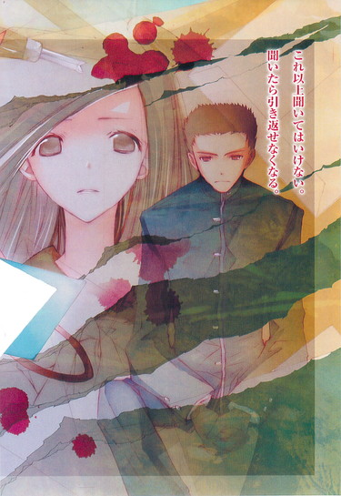
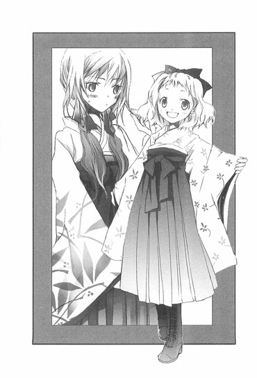

| [野村美月] 文学少女シリーズ03 | |
| 野村美月 | |
| (2015) | |
|
〝文学少女〟と繋がれた愚者
野村美月
|
底本データ
一頁17行 一行39文字 段組１段
太字は底本ではゴシック体太字。
「◎」は底本では蛇の目、1-3-27。
「 ◇ ◇ ◇」は底本では１２字下げて「◇ ◇ ◇」。
「ああっ、この本ページが足りないわ！」ある日遠子が図書館から借りてきた本は、切り裂かれ、ページが欠けていた──。物語を食べちゃうくらい深く愛する〝文学少女〟が、これに黙っているわけもない。暴走する遠子に巻き込まれた挙句、何故か文化祭で劇までやるハメになる心葉と芥川だったが......。垣間見たクラスメイトの心の闇。追いつめられ募る狂気。過去に縛られ立ちすくむ魂を、〝文学少女〟は解き放てるのか──？大好評シリーズ第３弾！

目次
プロローグ 自己紹介代わりの回想──ぼくは、恋する馬鹿者でした──
一章 ごはんは、残さず食べましょう──
二章 レモンクッキーは青春の味──
三章 切り裂きたいもの──
四章 過去から来た少女──
五章 あのとき、きみが泣いたので──
六章 愚か者の迷宮──
七章 〝文学少女〟の願い──
エピローグ ともだち──
〝文学少女〟と繋がれた愚者
野村美月
この手紙は、きみへの警告だ。
どうか逃げてくれ。
きみが、オレの心臓に甘い毒をまぶした手をかけ、揺さぶるたびに、心が狂おしくざわめく。もはや、自分の内側で荒れ狂う破滅的な衝動を、抑えることができない。
きみを切り裂きたいと、震えるほどに想う。昼も夜も、まぶたの裏にきみのことばかりが浮かぶ。
憎しみに満ちた眼差しを、オレに向けるその凜とした白い顔を、高慢な細い喉を、ずたずたに切り裂き、耳を、鼻を、削ぎ落とし、眼球を抉り出したいと、欲するのだ。柔らかな胸に無数の十字架を刻み、噴き出る生温い血で、きみの全身を染め上げたいと心が叫ぶのだ。
逃げてくれ。
オレは、きっときみを、切り裂く。
プロローグ ◎ 自己紹介代わりの回想──ぼくは、恋する馬鹿者でした
彼女はあまりに清すぎ、美しすぎる──。
恋する相手をそんな風に賛美した脚本家の卵がいたけれど、中学生の時、ぼくも彼に負けないくらい、恋の沼にどっぷりはまりこんでいた。
朝、目が覚めて、まず美羽の顔を思い浮かべる。アーモンドみたいな焦げ茶色の目と、ふっくらした唇。頭の上でひとつに結んださらさらの茶色の髪。
美羽はいつも、からかうようないたずらっぽい目で、ぼくの顔をのぞき込む。
──おはよう、コノハ。
──おはよう、美羽。
ぼくは毎朝必ず、想像の中の美羽に挨拶をした。美羽が目を細めて微笑むと、嬉しさに心臓がはずみ、一分でも一秒でも早く学校へ行って本物の美羽に会いたくてたまらなくて、そわそわと洗面所に向かうのだった。
美羽は今日、どんな風にぼくに笑いかけてくれるだろう、どんな声で語ってくれるだろう、美羽が書いている物語は、どこまで進んだのだろう。ああ、美羽に会いたい、早く会いたい。美羽の声が聞きたい。美羽の笑顔が見たい。
学校へ着くまで待ちきれなくて、通学路のプラタナスの木の下で、美羽が来るのをひたすら待った。そうして美羽が澄んだ光の中、ポニーテールを揺らしてやってくると、さも今通りかかったというふりをして、
「おはよう！ 美羽！」
と駆け寄るのだ。
授業中も、美羽のことばかり気にしていた。美羽の席が、ぼくの席の後ろにあったときは、一日に何遍も振り返って、額にかかる前髪や、伏せた睫毛に胸をときめかせずにいられなかったし、席替えをして美羽がぼくの斜め前にくると、細いうなじや花のつぼみのような横顔を、飽きもせずに眺め続けた。
美羽は大抵、透明な空色のバインダーを広げ、ルーズリーフに物語を綴っていた。
美羽の描く夢のような世界──。
そこに光のようにきらめき、舞い踊る、美しい言葉たち。
それは美羽の唇から語られるとき、さらに美しく鮮やかに輝き、ぼくをますます夢心地にさせる。
──ねぇ、特別よ。コノハにだけ、見せてあげる。
美羽がぼくにくれた言葉は、どれも砂糖菓子のように甘く感じられた。
あの頃のぼくは、まさに恋する馬鹿者で、足が地面についていなかったし、笑顔の垂れ流し状態で、救いようのない夢想家だった。
当然のように美羽も同じ気持ちでいてくれると思っていたし、二人の運命が固く結びついていることを疑ったことなんて、これっぽっちもなかった。
高校生になっても、大学生になっても、社会人になっても、美羽はぼくの側で物語を綴り、いたずらっぽく微笑みながら、『コノハ』と呼んでくれる。それだけじゃない。いつか美羽は本物の作家になり、みんなが美羽の価値を知ることになる。そんな風に信じていた。
けれど、中学三年生の春、ぼくは井上ミウという筆名で、十四歳の覆面天才美少女作家として華々しくデビューし、美羽を失った。
そうして高校二年生の今──。
ぼくは平凡な男子高校生として、ごく普通に学校へ通い、放課後は文芸部の部室へ行き、あんまり普通じゃないヘンな先輩の、おやつの作文を書いている。
一章 ◎ ごはんは、残さず食べましょう
「『野菊の墓』は、摘み立ての杏の味ね」
図書室で借りた文学全集をめくりながら、遠子先輩は甘い声でつぶやいた。
「夕日に照らされた畦道で、茜色に染まった杏の実を、指先で優しくつまんで口に含み、そぉっと歯を立てる感じなのっ。薄い皮が破けて、やわらかな酸味と幸せな甘さが舌にじんわり染みこんで、切ない苦さに、胸がきゅっと締めつけられるのよ！あぁ、少年時代の甘く儚い初恋の記憶！
『野菊の墓』の作者の伊藤左千夫は、正岡子規の弟子で、明治三十九年、雑誌『ホトトギス』にこの作品を発表して、夏目漱石に絶賛されたのよ。やっぱり名作っていいわぁ。杏が毎年違う実を結ぶように、何度食べても、そのたび新鮮で美味しいの！」
ぼくは、古い樫の木のテーブルで、五十枚綴りの原稿用紙を広げて遠子先輩のおやつの三題噺を書いていた。
最近、遠子先輩の中で日本の古い恋愛小説がブームなのか、昨日は鴎外の『舞姫』、その前は川端康成の『伊豆の踊子』、その前は樋口一葉の『たけくらべ』を読んで、熱心に蘊蓄を垂れていた。
「それ、公共物ですから。食わないでくださいよ」
シャーペンを走らせながら、冷静に注意すると、
「もぉ、わかってます」
頬をふくらませて答える。以前この人は、図書室の本をうっかり食べてしまい、一人で謝りに行くのは恥ずかしいとごねて、後輩のぼくを無理矢理付き添わせたのだ。
「あぁ、でも、美味しそう」
すぐに切なそうな溜め息をつく。まるで、フルーツパーラーのウインドウの前で、物欲しそうに指をくわえている幼稚園児のようだ。
「食っちゃダメですよ」
「わかってますってば。あぅ～、ここ、一際酸っぱくて、美味しいのよね～」
「本当に食わないでくださいね」
「はいは～い。心葉くんのおやつができるまで、おとなしく待ってます」
ひなたぼっこをしている猫の表情で、のんびり答える。
校舎の西の端にある部室は非常に狭く、古い本があちこちに塚を築いている。窓際にパイプ椅子を置いた遠子先輩は、そこに足を乗せて座り、窓からこぼれる秋の日差しを浴びて、細い指で本のページをめくっている。白い膝小僧がひだスカートの下からのぞいていて、猫の尻尾のような黒くて長い三つ編みが、肩から腰にこぼれ落ちている。
遠子先輩は、物語を食べる妖怪だ。
本のページや、紙に書かれた文字を、指で千切って口に入れては、はむはむ噛みしめ、こくりと飲み込む。
もっとも、〝妖怪〟というカテゴライズは、本人は大いに不満らしく、
『わたしは妖怪じゃありません。ただの〝文学少女〟です』
と、腰に手をあて主張する。
確かに、異様に本好きなのと、その本を愛するあまりぱりぱり食べてしまう以外は、古風で清楚なお嬢さんに見えないこともないのだけど──。
聖条学園の文芸部には、三年生の遠子先輩と、二年生のぼくの、二人きりしかいない。
秋も半ばをすぎ、他の部ではとっくに引き継ぎが行われているというのに、一体遠子先輩はいつ引退するのだろう？聖条は進学校だし、遠子先輩も一応受験をするんだよな......？全然勉強をしている様子はないけど、大丈夫なのか？まさか留年して、あと一年、居座る気じゃあ......。
ひそかに不安になったとき、遠子先輩が話しかけてきた。
「来月は文化祭ね。わたしのクラスはカレー屋さんをするのよ。心葉くんのとこは？」
「漫画喫茶です。椅子と机を並べて、インスタント珈琲とティーバッグの紅茶を用意して、漫画本を並べておけばいいから、楽ちんですよ。文化祭とか体育祭とか興味ないし、どうでもいいです」
「もぉ、そういう冷めた言い方、よくないと思うわ。心葉くんって若者らしくない」
「文化祭に命かけてる高校生のほうが、珍しいと思いますけど」
「つまらなそうな顔をしていると、そのまま固まっちゃうんだから」
頬をプンとふくらまし、ページをめくっていた遠子先輩が、いきなり叫んだ。
「ああっ！」
ちょうど最後の「。」を打ち終えたぼくは、驚いて顔を上げた。
なんだ、なにが起こったんだ？
遠子先輩は両手で本を持ち、目を見開き、わなわな震えている。
「こ、この本、ページが足りないわ。〝民さんは野菊のような人だ〟という、あの名台詞がないわ。二人の初々しいやりとりが、丸ごとすっぽり抜けてるわ。ここが一番美味しいのに！ああぁ、なんか切った痕があるぅぅぅ、ひどーい」
「......遠子先輩」
ぼくはふーっと溜め息をつき、額に手をあてた。
「な、なに？ 心葉くん？ その呆れているようなリアクションは。ひょっとして、わたしが食べちゃったと思ってる!?」
「公共物は食わないようにと、あれほど忠告したのに......ぼくは情けないです」
「違うわっ。わたしじゃないわ。わたしは心葉くんとずっと一緒にいたんだから無実よ」
「ぼくがおやつを書いている間に、こっそりつまみ食いしたんじゃないですか？」
「あーっ、やっぱり先輩のこと疑ってるぅ。ひどい！わたしはそんなことしません！いくら本屋さんと図書館が美味しいもの見本市でも、おなかがすいているときに、うっかり足を踏み入れちゃって、本の背表紙を眺めるだけで口の中によだれがたまってきて、おなかがくーくー鳴っちゃっても、ちゃあんと我慢してるもの！」
ぺたんこの胸をそらして、断固として主張する。
「それに、美味しいところだけつまんで、あとは残すなんて邪道よ。わたしは最初から最後まで全部綺麗に食べ切るわ。それが作者に対する礼儀というものよ」
その言葉には説得力があった。遠子先輩は、どんな本でも嬉しそうに最後まで食べきるし、たまにぼくが好みにあわない三題噺を書いたときも、辛いとか苦いとかベソをかきながら、最後の一欠片まで飲み込む。
「確かに、食い意地張った遠子先輩が、食べ残しをするはずありませんね」
うなずきながらつぶやくと、唇をへの字に曲げ、すねている目になった。
「うぅ、先輩への尊敬が感じられない」
そうして本を閉じ、パイプ椅子から勢いよく立ち上がった。
「とにかく！ 一番美味しい、とっておきのシーンを食べちゃうなんて許せないわ！それって茶碗蒸しの銀杏だけ、こっそり食べてしまうようなものよ！ショートケーキの苺だけ盗み食いするようなものよ！シーフードグラタンから海老だけ抜き取るようなものよ！待ちに待った至福の瞬間を横から奪い取り、絶望の淵に突き落とす悪魔の所行だわ！すべての美食家──いえ、読書家の敵！文芸部の敵だわ！これはなんとしても犯人を突き止めて、とっちめてやらなきゃ。早速調査よ、心葉くん！」
遠子先輩が、勇ましく言い放つ。
そう来ると思ったんだ。冗談じゃない、毎回遠子先輩の探偵ゴッコにつきあわされてはたまらない。ぼくは、できたてほやほやの三題噺を切り取り、遠子先輩のほうへ差し出した。
「おやつ──書き終わったんですけど、あとにしますか？」
今まさに、部屋から飛び出して行こうとしていた遠子先輩の足が、ぴたりと止まる。
「う......」
本日のお題は〝宮本武蔵〟〝ホットカーペット〟〝盆踊り〟──書きはじめる前に、
「秋といったら、栗よね～、和栗のモンブランみたいなお話を書いてねっ」
なんて、椅子の背を抱え込んで嬉しそうに言っていたけれど、どんな味になっているのかは知らない。
ぼくの指先で、ひらひら揺れる三枚の原稿用紙を、遠子先輩はまるで人参をぶらぶらされている馬のように、物欲しそうな顔つきで見つめている。
やがて、椅子にすとんと座り直すと、お花のような笑顔で両手を差し出したのだった。
「今、食べるわ。いただきまーす」
追記
ぼくが書いた〝モンブラン〟のような三題噺を、遠子先輩は絶叫しながら完食した。
「いやぁぁぁっ！ 宮本武蔵が、ホットカーペットと盆踊り対決してる～～～～。ホットカーペットにくるまれて、黒焦げになっちゃった～～～～。やぁ～～、このマロンペースト、熱くてねちょねちょしてる～～～～。栗の代わりに桜島大根が入ってるぅぅぅ。マヨネーズがかかってるぅ。気持ち悪～～～～い。うぅ......あぅ......ぅぅぅ......」
最後は口を押さえて、パイプ椅子にもたれてぐったりしてしまい、捜査は中止になり、ぼくは難を免れたのだった。
翌日は、秋晴れの上天気だった。
昨日、遠子先輩はだいぶダメージを受けていたようだったけれど、無事に家に辿り着けたのだろうか......そんなことを考えながら、教室に足を踏み入れると、クラスメイトの琴吹さんとはち合わせた。
「あ......」
「い、井上っ」
廊下に出ようとしていた琴吹さんが、即座に後ずさり、表情をこわばらせる。
ぼくは世間様向けの爽やかな笑顔を作り、友好的に挨拶をしてみた。
「おはよう、琴吹さん」
すると琴吹さんは、目を三角にしてぼくを睨み、
「相変わらず締まりのない顔っ。なんで井上って、誰にでもへらへらしてんの。そこ、どいて」
と、足早に歩いていってしまった。
夏に琴吹さんが、病院でぼくを庇ってくれたと聞いたとき、もしかしたらそんなに嫌われているわけではないのかと思ったりしたのだけど、二学期に入ってからも琴吹さんの態度は相変わらずだ。もともとキツイ系の美人で、愛想のよい人ではないけれど、ぼくに対しては本来の性格に輪をかけて、目つきや言動が刺々しいような気がする。
病院のベッドで、琴吹さんがうなだれて泣きそうな顔をしたのは、目の錯覚だったのだろうか？あのとき琴吹さんが言った言葉が、ひそかに気になっているのだけど、とても聞けそうにない。
溜め息をついて机に鞄を置くと、クラスメイトの芥川くんが近づいてきた。
「おはよう、井上」
「あっ、おはよう、芥川くん」
芥川くんは、琴吹さんとのやりとりを見ていたようだ。「気にするな」と慰めてくれる。
ぼくは笑って見せた。
「ありがとう。けど、今さらだから」
「そうか」
「うん。琴吹さんが、急に愛想よくなったら、びっくりして腰をぬかしちゃうよ。あ、数学の宿題の答え合わせをしてもいいかな？」
机の上にお互いのノートを広げ、短い言葉を交わす。芥川くんのノートは、いつもきちんと整理されていて、見やすい。真面目で穏やかな性格が、字にも表れている。
広い肩や高い背、涼しげで男らしい顔つき、冷静さ、誠実さ、安定──芥川くんは、ぼくが憧れるものをたくさん持っている。友達と呼べるほど密接ではないけれど、彼と一緒にいるのは心地よかった。
そのとき、芥川くんのズボンのポケットが震えた。
「すまない」
携帯電話を出して画面を確認し、眉をひそめる。
画面を睨みつける顔が、ひどく暗く、すさんだ雰囲気を漂わせていたので、ぼくはドキッとした。
芥川くんは硬い声で、もう一度、すまないとつぶやくと、廊下へ出ていってしまった。
電話、誰からだったんだろう？
家族？ 友達？ それとも恋人？
けど、芥川くんから女の子の話って聞いたことがない。穏やかな人なので、一瞬見せた嫌悪の表情が引っかかった。芥川くんでも、あんな顔をするんだ......。
それが、トラブルのはじまりだなんて、このときは思いもしなかった。
誰かに見られていると感じたのは、昼休みに廊下を歩いているときだった。
「井上、くん？」
か弱げな声で呼ばれて振り返ると、艶やかな髪を背中にたらした、大人しそうな女の子が立っていた。
あれ、この子、ぼくらと同じ学年の子だ。名前は知らないけど、たまに見かける。綺麗な子なので印象に残っていたのだ。ぼくになんの用だろう？
女の子は、緊張で一杯一杯の様子で口を開いた。
「ごめんなさい、急に呼び止めたりして。あの、わたし、三組の更科というの。井上くんは、一詩くんの友達、だよね？」
「カズシくん？」
「あ、ごめんなさい」白い頬が、ぱっと赤くなる。「井上くんのクラスの、芥川一詩くんのこと。わたし、一詩くんとつきあってるの」
芥川くんの彼女!?
ぼくは驚いて、まじまじと見返してしまった。更科さんは、必死な感じの表情で、ぼくを見つめている。髪はしっとりとやわらかそうで、顔立ちは清楚で優しげで、文句なしの優等生風美少女だ。芥川くんと並んだらさぞお似合いだろう。
けど、芥川くんに彼女がいるなんて初耳だ。モテるのは知ってるし、ついこの間も、可愛らしい水色の封筒が、教科書に挟んであったので、「ラブレター？」と訊いたら、困ったように言葉を濁していたけれど......。
もっとも、ぼくと芥川くんは、お互いの家族のこともよく知らない程度のつきあいだから、彼に恋人がいても不思議ではない。
「えーと、ごめん。芥川くんに彼女がいるって知らなかったから」
とたんに更科さんの表情が曇る。あ、失言だったか。
「......一詩くん、わたしのこと、井上くんにも話してないのね」
「いや、実は、芥川くんとぼくは、それほど親しいわけじゃ......」
慌てて取り繕う。けれど更科さんは、ぼくの言葉は耳に入っていないようだった。
「一詩くん、最近、様子がおかしいの。わたしのこと避けてるみたいで......もしかしたら、他に好きな子ができたのかもしれない」
黒い瞳に涙が浮かんでゆくのを見て困ってしまった。こういうのは苦手だ。とりあえず優しく言ってみる。
「それは誤解じゃないかな？ 芥川くんは、二股かけられる性格じゃないと思うよ？気になるようだったら、本人に尋ねてみたらどうかな」
すると更科さんは、ますます目をうるませて、じっとぼくを見た。
「井上くん、訊いてくれないかな？」
「えっ！」
「わたしからは怖くてとても訊けない。井上くんなら友達だから、一詩くんも本当のことを話してくれると思うの。ねぇ、一生のお願いよ、井上くん」
弱ったなぁ。なんで引き受けちゃったんだろう。
放課後、ぼくは芥川くんに、どう切り出すべきか迷っていた。
「さよなら、井上」
芥川くんが、教室から出て行く。マズイ！ ぼくは慌てて後を追った。
仕方がない。嫌なことは早くすませてしまおう。深刻なムードにならないよう、さらりと尋ねればいいんだ。
『芥川くん、今、つきあってる人いる？ 知り合いに頼まれちゃってさ』──。
ところが、前方を悠々と歩く彼との距離は、一向に縮まらない。芥川くんは弓道部員で、一年のときからレギュラーで活躍している。てっきり道場へ行くのかと思ったら、図書室へ入っていった。
そのままカウンターからどんどん遠ざかり、部屋の一番隅にある、日本の文学作品が並ぶ薄暗いコーナーで立ち止まり、本を物色しはじめた。棚から本を抜き取っては、ページをぱらぱらめくり、また棚に戻す。
随分熱心に選んでいるみたいだけど、調べ物でもしているのだろうか？
緊張しているせいか、周りが異様に静かに感じられ、唾を飲み込む音まで聞こえそうだ。棚の裏で、じっと息を潜めたまま声をかけるのをためらっていると、芥川くんが、肩に提げた鞄から、折りたたみ式のカッターナイフを取り出した。
え？
指先でパチンと刃を立てる。キラキラ光る切っ先が、目を射た。
？ なにをしているんだ？
様子がおかしいことに気づき、手に汗がにじんだ。息を押し殺し、瞬きもせずに見守っていると、芥川くんは険しい眼差しで、カッターの先を本の合わせ目にあてた。
まさか──。
心臓がドキンと音を立てる。
そのまま、手慣れた様子でカッターを下へ移動させた瞬間、皮膚に直接刃を突き立てられたような気がして、びくっとした。
昨日、遠子先輩がふくれっつらで広げてみせた『野菊の墓』が、脳裏にくっきり思い浮かぶ。
あるべき場所に存在しないページと、ナイフで切り取られたような痕──。
芥川くんが、本を傷つけた犯人なのか!?
棚の端をつかんだ瞬間、本に指が触れ、それが隣の本にあたり、小さな音を立てた。
「！」
振り向いた芥川くんが目を見開き、茫然とぼくを見つめる。
ぼくは信じられない気持ちで、その顔を見つめ返した。
芥川くんが、苦しげに眉根を寄せる。
頭が熱く痺れ、まともに思考が働かない。
「芥川くん。どうしてきみが、こんなこと......」
どうにか声を絞り出したときだ。
脇から、女子の制服に包まれた腕が、にゅーっと伸びてきて、カッターを握る芥川くんの手を、大胆に押さえつけた。
「つかまえたわ！ 現行犯よ！」
猫の尻尾みたいな長い三つ編みを揺らし、息をはずませて飛び出してきたのは、セーラー服に身を包んだ文学少女──文芸部の部長・天野遠子先輩だった。
◇ ◇ ◇
自分が卑劣で下等な人間であると気づかされたあの日以来、オレは周囲の人間に対して、誠実であろうと努めてきた。
すべてが切り裂かれ、生温かい血に染まり、オレの手の及ばない場所へ過ぎ去ってしまったあの罪の日から、オレは、二度と愚かな選択をしないよう用心深く振る舞ってきたつもりだ。
きみの願いに対しても、真摯な態度で臨めたらと思う。
きみが、どんな想いで、そしてどんな労力を払ってこの手紙を書いたのかを考えると、胸が焼けつきそうになり、きみに対して、できるかぎりのことをせずにはいられない気持ちになる。
だが、きみの要求は酷すぎる。オレはオレなりに誠意を尽くし、きみにオレのできる精一杯の対応をしたつもりだが、それでもきみは、納得できないだろうか。
きみの望みを叶えることはできない。それは、すべてを破滅に導く、悪魔のように不実な行為だ。
◇ ◇ ◇
「さぁ、どうして図書室の本を切ったの？ きっちり説明してちょうだい」
古い本に占拠された文芸部の部室で、遠子先輩はドラマに出てくる鬼刑事のように凄んでみせた。表面がでこぼこで脚が不安定な樫のテーブルには、有島武郎の作品集が、切り取られたページと一緒に並んでいる。
芥川くんは椅子に座り、静かにうつむいていた。
昨日、ぼくのおやつを食べて具合が悪くなり、捜査を断念した遠子先輩は、放課後早々、切り裂き犯を捕まえるべく図書室で張り込みをしていたという。
「犯人は現場に戻るという、わたしのヨミは当たったわね。掃除をサボって、棚の後ろに、空腹をこらえながら三十分もしゃがみ込んでいたかいがあったわ」
と、得意げに言われて、ぼくは頭が痛くなってしまった。
遠子先輩は、そのまま芥川くんを部室に連れ込んだのだった。
「きみが切り取ったのは、『一房の葡萄』の中の一場面よ。級友の絵の具を盗んでしまった少年が、みんなの前でそのことを暴かれ、先生に呼び出されて、恥ずかしさに張り裂けそうな思いでいたとき、先生が、膝の上にそっと葡萄の房を置いて慰めてくれるという、心あたたまる名シーンよ！この物語の一番美味しいシーンなのよ！ねぇ、中身の入っていない皮だけの葡萄を食べるハメになった人間の痛みと哀しみを、きみは想像したことがある？」
とんでもないことだわ！ というように遠子先輩が声を震わせる。
「一般的な高校生は、そんな想像しないと思いますけど......」
つい突っ込みを入れると、
「心葉くんは黙っててっ」
と、睨まれた。
「いくら心葉くんのお友達でも、食べ物を冒涜──いいえ、崇高な書物を傷つけるような行為を、〝文学少女〟たるわたしが見逃すわけにはいかないわ。一体どんな理由で、あんなことをしたの？」
「それは......」
芥川くんが口を開きかけたとき、遠子先輩の声のトーンが、いきなり上がった。
「わたしの推理はこうよ。ずばり、きみは自然主義の信奉者ね。愛読書は田山花袋の『蒲団』だわ」
思いもよらない発言に、ぼくも芥川くんも遠子先輩のほうを見て、ぽかんとしてしまった。遠子先輩が、自信たっぷりに鼻をひくつかせる。
「きみが無体を働いた『一房の葡萄』の作者の有島武郎は、明治末期に創刊された芸術家集団白樺派に集った文士の一人だわ。この人道主義、理想主義を高らかに謳い上げた白樺派と対をなす、現実を客観的に描くことを目指した文学が、田山花袋に代表される自然主義よ。もともと白樺派は、自然主義への反発から起こった思潮でもあるの。なので、わたしはすぐにピンときたわ。これは自然主義を心から支持する人間の、若さと愛情ゆえの暴走だって」
暴走しているのは、遠子先輩の想像力です。
肩を落としてがっくりするぼくの横で、芥川くんが冷静な口調で言った。
「いや、それは誤解です」
「えっ！ ち、違うの......？」遠子先輩が、目をぱちくりさせる。
「......はい」
狭い部室に、白々した空気が流れる。
「じゃあ、どうして、本のページを切ったりしたの？」
おずおずと不思議そうに、首を傾げた瞬間、細くて長い三つ編みが、薄い肩からはらりとこぼれ落ちた。
芥川くんは遠子先輩のボケっぷりを見て落ち着いたのか、背筋を伸ばし誠実な眼差しで語りはじめた。
「中間試験の成績が思わしくなくて、苛ついていたんです。以前から、なにかを傷つけたい──切り裂きたいという欲求があって......それが、本を切ることで満たされるような気がして、つい切ってしまいました」
試験の成績が思わしくないって、芥川くん、中間試験は学年で五位じゃなかったっけ？うちの学校で、部活をしながらその位置なら、じゅうぶんじゃないか？それとも芥川くんにとって五位は、苦しさに身悶えるほどの落第点なのだろうか？
日頃から、「数学は、三十点以上とったことがないわ」と自慢（？）している遠子先輩も、信じがたそうな顔をしている。
「テストの点数が悪くて、本を切っちゃったの？」
「はい」
「それだけ？」
「はい」
「本当に、自然主義は関係ないの？」
「それは、全く関係ありません」
遠子先輩の眉が残念そうに下がってゆき、三つ編みの先をいじいじといじったりする。
芥川くんは背筋を伸ばしたまま立ち上がり、ぼくらに向かって深々と頭を下げた。
「ご迷惑をかけて申し訳ありませんでした。これから図書室へ謝りに行って、切った本を弁償します」
そのまま出て行こうとするのを、遠子先輩が呼び止めた。
「待って！ 反省しているのなら、わざわざ名乗り出る必要はないわ」
振り返る芥川くんに、張りつめていた空気が溶けるような呑気な顔で微笑んでみせる。
「もちろん弁償はしてもらうけど。ラッキーなことに、わたしは図書委員に顔が利くのよ。虫が食ったことにして、文芸部のＯＢに新しい本を寄付してもらいましたと言って入れ替えてもらうわ。文芸部の株も上がるし、一石二鳥よね」
ぼくも急いで、うなずく。
「うん、それがいいよ。そうしよう、芥川くん」
遠子先輩も、たまには役に立つじゃないか。あとでうんと甘い作文を書いてあげようなんて思ったときだ。
「けど！ それできみの抱える問題が解決するわけじゃないわ。この先、きみがすべての悩みから解放されて、晴れ晴れとした気持ちで学園生活をエンジョイするために、必要なことがあるわ。それは仲間とともに、心の底から熱くなることよ。青春の息吹がストレスを空の彼方に吹き飛ばすのよ！」
なんだか雲行きが怪しくなってきた。芥川くんも、怪訝そうに眉をひそめている。
そんな彼に向かって、遠子先輩は満面の笑顔で言ったのだった。
「だからね、芥川くん。文化祭で、わたしたちと一緒にお芝居をしない？」
「どういうことですか！ 文化祭で劇をやるなんて聞いてませんよ！」
芥川くんがすっかり毒気を抜かれた顔で「考えさせてください」とつぶやいて出ていったあと、ぼくは遠子先輩に詰め寄った。
遠子先輩がパイプ椅子の背を抱きかかえ、嬉しそうな顔でぼくを見上げる。
「でも、もう、実行委員会に申請して、ステージを押さえちゃった」
「なっ！」
「だって麻貴に、オケ部は専用ホールでコンサートを開くけど、文芸部は今年も暇でしょう？って嫌味を言われて悔しかったんですもん。去年だって、部誌の一冊も出せずに、古典作品の展示をしただけだし......。しかも、お客さんが全然来なくて、心葉くん、クロスワードパズルをして遊んでたでしょ」
途中から、ぷくっと頬をふくらませて睨んでくる。ぼくは呆れた。
「部誌の一冊も出せなかったのは、遠子先輩が全部食っちまったからでしょう」
「そうだったかしら？ とにかく、今年は、人数が多いだけのオケ部なんかに負けていられないわ。それに、文化祭の劇を見て、文芸部の素晴らしさを知って、入部してくれる人がいるかもしれないもの」
どちらかと言えば、あとの問題のほうが切実なのだろう。前から遠子先輩は、部員の少なさを気にしていて、「心葉くんは甲斐性なしだし、わたしが卒業したとたん、文芸部が潰れちゃったらどうしよう」と、心配していた。
「いい？ 心葉くん？ これは先輩命令よ。きみも、文芸部の一員として文化祭で文芸部の存在をアピールして、部員を一人でも確保すべく、粉骨砕身するのよ」
出たっ。遠子先輩の『先輩命令よっ』が。ぼくは目立ちたくないし、平和に暮らしたいのに。
「二人しか部員がいないのに、劇なんてできるんですか？」
とたんに遠子先輩が、にっこりする。
「だから芥川くんを誘ったんじゃない。文化祭に出ると決めたときから、彼なら女の子のお客さんを呼び込めそうだわって目をつけていたのよ。心葉くんに口説いてもらうつもりだったんだけど、手間がはぶけたわ。これも、わたしの人徳ね」
それ、芥川くんの悩みと全然関係ないじゃないか。遠子先輩の一方的な都合じゃないか。なのに遠子先輩に弱みを握られて、わけのわからない劇に引っ張り込まれようとしている芥川くんに、ぼくは深く同情した。
「一体どんな劇をするんですか？」うさんくさそうに尋ねると、
「もちろん、文芸部にふさわしい、青春の息吹あふれる、切なく美しい文芸大作よ！衣装のことを考えると、やっぱり日本の明治以降の作品がいいと思って、この一週間、選考に選考を重ねたわ」
それで、古い恋愛小説ばかり読んでいたのか。
遠子先輩は椅子から立ち上がり、積んであった本を手に取り、高らかに告げた。
「そうして選んだ演目が、この武者小路実篤の『愛と死』よ！」
「武者小路？ その人も白樺派ですよね？」
授業で習ったことを思い出しながら言うと、遠子先輩は嬉しそうにうなずいた。
「ええ、そうよ！ 芥川くんが、同じ白樺派の有島武郎の作品集を切ったことに、運命を感じるわ」
そんなことで、運命を感じないでほしい......。
遠子先輩は、ここぞとばかりに語りはじめた。
「武者小路実篤は一八八五年──明治十八年、五月十二日に子爵家の末っ子として誕生するわ。といっても、彼の父親は早くに亡くなったので、お家はそれほど裕福というわけではなくて、節約生活を送らなければならなかったのだけど。
学習院に進学した彼は、そこで出会った志賀直哉たちとともに、同人雑誌『白樺』を創刊し、その中心人物として、人間の持つ美しさや善意を力強く描き出した作品を、数多く残したのよ！やっぱり青春といったら、白樺派よ！大正デモクラシーよ！
極限まで削ぎ落とされた知的な文体で『城の崎にて』や『小僧の神様』などの名作を残し、小説の神様と呼ばれた志賀直哉！血が迸るような熱い文章で、人間の運命や情念を描ききった有島武郎！豊かな心理描写とリズミカルな文体を駆使して、己の心の欲するところに身をゆだねる〝まごころ哲学〟を確立した里見弴！
志賀直哉の作品が、名人が打った喉越し滑らかで腰のある究極の蕎麦なら、有島武郎の作品は、レモンをかけていただく、ねっとりとした生牡蠣。里見弴は、表面がつるつる滑る里芋の煮っ転がしみたいな感じなの。どれも舌が震えるほどに美味しくて、食べ過ぎてしまうわ。有島の『生まれ出づる悩み』と里見の『極楽とんぼ』は必読よ。
そして、忘れてはいけないのが、この人！ 武者小路実篤よ！わたし的には、白樺派といったら、武者小路なの！仰々しい名前や華族の出であるということから、書いているものも敷居が高くて難しいんじゃないかと誤解されがちだけど、実際に作品に触れてみれば、娯楽性の高さや、文章の読みやすさに衝撃を受けるはずよ。
武者小路の特徴は、なんといっても会話の多さと、その軽妙さね。ページを埋めつくすほどの長台詞が出てくることもしょっちゅうだけど、すべてにリズムがあって、すらすら読み進めることができるの！言うなれば武者小路の作品は、一流の料亭でいただくお豆腐料理のようなものよ。食感はさっぱりあっさりしていながら、大豆の風味が絶妙の甘さとコクをかもしだし、あとを引くような苦りがあって、最後の一口まで食べ終えた瞬間、あぁ、美味しかったなぁって、溜め息をついてしまうのよ」
目を閉じ本当に溜め息をついたかと思ったら、ぱっと目を開け、うきうきと顔を近づけてくる。
「中でも彼が書いた『愛と死』のヒロインの夏子は、文学史上屈指の可憐なヒロインよ。真っ白なお豆腐みたいにピュアで爽やかで、なにもかけずにそのままいただいても、美味しいの！留学してしまった主人公と手紙のやりとりをするのだけど、その文面がそりゃもう初々しくて、胸がキュンとしてしまうのよ。それにねっ、それにねっ、登場シーンもキュートで可愛いのっ。お庭で、女学生が集まって、逆立ちの競争をしているのよ。夏子は逆立ちの名人で、宙返りもできちゃうの。お兄さんのお誕生日の宴席で、見事な宙返りをきめて、お客さんたちの拍手喝采を浴びるのよ！」
「待ってください！」
際限なくしゃべり続ける遠子先輩を、ぼくは強引に遮った。
「宙返りするヒロインって、それ、根本的に無理です！んなもん誰がやるんですか？」
「あら、逆立ちくらい誰でもできると思うわ。宙返りだって、でんぐり返しの練習をしてたら自然にできちゃったって、夏子も言ってるから平気よ」
能天気に笑う遠子先輩に、ぼくは厳しく断言した。
「無理です。少なくとも、バレーのボールを顔で受けたり、アタックをしようとしてネットに突っ込んだり、ソフトボールで、振り回したバットで自分の頭を叩いたり、水泳の授業でカッコつけてバタフライをしようとして、足がつってプールで溺れている遠子先輩には、絶対無理です」
遠子先輩が真っ赤になる。
「どうして、わたしの恥ずかしい姿を、そんなに目撃しているの」
「遠子先輩が、しょっちゅう恥ずかしいことをしてるからです。自分が重度の運動音痴だと自覚してください。逆立ちも宙返りも、遠子先輩には無理です」
その言葉にカチンときたらしい遠子先輩が、頬をふくらませる。
「そんなことないもん。文芸部への愛があればできるもん」
「文芸部、関係あるんですか」
「ええ、物語への愛は、すべてを可能にするのよ。逆立ちのひとつやふたつ、へいちゃらだわ。わたしの愛のパワーを見せてあげる」
壁に向かって逆立ちをしようとするのを見て、ぼくは慌てた。
「やめてください。怪我をしたらどうするんですか！それに、その格好で逆さまになったら、スカートがめくれてパンツが丸見えですよ！」
「体育のハーフパンツを穿いてるから平気よ。目を開いて、よぉぉぉぉく見てらっしゃい！」
遠子先輩が両手を高く上げ、壁に向かって勢いよく踏み込む。
「わ────、ストップ、遠子先輩！」
ひだをたっぷりとったスカートがひるがえり、白く細い足が、宙に伸びる。
小さなお尻を包む黒いハーフパンツが、ちらりと見えたとき、伸びた足が前に傾き、悲鳴があがった。
「きゃあ！」
「あ、危ない！」
とっさに遠子先輩の足首をつかむ。けれど右足しかつかめず、そのまま一緒に、本の塚に向かって倒れ込んでしまった。
積み重ねられた本が雪崩のように、ぼくらの上に降りかかってきて、塵と埃がもうもうと舞い上がる。さらに、倒れた本の塚が、その隣の塚を倒し、またその隣の塚も崩れ、といった具合に、狭い部室に本が散らばり、大惨事になってしまった。
大量の本の下敷きになった遠子先輩は、埃を吸い込みくしゃみをしながら、涙目で言った。
「くしゅん。やっぱり、他のお話にしたほうが、いいみたい」
どうにかして遠子先輩に、劇の上演をやめてもらえないだろうか。
翌日。教室の席で、渋い顔で思案するぼくの前に、芥川くんがやってきた。
思わず背筋を正すと、芥川くんは普段と変わらない静かな表情で言った。
「昨日は、井上や天野先輩に面倒をかけてすまなかったな」
穏やかな口調にホッとし、ぼくもいつも通り微笑んでみせる。
「気にすることないよ。そりゃ驚いたけど、苛々することは誰にでもあると思うし」
そうだ！ 芥川くんが劇に出ないと言えば、遠子先輩もあきらめるかもしれない。
ぼくは身を乗り出した。
「劇のことだけど、遠子先輩が勝手に盛り上がっているだけだから、断ってもいいよ。なんなら、ぼくから遠子先輩に話しておこうか？」
ところが芥川くんは、真面目な顔で言ったのだった。
「いや、出演させてもらうことにした。オレは地味な人間で役者の素養もないから、井上たちの足を引っ張るかもしれないが、精一杯やらせてもらうつもりだ。よろしく頼む」
って、ええええええええっ！
放課後。狭い部室に集まったメンバーを見て、ぼくはまたまた目をむいた。
「こ、琴吹さん!? それに、竹田さんまで!?」
「なによ？ あたしは、遠子先輩に頼まれたから、出るだけだからねっ。井上は関係ないんだからっ。てゆーか、井上と共演なんて冗談じゃないんだからね」
ガンをつけてくる琴吹さんの隣で、ふわふわの髪をした小柄な女の子が、にこにこ笑っている。
「えへっ、おもしろそうなので、おっけーしちゃいました～」
竹田さんは図書委員をしている一年生だ。以前、彼女のラブレターの代筆をしたことがある。そのときあれこれあって、ときどき文芸部へ遊びに来るようになったのだ。
竹田さんは子犬みたいに人なつこい目でぼくを見上げ、可愛らしく首を傾げた。
「あれれ？ 心葉先輩、お顔が引きつってますよ。千愛と共演するの嫌なんですか？」
「いや、そういうわけじゃ」
あたふたするぼくを、琴吹さんが睨んでいる。いつもに増して視線がキツイ。そういえば琴吹さんも図書委員だから、二人は知り合いのはずだ。前に琴吹さんは竹田さんのことを、『いかにもロリコン受けしそうな子よね』と、くそみそに言ってたっけ。
大丈夫なのか？ このメンバーで？
冷や汗をかくぼくの隣に、芥川くんが真面目な顔で立っている。それを見て、竹田さんは声を張り上げた。
「うわぁ、芥川先輩も出演されるんですかぁ。すっごぉぉぉぉい。あたし、友達にうらやましがられちゃいますよぉ。一年生にも、先輩のファンは多いんですよ。あっ、あたし、竹田千愛っていいます。よく弓道部に、見学に行ってました」
芥川くんは優しい先輩の表情で、うなずいた。
「ああ、知ってる。前に、井上と二人で来たこともあったな」
「はい。仲良しですから」
ぼくの腕に自分の腕をからめ、えへっと笑ってみせる。そっぽを向いていた琴吹さんが、凄い勢いでこっちを振り返る。
「心葉先輩ともども、よろしくお願いしますね。あっ、ななせ先輩も仲良くしてくださいっ。ななせ先輩って呼んでもいいですか？」

「イヤ」
眉をぴくぴく震わせて、琴吹さんが即答する。
対する竹田さんは、笑顔全開だ。
「はいっ、ななせ先輩って、呼んじゃいまーす」
「イヤって言ったのよ！ あたしは！」
「やぁん、ななせ先～輩、こわーい」
ひしっとしがみついてくる竹田さんを見て、琴吹さんがキレそうな顔になる。
「～～～～っ、てゆーか！ 井上、あんた、いつまで腕組んでんのっ！」
「わわっ、ごめん」
急に矛先を向けられて、ぼくは慌てて竹田さんの腕をほどいた。竹田さんが「あぁん」と残念そうな声を出す。
「と、とにかく、小学生のお遊戯会じゃないんだから、べたべたすんのやめてよねっ」
琴吹さんは赤い顔でそう言い、ツンと横を向いてしまった。
そんなぼくらのやりとりを、芥川くんは大人びた態度で見守っている。
そして、元凶の遠子先輩はと言えば......。
「まぁ、みんな和気藹々ね。このメンバーを選出したわたしの目に、狂いはなかったわ」
すっかり悦に入って、うなずいている。ぼくは家に帰りたくなってしまった。
テーブルの周りに無理矢理椅子を五つ押し込み、各自が腰かけて、やっと劇の話になった。遠子先輩が、ハードカバーの古い本を誇らしげにかかげる。
「──というわけで、部内で慎重に協議を重ねた結果、演目は武者小路実篤の『友情』に決まりました！」
「わぁ、すごーい。なんか格調高そうです～」竹田さんがパチパチと拍手をする。
協議を重ねた結果って......逆立ちに失敗して、無難に武者小路の代表作に落ち着いただけじゃないか。
遠子先輩はかまわず、続けた。
「『友情』は大正八年に、大阪毎日新聞の連載小説として書かれた作品よ。みんなは、読んだことがあるかしら？」
「いいえ」「ありませーん」「あたしも」
芥川くん、竹田さん、琴吹さんが答える。
「じゃあ、簡単にあらすじを説明するわね。登場人物は、脚本家の野島。野島の親友で小説家の大宮。野島が恋をする女学生の杉子。杉子の友達で大宮の従姉妹の武子。あとは杉子の兄で野島の友人の仲田。野島の恋敵の早川──こんなところかしら。
物語は、主人公の野島が、杉子を見初めたところからはじまるわ。杉子こそ、自分の妻になる女性だと確信した野島は、彼女に会うために仲田の家へ通いつめ、一途に恋するのよ。
そんな気持ちを、野島は親友の大宮にだけ打ち明けるの。大宮は男らしく誠実な男性で、野島の話に真剣に耳を傾け、野島の恋を応援してくれるわ。
けれど、杉子が好きになったのは、野島ではなく大宮だったのよ。
大宮は恋と友情の間で苦しみ、友情をつらぬくために海外へ留学するのだけれど、そんな彼に、杉子は何通も手紙を書くの。そうして、ついに杉子への想いを抑えきれなくなった大宮は、彼女を自分の元へ呼び寄せるのよ」
竹田さんが目を丸くする。
「ふぇ～、野島サンは失恋したうえに、親友もなくしちゃうんですかぁ？可哀想～」
「そうね。でも、ラストは哀しいけれど、とても力強くて感動的なのよ。それに野島が杉子に恋をして一喜一憂する様子は、胸がいっぱいになっちゃうし。ほらほら、このシーンなんか素敵よ？野島が砂の上に杉子の名前を書いて、波が十度押し寄せるまで、字が消えなかったら想いは叶うって願かけをするの。ロマンチックよね～」
遠子先輩がページを開き、説明する。
竹田さんと琴吹さんが両脇からのぞきこむ。
それから、三人で顔がくっつきそうな距離で、ページをめくりあい、「ねっ、ここが最高なの」とか、「ええ、でもこのシーンは」とか言いながら、拾い読みをはじめた。
最初は遠子先輩の独壇場で、「ねっ？ね？野島クン可愛いでしょう？人を好きになって、世界がまったく変わってしまうこの気持ち、わかるでしょう？」などと熱弁を振るっていたのが、途中から琴吹さんと竹田さんが、反論しはじめた。
「えー、野島、はしゃぎすぎですよ、遠子先輩」
「あたしもぉ、ここまで熱烈に想われちゃったら、引くかもですぅ。野島サンって乙女チックな女学生みたいですよね」
「そ、そうかしら？ 恋をしたら、このくらい普通じゃない？」
「けど杉子サンだって、大宮サマへのお手紙に『野島さまの妻には死んでもならないつもりでおります』『野島さまのわきには、一時間以上は居たくないのです』とか書いちゃってますよぉ」
「わかるー。野島ウザいもん。杉子のこと勝手に妻扱いして、他の男と話してるだけで、『あんな女は豚にやっちまえ、僕に愛される価値のない奴だ』とか怒ってるし。こいつ何様？」
「ですよね～。杉子サンに、自分だけに頼ってほしいとか、自分は帝王で杉子は女王になるとか思いきりドリーム入ってますしぃ。これじゃ、杉子サン、逃げますよ」
「そうそう」
急に意気投合する二人に、遠子先輩が必死に、野島の弁護を続ける。
「ええっ、そこが野島クンの萌えどころなんじゃない！恋をすれば、人は頭の中でいろんなストーリーを組み立てて、ドキドキわくわくしちゃうし、同時に自信が持てずに落ち込んだり苛々したり、子どもみたいな八つ当たりをしちゃったりもするわ。
大好きな人が自分を好きになってくれたら、きっと今よりずっと素晴らしい人間になれるし、世界を支配することだってできる。そんな、心が天に舞い上がってゆくような幸せな気持ちと、我に返ったときの泣きたくなるような不安。その間で、真剣に右往左往している野島クンって、とってもまっすぐで、可愛くて、素敵だと思うけど」
笑顔の遠子先輩に、琴吹さんがきっぱり言う。
「いくら遠子先輩のご意見でも、それは同意できません。こーゆー勘違い男は、甘やかしたら、つけあがるに決まってます」
「はーい、千愛も、そー思いまーす。それに比べて大宮サマはクールで素敵ですぅ。卓球で杉子サンを負かすとこなんか、カッコよすぎて萌え萌えですよ～」
「だね。大宮はいいやつだね。外国へ行くときの別れの言葉も泣かせるね」
琴吹さんがしたり顔でうなずく。
「そんなぁ、二人とも、野島クンの魅力にも、気づいてあげて～～～～」
小説の登場人物のことで、よくこれだけ盛り上がれるものだと、ぼくは感心してしまった。女の子の会話についてゆけず、芥川くんと二人でぼーっと眺めていたら、竹田さんが話を振ってきた。
「心葉先輩と芥川先輩は、どう思われますか？」
「えっ？ あの......確かに野島は、空気読めてないかもしれないけど、大宮もいきなり同人誌に杉子との往復書簡を載せて、それを野島に読めっていうのはどうかな......と」
もごもごとつぶやいたとき、芥川くんが急に硬い声で言った。
「オレは大宮は、杉子を受け入れるべきではなかったと思う。たとえどんな理由があっても、自分を信頼している友人を裏切るような真似は、誠意ある人間のすべきことではない」
芥川くんの表情も、声と同じくらい厳しく張りつめていた。宙を見据える瞳が、強く光っている。
思いきりのマジレスに、竹田さんと琴吹さんがぽかんとする。
ぼくも焦ってしまった。どうしたんだ、芥川くん！
空気が白けかけたとき、遠子先輩がテーブルに手をついて、身を乗り出してきた。
「あらっ、誠意ある立派な男性が葛藤するからこそ、文学が生まれ、ときめきが生まれるのよ。大宮クンが女たらしのプレイボーイだったら、杉子との往復書簡に、こんなにヤキモキさせられたりしないわ。わたし、このシーンが大好きなの。お豆腐もう一丁！いえ、もう三丁！四丁！ううん、ありったけ持ってきて！生姜山盛りで！みたいな感じ？」
ぼくは額に手をあてた。
「その譬え、難解すぎです、遠子先輩」
芥川くんはあっけにとられているし、琴吹さんと竹田さんも困惑している。
遠子先輩は右手の人さし指を立て、それを左右に振りながら嬉しげに言った。
「うふっ、簡単に言えば、おなかいっぱーい、けどまだ食べるーみたいな？」
「わけわかりません。もういいですから、話を進めましょう。時間もないですし」
「やだ、本当！」壁の時計を振り仰いで、目を見張る。「じゃあ、さくさくと配役を決めちゃいましょう。やっぱり野島が心葉くんで、大宮が芥川くんかしら？」
「嫌です。主役なんてできません」
ぼくは即座に言った。劇に出るだけでも気が重いのに、とてもそこまでつきあえない。
「えー、千愛も、妥当なキャストだと思いますよ」
「そうだよ。男は芥川と井上しかいないんだから、ぐだぐだ言ってないで、やりなよ」
「オレが野島をやろうか？」芥川くんが申し出る。
「それはダメですよぉ。大宮サマは、長身の二枚目のイメージなんですから。野島サンのほうがカッコよかったら、杉子サンが大宮サマを好きになる説得力がありません」
竹田さんがもっともなことを言う。けどそれって、ぼくに対して失礼じゃないか？
すると、遠子先輩が朗らかな声で言った。
「よし、わかったわ！ 文芸部の部長として、ここはわたしが、野島を引き受けるわ」
「ええっ、遠子先輩が!?」
「うわぁ、男装の麗人ですかぁ？宝塚ですかぁ？」
琴吹さんと竹田さんが目を丸くする。
芥川くんも驚いているようだし、ぼくも惚けてしまった。そりゃ確かにその貧相な胸なら、サラシなしでも男装可能だろうけど......。
「任せておいて、〝文学少女〟のわたしが、最高の野島を演じてみせるわ。だから、芥川くんは大宮をやってね？」
「はい。オレでよければ」
芥川くんがうなずく。
「よかったぁ。よろしくねっ、芥川くん！ わたし、芥川くんには、どうしても劇に出て欲しかったから、芥川くんが来てくれたとき、やったぁって思ったのよ」
とろけそうな笑顔で、そんなことまで言う。やけに力がこもっているけど、そんなに文化祭で女性客を確保したかったのだろうか。芥川くんは困っているような、恥ずかしそうな、曖昧な笑みを浮かべている。
「えっと、次はヒロインの杉子ね」
「はいはーい、ななせ先輩がやるのがいいと思います」
「やっ、竹田！ あんたなに言ってんの！」
琴吹さんが、うろたえる。
「だって、杉子サンは、野島サンが一目惚れしちゃうような美少女ですから、ななせ先輩にぴったりだと思うんですよぉ」
「で、でも、その......あたし、演技なんて......」
「千愛ちゃんの言う通りね。ななせちゃんなら、きっと素敵な杉子になるわ。やってくれるわね？ななせちゃん？」
遠子先輩に肩に手を置かれ、琴吹さんが真っ赤な顔で声をつまらせる。ぼくのほうを、二、三度ちらちらと見てから、恥ずかしそうな小さな声で、
「......は、はい」
とつぶやいた。
「琴吹さん、頑張ってね」
激励のつもりで声をかけると、もじもじしていたのが急にキッと顔を振り上げ、「役を引き受けたのは、井上とは関係ないからねっ」と、念を押された。
「う、うん」
その後、竹田さんが杉子の友人で大宮の従姉妹の武子役に決まり、ぼくは野島の恋敵の早川をやることになった。それなら大して出番もないだろうとホッとしていたら、遠子先輩にシナリオを書くよう厳命されたのだった。
「来週の月曜日までにお願いね。期待してるわ、心葉くん」
──月曜ってあと五日しかないじゃないか。本当に後輩使いが荒いんだから。
解散後。
図書室で『友情』を借りて表に出ると、校舎の壁も、校庭の桜の木も、まばゆい夕日に染まっていた。波のように満ちてくる朱色と金色の光の中、寒々とした秋の空気を頬に感じながら校門を通りすぎる。
すると、少し先の方に芥川くんの姿が見えた。
赤い郵便ポストの横に自転車を止め、背筋をぴんと伸ばして立っており、手紙を投函しようとしているようだった。あざやかな夕焼けに染まった横顔が、どこか張りつめて、憂鬱な影を帯びているように見えて、近づきかけた足が止まる。
「......」
芥川くんは長方形の白い封筒を、眉根を少し寄せ、切なそうな目で見おろしていた。
しばらくそうしていたあと、手紙をそっとポストに投函し、自転車にまたがった。
「芥川くん」
走っていって声をかけると、ほんの少し恥じらいを含んだ顔で振り返った。
「今、帰りだったんだね？」
「ああ。部活の方へ顔を出してきた」
芥川くんが自転車から降り、そのまま夕暮れの道路を二人で並んで歩き出す。
ぼくは、気になっていたことを尋ねてみた。
「芥川くん、本当に劇に出ることにしてよかったの？遠子先輩のことなら気にすることなかったんだよ？」
端整な横顔を向けたまま、胸に染みこんでくるような静かな声で芥川くんがつぶやく。
「すまんな。心配をかけて。だが、天野先輩に劇に誘われたとき、普段の自分と違うことをしてみたくなったんだ。いろいろと煮詰まっていたから、気が紛れて、かえってありがたい」
「それ、成績のこと？」
息が少し、苦しくなる。
こんなこと、ぼくが訊いていいんだろうか？踏み込みすぎないように、微妙なバランスを崩さないように......薄い氷を踏むように不安定な、危うい気持ちで、慎重に言葉を選ぶ。
「もしかしたら他にも悩んでることがあるんじゃない？たとえば、恋愛......とか」
口にしたとたん、胸の鼓動が一層高まったし、後悔した。
もし、不快感を示されたら......。けど、芥川くんは表情を変えなかった。
「何故、そう思ったんだ」
「きみ、モテるから。彼女とかいるの？」
更科さんの顔が頭に浮かぶ。しっとりした長い髪。清楚で大人しげな面差し。細い声。
──お願い。他に好きな子ができたのか、一詩くんに訊いてほしいの。
芥川くんは二股をかけられるような人じゃないと思う。けど。
「いや」
答える声が、少し硬い。
「そっか、意外だな」
「そんなことはない」
更科さんのこと知られたくないのかな？ それは照れくさいから？それとも他に話せない理由があるのだろうか？
「井上こそ、どうなんだ？」
「ぼく？ いないよ。きみと違って女の子に呼び出されたこともないし」
「天野先輩とは仲がいいようだが。恋人じゃないのか？」
ぼくはコケそうになった。
「やめてよ。それだけは絶対に有り得ないよ。ぼくは遠子先輩のおやつ係──いや、パシリだよ。いつもこき使われているんだ。後輩虐待だよ。あの人は横暴なんだ」
そこだけは、はっきりと主張する。
「そうか......なら」なにか口にしかけて、「いや、いい」とつぶやく。
飲み込まれた言葉が気になった。ぼくに、なにを訊こうとしていたのだろう。
「じゃあさ、芥川くんは、どんな子がタイプ？」
今度は少し遠回しに尋ねてみる。芥川くんは考え込むようにうつむいた。
「......タイプというのは、特にないように思う。ただ」
一瞬、口を閉じ、切なそうな眼差しになる。
「......相手の意外な一面を見せられると、気になってしまう。普段は強気で意地っ張りなやつが、一人で泣いている姿を見てしまったときとか」
それは単なる譬えにしては実感がこもっていた。決して泣かないはずの勝ち気な女の子が見せた涙に、芥川くんは心を揺らされた経験があるのだろうか......。
ふと、夏休みに入る前、病院のベッドで琴吹さんが見せたか弱げな顔が頭に浮かんだ。
いつもツンとしている琴吹さんが、目に涙をにじませてうつむいていたとき、ぼくは動揺した。あのときの琴吹さんを思い出すと、少し落ち着かない気持ちになる。
琴吹さんを好きになってしまったとか、そんなことはないのだろうけど......。
あれ？ でも？ 芥川くんの彼女の更科さんは、強気で意地っ張りというタイプではないよね？それとも、大人しそうに見えるけれど、実は遠子先輩みたいに暴れん坊なのかな？遠子先輩も外見だけなら、しとやかな文学少女だし。
「井上は？ どんな人がタイプなんだ？」
ふいに問われて、ぼくは答えにつまってしまった。
陽炎のように頭に浮かぶ懐かしい、愛しい、女の子のことを打ち明けるわけにはいかなくて、胸が裂けそうになって、
「わからないや......」
無理して笑顔を作り、つぶやいた。
空気はいつの間にか暗く冷たくなり、外灯に照らされたアスファルトに黒い影が浮かんでいる。あとは当たり障りのない話をして、ぼくらは別れた。
◇ ◇ ◇
きみへの手紙は、何通目になるだろう。
先日出した手紙では、感情的になって、きついことを書いてしまったと後悔している。
きみが今現在も、長く辛い戦いの最中にあるということをオレは失念していた。きみは、世界の何もかもが自分に敵意を持ち、槍を冷たく閃かせて向かってくると感じているのだろう。幾度も裏切られ、傷つけられ、最後の望みすら、最も近しい人間によって断ち切られてしまったので、この世に味方など一人もいないと固く信じているかもしれない。
きみの強靭な意志と、火のような勝ち気さが、世界への憎しみと拒絶から来るものであることは、もうわかっている。今のきみにとっては、憎しみこそが自らを立たせる為に必要な杖であることも。
それでも、きみに憎悪に満ちた眼差しを向けられるのはたまらない。オレはきみの手助けをしたいと、胸が潰れそうなほどに願っている。きみに会うことを避けているオレが、そんなことを言っても信じてもらえないかもしれない。けれど、オレは本当にきみの味方になりたいのだ。
もしきみが、あんな不誠実な行為をオレに望むのでなければ、オレは喜んで君のもとへ駆けつけるつもりだ。
だからどうか、冷静になってほしい。ほんの少しでいいから、心を開いてほしい。
きみが泣いているのではないか気がかりで眠れないと言ったら、きみは怒ってオレの頬を打つだろうか。
二章 ◎ レモンクッキーは青春の味
配役決定から数日間、ぼくは部室でシナリオ執筆に専念することになった。
「武者小路の小説は、主人公の独白的な地の文と会話文で構成されているから、シナリオにしやすいはずよ。心葉くんならできるわ。頑張って」
遠子先輩は笑っていたけれど、いくら会話文が多いからって、そのままそっくりシナリオに移し替えられるわけじゃない。それに役者が足りないから、杉子の兄の仲田や、その友人たちが出せない。彼らの台詞を、不自然にならないよう補わなければならないし、場面だって、そうころころ変えられない。長台詞も、小説ならともかく、舞台の上であまり続くようだと不自然だし、客も飽きる。
五十枚綴りの原稿用紙と、図書館で借りてきた『友情』を交互に睨みながら、苦悶の表情で文章を捻り出すぼくの横で、遠子先輩はパイプ椅子に足を乗せてお行儀悪く座り、楽しそうに注文をつけてくる。
「大宮の秘めた想いと、杉子の大宮への恋心が、ちゃんとお客さんに伝わるように書いてね。野島と大宮と、杉子──この甘酸っぱい三角関係が、このお話の、一番美味しいところなんだから」
「人を恋する喜びに夢中になる野島。そんな親友を控えめな態度で応援しながら、杉子に惹かれてゆく大宮──ああ、浪漫よね！」
「大宮は、わざと杉子に冷淡に接するのだけど、逆に杉子はそんな彼を、どんどん好きになっていってしまうのよ。──野島と大宮と、杉子、それに杉子の友達の武子の四人でトランプをするシーンで、動揺して赤くなったり、ぼぅっとしたりして、へまをしてしまう杉子は本当に可愛いわ」
「そう、まるで柚を絞ったポン酢をかけていただく湯豆腐のように、口の中とおなかが、ぽかぽかとあたたかくなるの。同時に、野島クンの心に共感して、ほのかに漂う酸っぱい柚の香りに、胸がキュンと締めつけられるのよ」
「野島と大宮の友情も、たっぷりこってりお願いね。ななせちゃんも言ってたけど、外国へ向かう前、駅に見送りに来た野島に、杉子への気持ちを押し殺しながら『僕は君の幸福を祈っているよ』と告げるシーンは、感動的だわ。熱いお豆腐に、舌がピリッと火傷しそうになるような痛みがあるわ」
「大宮のモデルは、『白樺』の同人の、志賀直哉じゃないかと言う人もいるのよ。華族の出でありながら切りつめた生活を送らなければならなかった武者小路と、資産家の息子で学生生活を大いに楽しんでいた志賀、武者小路は運動が苦手で、志賀はスポーツ万能、育った環境も性格も近いようで異なる二人が、創作を通して、無二の親友になっていったの。二人は徒歩で、旅行へ出かけたりもしたのよ。おじいさんになってからも、ずうっと仲良しだったのよ」
そんな調子で、武者小路と志賀の友情エピソードなんかを嬉しそうに語りながら、ぼくの書き損じの原稿を引き寄せ、指で端から千切って、ぱりぱり食べはじめる。
「うーん......ちょっと台詞が長すぎて、味がぼやけてるかしら？会話はリズムが命よ。まな板に載せた大根を包丁で刻むように、大切な台詞はゆっくり落ちついたテンポで。コミカルなシーンは短く早いテンポで、包丁を動かしてゆくのよ。トントントーンって」
「あっ、ここ、とってもいい感じ。よく冷えたお豆腐が、喉をつるんとすべってゆくみたい。そう！武者小路は、こんな感じよ」
「うぅ、このへん固ぁい。お豆腐の中に、焦げた海老の尻尾が入ってるぅぅぅ」
「わぁっ、ここ、ほかほかで美味しい～。口の中で、はふはふしながら、飲み込む感じ。心葉くん、天才」
落としたり、持ち上げたりしながら、ぴりぴり、ぱりぱり、ぼくの書いたシナリオを食べ続ける。
「どうして丸めて捨てたものを、わざわざ伸ばして食うんですか。腹下しますよ」
そう言うと、窓から差し込む西日で蜂蜜色に染まった長い睫毛を、そっと上げ、口元をほころばせた。
「平気よ。心葉くんのおやつに鍛えられてるから、わたしのおなかは、ちょっとやそっとじゃへこたれないわ。それに、これはこれで、とっても素朴で美味しいわ。パン屋さんでパンの耳をもらってきて食べてるような感じ？たま～に、端っこに苺やブルーベリーのジャムがついていたりして、すごく得した気分になるのっ」
〝食べ物〟に関しては、本当に貪欲な人だと呆れた。けれど、ぐちゃぐちゃの原稿用紙をせっせと伸ばして、細い指で千切っては、嬉しそうに口に運ぶ様子を見ていると、胸の奥が妙にくすぐったくなる。
「ねぇ、芥川くんはその後どう？」口に紙をくわえて、遠子先輩が尋ねる。
「特に変わったところはありません。普段通りです」
一緒に帰ったあの日以来、彼と込み入った話はしていない。相手のことを知ろうとすれば、自分のことも隠しておけなくなる。過去になにがあったのか、誰を好きだったのか、その子はどうなったのか。そのことを、ぼくは誰にも知られたくなかった。
更科さんには、うまく聞き出せなかったと謝っておいた。休み時間に人気のない廊下で、他人の彼女と二人きりで会うのは、なにかうしろめたい気がした。
更科さんは芥川くんが文化祭で劇に出ると知り、ショックを受けているようだった。
「一詩くんが、劇に出るって言ったの？本当に？」
か細い声でつぶやき、泣きそうな目でうつむいてしまった。
シナリオをもぐもぐ食べながら、遠子先輩がつぶやく。
「心葉くんは友達が少ないんだから。芥川くんのこと、大事にしなきゃダメよ」
その言葉に、胸の奥が、シンと寒くなる。
友達なのかな？ ぼくらは？
確かに教室でノートを見せ合ったり、話をしたりはするけど......野島と大宮のように未来を語り合ったり、色恋の相談をしたり、泣きたいほどの友情を感じたり、出来るかぎりの力で相手を助けたいと願ったこともない。
野島と大宮の絆は、美しく強い。だけど、心を分け合った親友同士でなければ、大宮は杉子を好きになってあれほど苦しむことはなかったし、野島も大宮の裏切りに傷つかずにすんだんじゃないか。
そう、他人に期待したり、過剰に心を寄せたりしなければ、失うことも絶望することもなかったのに......。
だからぼくは、野島のように信じたり、恋したりはしない。
「芥川くんが出演を承諾してくれて、本当に良かったわ......ねぇ、劇が成功して、部員が増えるといいわね？」
黄昏の光の中で、パイプ椅子で膝を抱えた遠子先輩が、目を細めて、のんびり微笑む。
「そしたら、つまみ食いなんかできなくなりますよ」
「あっ、やだ。そうね。けど部員はいっぱい欲しいし......だって文芸部の存続が──けどけど、おやつは食べたいし──あうぅ、困ったわ」
子どもみたいに眉を下げ、半べそで真剣に葛藤する様子に、少しだけなごんだ。
この週は、土日も家で執筆を続けた。
日曜の昼時、自分の部屋で、原稿用紙のマスを夢中で埋めていたら、ノックの音がして、お母さんが入ってきた。
「お兄ちゃん。そろそろお昼にするから下りてきて。あら？」
机に積み重ねた原稿用紙の束を見て、目を見張る。ぼくは慌てて言い訳した。
「宿題のレポートを書いてたんだ。難しくて、何枚も無駄にしちゃったよ」
お母さんが優しく微笑む。
「そう、大変ね。けど、スパゲティのびちゃうから、早く来てね」
ドアが閉じ、一人になったあと、頬が熱くなっていることを自覚しないわけにいかなかった。ぼくの嘘に、お母さんは気づいただろうか？
別に、文化祭の劇でシナリオを書くことになったと話してもよかったのだけど......。
ぼくが高校で文芸部に所属していることを、家族は知っている。
けどぼくがそれを打ち明けたのは入部して二ヶ月くらいあとで、毎日三題噺を書かされていることは話さず、「人数が少ないから、大した活動はしてないよ。先輩と本の話をしてるだけだよ」と説明していた。
家族に余計な心配をかけたくなかったから......。
今から二年前、ぼくがまだ中学三年生のとき、初めて書いた小説を雑誌の新人賞に投稿したら、どういうわけか史上最年少で、大賞に選ばれてしまった。
それから、ぼくの生活は一転した。謎の覆面美少女作家として大々的に売り出され、受賞作はベストセラーになり、井上ミウの名前は日本中に知れ渡った。
けれど、それはぼくにとって、闇の底に真っ逆さまに突き落とされるような不運しかもたらさなかった。ぼくは大好きだった女の子を失い、突然息ができなくなる発作に苦しみ、不登校の引きこもりになり、家族にたくさん迷惑をかけた。
今も、ぼくが休日に誰とも出かけず、友達から電話もかかってこないのを、お母さんは心配している。たまに哀しそうな目でぼくを見る。
そんなときや、ふいに過去の記憶が胸に突き上げるとき、自分が情けなく無力な存在に思えて、喉が締めつけられる。
どうしてこんなに弱いのだろう。いつまでも引きずり続けているのだろう。
もうなにも壊したくないし、失いたくない。だから、二度と小説は書かないと決めていた。中学生のあのとき、小説を書こうと思ったのが間違いだったのだから。
五十枚綴りの原稿用紙を閉じ、憂鬱な気持ちで階段を下りてゆくぼくの脳裏に、野島の台詞が浮かぶ。
『貴き、貴き、彼女よ。
自分はあなたの夫に値する人間になります。
どうかそれまで、他の人と結婚しないで下さい』
ぼくも、野島のように夢中で恋をしたことがあった。けれど、その子にもう会えないのだ。
月曜日の朝。文芸部の部室で、パソコンで打ち直してプリントアウトした完成原稿を渡すと、遠子先輩は顔をゆがめ、泣きださんばかりに叫んだ。
「いやぁぁぁぁっ、どうして、手書きじゃないのぉ！真っ白な原稿用紙に、鉛筆で一文字一文字書きこんであるのが、手作りのごはんって感じで、美味しいのにぃ。わたしが直筆が好きなの知ってるくせに、ひどいっ、ひどいわ」
「原稿用紙に手書きで書いたシナリオなんて、読みづらくて仕方ないですよ。それに、遠子先輩が、食べちゃったらおしまいですし」
「うっ、そんなことないもん。うぅ......心葉くん、ワープロ使えたのね」
「必要に迫られて覚えたんです。今時常識でしょう。ブラインドタッチもできますよ」
「裏切り者」
涙目で睨んだあと、「そうだわ！」と急に明るい顔になり両手を差し出す。
「手書きの初稿があるはずよ。それを出しなさい」
「今朝、資源ゴミの回収日だったんで、漫画と一緒にヒモでくくって集積所に出しちゃいました」
「ひど────い。なんてことするの！ 鬼、悪魔、先輩いじめ」
めそめそする遠子先輩に、ぼくは無情に言った。
「じゃあ製本は、適当にお願いします。あ、これデータのコピーです」
ＣＤを渡して去ろうとしたとき、ふくれっつらの遠子先輩に袖口をつかまれた。
「待ちなさい心葉くん。この借りはしっかり返してもらうわ。これからきみに、重大な使命を与えるわ。わたしは寛大な先輩だから、それをやり遂げたら、シナリオのことは許してあげる」
まったく、どこまで人をこき使うつもりなんだ......。
昼休み。ぼくはすでに諦めの心境で、オーケストラ部を訪れた。
中庭にそびえる広大な建物の中には、メインの大ホールの他に、いくつかの小ホールと小部屋があり、その最上階に、オーケストラ部の部長にして、女性指揮者を務める三年生の姫倉麻貴──通称〝姫〟のアトリエはある。
「失礼します」
扉を押して中へ入ると、光にあふれた部屋の中央で、セーラー服の上に作業用のエプロンをつけて腕まくりをした大柄な女性が、キャンバスに向かって絵筆を走らせていた。
壁には水彩画やスケッチが飾られ、高そうなマホガニーの本棚には、豪華な装幀の文学全集が、きらびやかに並んでいる。
「いらっしゃい、心葉くん」
麻貴先輩が、肉感的な唇を吊り上げ微笑む。ウェーブのかかった薄茶色の髪が、獅子のたてがみのように胸や背中にこぼれていて、光を受けて金色に輝いている。
「今日は遠子のお使い？ まぁ、お茶でも飲んでゆっくりしていって」
黒いスーツに身を包んだ長身の男性が、クロスをかけた小さなテーブルの上に、サンドイッチやフルーツや紅茶のカップを、洗練された動作で並べてゆく。
彼は高見沢さんといって、麻貴先輩のお祖父さんの下で働いている人だ。麻貴先輩のお祖父さんは、学園の理事長をしている。麻貴先輩が〝姫〟と呼ばれ、学園で様々な特権を与えられているのは、そのためだ。
ぼくは、正直、この先輩が苦手だった。それはぼくが草食動物系の人間で、彼女が肉食系だからだろう。油断すると、鋭い牙や爪で引き裂かれそうな気がするのだ。
「いただきます」
勧められるまま紅茶を飲み、サンドイッチをつまむ。薄く切られたパンでサンドされたサーモンとキュウリのサンドイッチは、適度な塩気があり美味しかったけれど、目の前に怖い人がいるせいか、飲み込むのが辛い。
「ねぇ、遠子ってば最近、あたしの顔を見ると、頬をふくらませて走ってっちゃうのよ。嫌われてるのかしら、あたし」
むしろ、遠子先輩のそんな反応を楽しんでいるような口調で、麻貴先輩が語る。
「麻貴先輩が、遠子先輩にヌードモデルになれって迫るからですよ」
「あら、だって一目惚れだったんですもの。あれだけの素材は滅多にいないわ。卒業までにはどうにか口説き落としたいわ。心葉くんも、遠子の裸体画、見たいでしょう？」
「興味ありません。遠子先輩程度の胸なら、自分のを鏡で見慣れてます」
「なら、あたしの裸なら見たい？」
ぼくは紅茶を吹き出した。麻貴先輩がゆっくり微笑む。
「冗談よ」
「やめてください。心臓に悪すぎです」
「遠子には内緒よ。ますます嫌われちゃうから」
「そういう言動が、嫌われる原因だと思いますけど。それに、文芸部は部員が少ないとか、部室が狭いとか、存在感がないとか虐めるから」
「だって、遠子の怒った顔、可愛くて大好きなんですもの」
ダメだ。この人は根本的に悔い改める気がない。さっさと用をすませて退散しよう。でないと、今にとって食われそうだ。
「そうやってあなたが煽ったせいで、遠子先輩が燃え上がって困ったことになってるんですよ、責任とってください」
麻貴先輩はにやりとした。
「文化祭で劇をやるんですって？ 役者は確保したみたいだけど、あの狭い部室じゃ立ち稽古もできないわね。照明やセットの手配も必要よね？」
ぼくがなんのために派遣されたのか、とうにご存知のようだ。この人に下手な小細工は通用しない。
「ええ、なにしろうちはＯＢの数も少なくて、ツテもコネもなくて弱ってるんです。力を貸していただけませんか？」
ぼくは制服のポケットから写真を数枚出し、テーブルに並べた。
麻貴先輩が目を細める。
「前回あたしを脅したときよりは、マシな交渉ができるようになったようね」
写真には、バレーのボールを受け損ねてスッ転んでいる体操着の遠子先輩や、プールサイドで、つった足を半べそで伸ばしているスク水の遠子先輩が写っている。写真部の男子に売りつけられたもので、いつか遠子先輩が暴走したとき、大人しくさせるのに役立つかもしれないと保管していたのだけど、まさかこんな風に使うハメになるとは。
麻貴先輩が、遠子先輩の体の線をなぞる。指の動かし方がちょっとエロい。
「けど、まだ甘いかな」
「え」
「遠子の学園生活を激写した写真なら、これより可愛いのも際どいのも、何百枚も持ってるもの」
「な、何百枚って......」
「交渉に使うなら、もっとレアな写真を持って来なきゃ。それこそ遠子のヌードとか、プライベートな写真とか」
「それ、犯罪です」
麻貴先輩はクスクス笑った。
「まぁ、いいわ。これはもらっておくわ。練習場所は空いているホールを使えばいいし、照明その他も、すべてあたしのほうで手配させてもらうわ」
「いいんですか？」
つい疑いの視線を向けてしまう。この人のことだから裏があるんじゃ。
「ふふ、あたしも、遠子の舞台はぜひ見たいもの。武者小路実篤をやるそうじゃない？振り袖にほどき髪の遠子がコレクションに加わるのは、悪くないわ」
遠子先輩が男役だということは、黙っていよう。
「よろしくお願いします。遠子先輩もきっと喜びますよ」
神妙に頭を下げ、部屋をあとにしたのだった。
「でかしたわ。心葉くん。さすが、わたしの後輩ね！わたしはきみを信じていたわ」
建物の外で待ちかまえていた遠子先輩は、ぼくの報告を聞くなり褒め称えた。
まったく調子がいいんだから。自分が麻貴先輩に頼みごとをするのが嫌だから、ぼくを行かせたくせに。
「これで、問題はすべて解決ね。さっそく放課後から稽古をはじめるわよ！」
「うわぁ、このシナリオ、ほかほかです～。ほら、ななせ先輩」
「顔に押しつけないでよ、竹田。わっ、でも本当に、あったか～」
「ふふ、出来たてほやほやだもの」
放課後。ぼくらは麻貴先輩が手配してくれた小ホールに集合した。赤い布を張った五十席のシートの前面が、ちょうど教壇ほどの高さの小さな半円状のステージになっていて、稽古をするのに申し分のない環境だ。プリントアウトしたばかりのシナリオがみんなに行き渡り、読み合わせがはじまる。
『僕も一ぺん従妹の処で写真を見たかも知れない。その人ならなかなか綺麗な人だった』
意外なことに芥川くんは、大宮役をそつなく演じていた。
ストイックさと誠実さを感じさせる低い声が、役のイメージにあっているせいもあるだろうけど、古風な言い回しの台詞を、つかえることなく淡々と読み上げてゆく。
一方、主役の遠子先輩は、
『なかなかではまだ不服だね』
う────ん。遠子先輩、声を作りすぎじゃあ......。意識して男っぽくしているらしいけど、まるで薔薇を口にくわえた気障男みたいに、すかした声だ。
おまけに動作がいちいち大袈裟で、一言しゃべるごとに、両手を広げたり、上げたり、のけぞったり、頭を抱えて呻いたりする。芥川くんの抑えた演技と比べると、アンバランスすぎて、ものすごい違和感が......。
『世界には嵐が吹きまくっている。思想の嵐が。そのまっただ中に一本の大樹として自分が立ち上って、一歩もその嵐に自分を譲らない。その力を与えてくれるのは、杉子だ。杉子が自分を信じてくれることだ』
嵐に揺れる木のように、体を左右にゆさゆさ揺らして身悶えると、今度は一転して、両手を胸の前で組み、睫毛をパチパチさせ、媚び媚びの甘い声で言う。
『あ～、愛しい野島さま、わたしはあなたを信じています。あなたは勝利を得る方です。杉子を野島さまの妻にしてくださいませ～～～～～』
「ストーップ！ ストーップ！」
ノリノリで演じる遠子先輩の前に、ぼくはたまらず飛び出した。
「なんだい、早川くん。僕と杉子さんの愛の語らいを邪魔しないでくれ」
「誰が早川くんですか！ いくら野島の妄想シーンでも、『くださいませ～～～～』とか語尾を伸ばすの、気持ち悪いからやめてください。台詞に波線つけた覚えはありません。動作も大袈裟すぎです」
「つい役になりきりすぎちゃって、口と体が勝手に動いちゃったのよ。ここまで別人になりきっちゃうなんて、わたしって、女優の才能があるのかしら」
「今のは、ただの危ない人でしたよ」
「ええええっ、恋する青年の切なさと初々しさを、お茶目に演じたつもりだったのに」
「切なすぎて茫然です。余計なアクションを入れないで、もっと普通に演じてください」
「それじゃあ、野島クンの気持ちがお客さんに伝わらな～い」
「伝わりすぎて、確実にドン引きです！」
言い合うぼくと遠子先輩を、琴吹さんが目を丸くして見ている。芥川くんも意外そうな顔をしている。いつもの調子で、遠子先輩に突っ込みを入れまくってしまったことに気づき、ぼくはハッとした。
「と、とにかく、ちゃんとシナリオ通りにやってください」
遠子先輩が「はぁい」とあてにならない返事をし、練習が再開する。マズいなぁ。教室では、人当たりのいい大人しいキャラで通しているのに。
『杉子さん、杉子さん。あの雲を御覧なさい。誰かの顔に、似ているでしょ』
『誰の顔でしょう』
竹田さんも上手い。普段の竹田さんと正反対の凜とした女性の役なのに、ちゃんとそれらしく聞こえる。
琴吹さんは緊張しているのか演技が固い。台詞を口にするとき恥ずかしそうな顔をする。意外と照れ屋なのかもしれない。目が合うと頬を赤らめ、慌ててそっぽを向く。
「心葉くん。次は心葉くんの台詞よ」
「あ、はい『あはははは。武子さんに逢っては敵いませんね』」
「もぉ、心葉くん、棒読みすぎ」
「井上、笑い方、白々しい」
「心葉せんぱ～い、もうちょっと感情込めてくださいよぉ」
「......（無言）」
ぼくの早川は、不評だった。
練習終了後、竹田さんがにこにこしながら、遠子先輩のほうへ近づいていった。
「遠子せんぱ～い、今日、駅前のショップがオープンするんですよ。チラシもらったんですけど、文房具とか、安くて可愛いんです。これから寄ってみません？」
「まぁ、いいわね。ななせちゃんもどう？」
「あたしは別に......でも、遠子先輩が行かれるなら」
「わぁい、ななせ先輩も、まいりましょ～」
はじめは不安だったけど、琴吹さんと竹田さんは、それなりにうまくやっているようだ。女の子三人がいなくなってしまったあと、ぼくも芥川くんとホールを出た。
いつかと同じように赤い夕日を浴びながら、芥川くんは自転車を押し、ぼくは隣を並んで歩く。
「はぁー、演技って難しいや」
「気にすることはない。プロの役者ではないのだから、うまくできなくて当然だ」
「けど芥川くんは上手だったよ。声も出ていたし、驚いたよ」
「そうか？ シナリオの通りに読んでいるだけなんだが」
「もとの声もいいしね。やっぱり大宮の役は、芥川くんにぴったりだね」
「......そうかもしれないな」
あれ？ なんだか暗い。褒めたつもりだったのだけど、マズいことを言ってしまったのだろうか。
と、そのとき、芥川くんの目が驚きに見開かれた。
「！」
ゆっくりと暗くなってゆく校庭の先──。赤く黒く浮かび上がる校門の脇に、古い桜の木が生えている。暗く染まった葉と曲がりくねった枝が寒々と広がるその木の後ろ側に、半ば身を潜めるようにして、更科さんが立っていた。
憂いを含んだ瞳に涙をいっぱいにじませて、まるで真冬の雪の中にいるように手足や唇を震わせている。
更科さんはいきなり走ってくると、芥川くんの胸にすがりつき、切れ切れに訴えた。
「一詩くん......わたし......どうしたらいいの......たすけて......一詩くん」
背筋を冷たいものがつらぬく。──ぼくは見てしまった。芥川くんの上着を握りしめる更科さんの指先が、赤い液体で濡れているのを。
血？ いや、夕日のせい？
泣きじゃくる更科さんの体を隠すように、芥川くんが抱きしめる。うつむいた彼の横顔は、苦しそうにゆがんでいた。
翌朝、通学路で芥川くんを見かけた。
芥川くんは自転車を止め、ポストに白い長方形の封筒を投函していた。
張りつめた眼差しを見た瞬間、昨日のことを思い出した。
声をかけようか迷っていると、芥川くんが顔をこちらへ向け、目があった。
「おはよう」
静かに笑ってみせると、一瞬ためらうような表情をしたあと、同じように微笑んだ。
「おはよう、井上」
胸の奥でざわめく不安を押し隠し、ぼくは彼に近づいた。
「手紙、この前も出してたね」
「家族に頼まれたんだ。保険の手続きとか、そんなものらしい」
並んで歩きながら、当たり障りのない会話を続ける。
校門を通り過ぎたところで、ふいに、芥川くんが低い声でつぶやいた。
「昨日は、すまなかった」
ドキッとした。──あのあと、ぼくは芥川くんと彼女を残して先に帰ったので、二人がどんな言葉を交わしたのかを知らない。彼女の涙の理由がなんだったのかも。細い指先で光っていたものの正体も......。
「あの人、芥川くんの彼女なの？」
更科さんのことを知らないふりをして尋ねると、眉根を寄せ辛そうに答えた。
「......今は、違う」
「なら、昔はつきあってたんだ」
「......ああ」
あれ？ 更科さんは今もつきあっているように話していた......よね。
「すまない。これ以上は、向こうの問題に関わることなので、話せない」
芥川くんはますます眉間に皺を寄せ、口をぎゅっと結んだ。なんだかぼくの胸まで苦しくなってしまった。
「ううん。ぼくこそゴメン。もう訊かないよ。それより、英語の宿題でさ......」
普通の口調で、話題を変えた。
放課後は、ホールで劇の練習をした。
もう訊かないと言ったけれど、芥川くんと更科さんの間になにがあったのか、ぼくはずっと気になっていた。
芥川くんはステージの上で、危なげなく大宮を演じている。ちょうど遠子先輩の野島と、恋愛談義をするシーンだ。
『人間に恋と言う特別のものが与えられている以上、それを馬鹿にする権利は我々にはない』
心の中で、あれこれ考える。もしかしたら芥川くんは別れたつもりでいるけど、彼女のほうはそうじゃないのかもしれない。芥川くんには他に好きな人がいるのかも。
『ともかく日本人は恋を軽蔑しすぎている。仲田ではないが、恋する男に娘をやるよりは見ず知らずの男に娘をやることを安心と心得ている』
更科さんの指が赤く染まっているように見えたのも、本当にぼくの気のせいだったのだろうか？
「すみませーん、あたし、ちょっとおトイレに行ってきま～す」
竹田さんが、シートの間をぱたぱたと駆けてゆき、休憩になった。
遠子先輩が、笑顔で芥川くんに近づく。
「ちょっといいかしら？ 作品を酷評された野島を、大宮が慰めるシーンなんだけれど、『君は前に復讐を受けているのだ。君ほどよわらなくっていい人間はないと思う』って台詞は、もっと間をとってお客さんに印象づけたほうがいいと思うの。『前』っていうのは未来のことよね？『未来に復讐されている』──つまり、『きみはこの先、必ず成功する人間だから、その代償として、今の不運を負わされているのだ』と、大宮は野島を祝福しているのよ。ここは、大宮の人柄や、野島への友情が感じられるとっても美味しいシーンだから、あっさり流さないで、もっとねっとりいきましょう？わたしも全身で感動を表現するわ。そう、例えば──」
どうやら演技のプランをぶちあげているようで、芥川くんは真面目にうなずいている。いつも、遠子先輩の話を適当に聞き流しているぼくとは大違いだ。
シートに腰かけて、ちらちら見ていたら、いつの間にか隣に琴吹さんが座っていて、ぼそっと言った。
「ねぇ......芥川って、遠子先輩のこと、好きなのかな」
「へ？ そ、そう？」
芥川くんが遠子先輩を？ 有り得ない。それに、どっちかといえば、遠子先輩のほうが芥川くんのことをかまってないか？いや、いいんだけど、別に......。
すると琴吹さんはずいっと身を乗り出し、唇を尖らせ、不満そうに言った。
「だって芥川が劇に出るなんておかしいもの。去年の文化祭で、芥川のクラスで劇をやったとき、女子はみんな芥川に主役を演らせたがってたんだよ！けど芥川は、芝居なんてできないから断ったって、去年芥川と同じクラスだった森ちゃんが嘆いてたもの」
「その劇、どんな内容だったの？」
「『白鳥の湖』だよ。芥川はジークフリート」
「って、それ、単に役が嫌だったんじゃ」
高校生にもなって王子様のコスプレなんて、したくない。
「でも相手役のオデットは、クラスで一番美人の、更科って子だったんだよ」
ぼくはドキッとした。
更科さんだって？ 二人はクラスメイトだったのか？更科さんが芥川くんが劇に出ると聞いて暗い顔をしていたのは、そういうわけだったのか。
琴吹さんが声をひそめて、ぼそぼそ続ける。
「あの男子に人気の更科の相手役を蹴っておきながら、文芸部の劇には出るなんてヘンだよ。けど、芥川が遠子先輩に気があるなら、納得かなって」
そう言って、上目遣いにちらりとぼくを見る。
えーと......芥川くんが出演を承諾したのは、遠子先輩に恩義があるからなんだけど......説明するわけにいかないし。
すると琴吹さんは、ふいに弱気な目になり言った。
「でも、遠子先輩、彼氏いるんだっけ。じゃあ、望みないか」
ぼくは耳を疑った。
「なにそれ？」
遠子先輩に彼氏!? あの人に、まとな彼氏ができるのか!?どんな変わり者だ！
琴吹さんが唇を噛み、視線を横にそらす。
「ほ......本当だよ。遠子先輩が教えてくれたんだよ。彼氏は白いマフラーが似合う素敵な人だって。北海道で熊狩りをしているから、なかなか会えなくて寂しいけど、この間も、彼氏が釣った荒巻鮭が送られてきて、とっても美味しかったって。きっと遠子先輩は、学園の男なんか眼中にないんだよ」
白いマフラー？
熊狩り？
鮭？
三題噺風に単語を並べたとき、いつか遠子先輩が、新×の母に運勢を見てもらったら、恋愛大殺界と言われたと、シリアスに話していたことを思い出した。
確か、恋愛大殺界が明けた夏に、鮭をくわえた熊の前で、白いマフラーを巻いた男性と運命の恋に落ちるとかなんとか......。
頭の中に、鮭をくわえた熊に向かって槍を投げる、白いマフラーの青年が浮かび、目眩がし、へたり込みそうになった。それは遠子先輩の見栄だよ、琴吹さん。
琴吹さんが焦っている感じの早口で、言葉を続ける。
「だからその、あ、芥川、フラレちゃうかもねっ。遠子先輩、彼氏がいるし。好きになってもダメだよね。可哀想に、その、芥川がっ」
その声を、ぼくはがっくり肩を落とし、沈痛な面持ちで聞いていたのだった。
◇ ◇ ◇
文化祭で、文芸部の劇に出ることになった。
演目は武者小路実篤の『友情』。きみは読んだことがあるだろうか？
親友が恋した女性を好きになり、最後は親友から彼女を奪う大宮という男が、オレの役だ。台本を読みながら、オレは過去の自分と現在の自分を、この男に重ねずにはいられなかった。
オレも、オレを信頼してくれた人を裏切った最低の人間だから。
どれほど後悔しても、あの日の過ちを消し去ることは出来ない。
教室が血の海に染まり、胸に彫刻刀を刺した長い髪の少女が、体から血を流して倒れてゆく悪夢を、幾夜見ただろう。何故、約束を破ったのかと責める彼女の声を幾度聞いただろう。そのたびに跳ね起き、こぼれる汗が冷えてゆく感触に身震いしながら、懺悔を繰り返してきた。
オレの浅はかな選択が最悪の結果を招き、人を傷つけてしまったあの日から、誠実な人間であろうと必死に取り繕ってきたが、結局オレは同じ過ちを、今も繰り返している。
賢く、注意深く、最善の選択をしてきたつもりでいたのに、オレに信頼を寄せてくれた人たちをまたも狂わせ、痛みと哀しみを与えてしまった。
なにが間違っていたのだろう。
一体、いつから？ どこで？
こんなに愚かなオレには、きみを守る資格はないのかもしれない。六年前のあのときも、オレは確かに友を守ろうとしていた。それが、友を裏切る行為であったとしても、そうすることが、彼女を救うことになると信じたのだ。けれど、それは無知ゆえの誤りだった。
そして今もオレは、自分が過ちを犯しているのではないかという不安が、頭から離れない。きみの望みを叶えることが、オレは恐ろしい。それが正しいという保証は、どこにもないのだから。
けれど、オレが手をはなした瞬間、きみがどうなってしまうのか。それを思うと、たとえきみに罵られ、憎まれても、きみのもとへ行き、きみの願いを聞き届けることが、正しい選択なのではないかという迷いが、依然として胸の奥に燻っている。
いいや、いけない。それは、不誠実なことだ。
この手紙を、きみが破かずに読んでくれることを願う。
◇ ◇ ◇
二週間ほど過ぎた。
あれから、芥川くんに変わった様子は特になく、きっと更科さんの問題は解決したのだろうと思っていた。
この日の放課後も、みんなで劇の稽古をした。
『本当に恋したものは、失恋はするものじゃないと言っているよ。それは随分淋しい、耐えられないほど淋しいものらしいよ』
芥川くんはやはりいい演技をする。淡々と語る言葉の端々に、痛みや切なさがにじむように感じられるのは、彼が今、辛い恋をしているせいなのだろうか。
一方、遠子先輩の野島も、相変わらずハイテンションだった。台詞はすでに頭に入っているようで、シナリオは見ず、怪しい外国人のようなオーバーアクションで熱演する。
『僕は恋は仲田の言うように布の上に画をかくのとはちがうと思う。それはあまり相手を見なさすぎる』
台詞の合間に、「くぅぅぅぅ」とか「うぬぅぅぅ」とか、力むのはやめてほしい。
杉子の家で、ピンポンを打ち合うシーンでも、遠子先輩の言動は怪しかった。
ピンポンの場面は二箇所あり、杉子の家へ遊びに行った野島が、杉子に手加減されながら、楽しく打ち合うもの。もうひとつが、杉子の家で兄の友人たちが集まってピンポン大会をした際、次々相手を破り喝采を浴びる杉子を、大宮が容赦のないプレイでやりこめるというもので、この二つは、野島と大宮を対比させる重要なシーンだ。
本当に玉を打ち合うわけにはいかないので、本番では打つフリだけし、効果音を流すことになっている。
遠子先輩がラケットを振り回しながら、『あははは』と陽気な高笑いをする。
『僕は今、杉子とピンポンをしているのだ。杉子は僕より遥かにピンポンが上手だった。しかし、僕を翻弄するようなことはしなかった。むしろ僕をいたわり、僕が返しやすいすなおな玉をよこしてくれた。僕はそこに杉子の性質を感じないわけにはゆかなかった』
ラケットを高々と振り上げ、「おおっ！」と叫ぶ。
『どこにこんなに無垢な美しい清い、思いやりのある、愛らしい女がいるか。神は自分にこの女を与えようとしているのだ。さもなければあまりにも惨酷だ』
遠子先輩の熱演に、杉子役の琴吹さんはちょっぴり引いている。
『お上手ですわ、野島さま』
大正浪漫あふれる青春ストーリーのはずが、遠子先輩が口を開くたびにコメディになってゆく。せっかくの名シーンもお笑い番組のコントのようで、本番が激しく不安だ。
休憩時間になると、琴吹さんがそわそわしながらピンク色のお弁当箱の蓋を開けて、遠子先輩に差し出した。
「あのっ、あたし、クッキー焼いてきたんです。みんなでどうぞ」
可愛らしい花模様の紙ナプキンを敷いたお弁当箱の中に、アーモンドやブルーベリーのジャムがトッピングされた可愛らしいクッキーが詰まっている。
「うわぁ、ななせ先輩のお手製ですかぁ。すごーい、美味しそ～」
「ありがとう、ななせちゃん。じゃあ、みんなでいただきましょうか」
遠子先輩は、文字以外のものを食べても味がわからない。ぼくらが紙を食べるのと同じようになんの味もしないのだと、前に話していた。マズいんじゃないか？
焦るぼくの目の前で、遠子先輩は真っ先にお弁当箱に手をのばし、アーモンドを載せた丸いクッキーをつまんで、口に入れた。
さくさくと噛みしめる遠子先輩の顔に、晴れやかな笑みが広がる。
「美味し～。アーモンドの香ばしさとバニラの香りが口の中で、絶妙に溶けあって、軽やかなハーモニーを奏でる感じ」
「やだっ、大袈裟ですよ、遠子先輩」
琴吹さんが、火がついたように赤くなる。
「あーっ、でも本当に美味しいですよ、ななせ先輩。甘さ控えめで、これなら男の人が食べても、全然おっけーですよね」
竹田さんも、クッキーを囓りながらにこにこする。その言葉に琴吹さんがますます頬を火照らせ、声を上ずらせる。
「い、今、その、ダイエットしてるから。そんでお砂糖減らしてみただけっ」
そう言って、ちらりとぼくのほうを見る。
それまで、ぼくはずっと遠子先輩のことを気にしていたのだ。
「あ、いただきます」
慌てて、葉っぱの形のクッキーをつまんで口に入れると、手作りっぽい固めの食感とともに、思いがけず酸っぱい味が舌の上に広がった。これはレモンだろうか？
「うん、美味しいよ、琴吹さん」
琴吹さんが視線をそらし、口ごもる。
「そ、そう......？ 井上の好みにあわせたわけじゃないんだけど」
遠子先輩はクッキーを次々口へ運び、鳥がさえずるように語りまくっている。
「これはブルーベリーね！ ジャムがアクセントになっていて美味し～。舌の上で甘いジャムがとろりととろける感じ！えーと、こっちの茶色いのは何かしら？」
「ココアとナッツです」
「そう！ ココア！ この味はまさにココアね。ちょっぴり苦みがあって、そこにカリッとしたナッツの甘みが加わって、最高だわ」
「遠子先輩って、お菓子の評論家さんみたいですね～」
「ええ。わたし、甘いものが大好きなの！」
遠子先輩が、あんまりぽいぽいクッキーを口に放り込み、いちいち感想を口にするので、ぼくははらはらしていた。
そのへんでやめといたほうがいいんじゃ......。調子に乗るとボロが出るから。それに味のしないものをそんなに詰め込んで、おなかは大丈夫なのか？ぼくらが紙を食べたら間違いなく腹をくだす。その逆のことが遠子先輩にも起こるんじゃ。
「わぁ、この葉っぱの形のクッキーも、とっても甘くて美味し～」
「え、甘いですか？」琴吹さんが不思議そうな顔をする。「それ、レモンクッキーで、かなり酸っぱめに配合してるんですけど」
あぁ、やっちゃったよ。
遠子先輩が、慌てて言い訳する。
「や、やだ、そうね。たまたまここだけ甘かったみたい。うん、酸っぱくて、でも、ほんのり甘くて、青春の味」
どうにか切り抜けたようでホッとしたときだ。
芥川くんがクッキーの入ったお弁当箱を、険しい目で見おろしているのに気づいた。
まるで見たくないものを見るような、そんな苦しげな表情で──。
胸が、ひやりとした。
「芥川くん、どうかした？」
尋ねると衝撃を受けたような顔をし、「いや、なんでもない」と複雑な笑みを浮かべ、ココア味のクッキーをつまんで、口に入れた。
「甘い物はあまり得意ではないんだが......。これならオレでも食べられるな。いい味だ」
今、暗い顔をしていたのは、甘いお菓子が苦手だったからなのだろうか？それだけではないような気がして、胸の奥がざわざわと揺れた。
芥川くんが、またクッキーに手を伸ばす。次を食べるとまた次──穏やかな顔で淡々と食べ続ける。その姿に、さらに不安がかき立てられる。まるで、食べたくないものを無理やり食べているみたいに思えて。
一方、遠子先輩も、陽気な顔でクッキーを口に運んでいる。
芥川くんと遠子先輩──二人とも、本当に美味しいと思って食べているのだろうか？
少なくとも遠子先輩の舌は、どんな甘さも感じてはいない。感じることができない。
最後に一枚残った葉っぱの形のレモンクッキーに、遠子先輩の手が伸びたとき、ぼくはとっさに横から手を出し、遠子先輩の腕をつかんでいた。
「遠子先輩は、たくさん食べたでしょう。これは、ぼくがもらいます」
遠子先輩が目を見張る。
ぼくは最後の一枚をつまみ、口に入れた。
芥川くんと竹田さんが、驚きの表情でぼくを見る。
琴吹さんは、ぼくがクッキーを飲み込む様子を、真っ赤な顔で凝視していた。
ステージに、沈黙が満ちる。
「あ、えっと......そのっ！ 琴吹さんのクッキーが、すごく美味しかったから！」
我に返って慌てて弁明すると、琴吹さんが目をむいた。
「な、なに言ってんの、バカっ、井上なんかにお世辞言われても、嬉しくないんだから」
「あー、ななせ先輩、照れてます～」
「るっさぁい、竹田」
琴吹さんが真っ赤な顔で竹田さんを睨む。竹田さんはくすくす笑っている。
ぼくも頬が熱い。あぁ一体なにやってんだ、ぼくは。
「えっと、練習しましょう！ 練習！」
声をはりあげたとき、芥川くんのズボンのポケットが、震えた。
「！」
芥川くんがハッとし、ポケットを見おろす。携帯電話を抜き取り、画面を確認すると、さらに表情をこわばらせた。
「すみません。用ができたので、早退させてください」
そう言って頭を下げ、鞄を肩にかけて、出て行ってしまった。
「どうしたのかしら？」
遠子先輩や琴吹さんたちが、不可解そうな顔をする。ぼくも電話の相手が誰なのか気になった。もしかして、更科さん？
けれどすぐに稽古が再開し、ぼくは芥川くんの代わりに大宮を演じることになった。
大宮と杉子が言葉を交わすシーンで、琴吹さんは何度もつっかえて、
「やだ、井上超下手。やりにくい」
と、頬を赤くして文句を言っていた。
夕方、稽古が終わると、遠子先輩は、ニュース番組のグルメコーナーを録画し忘れたとかで、慌てて飛び出していった。
竹田さんも「また明日です～」と手を振りながら、にぎやかに去ってゆき、ぼくと琴吹さんの二人きりになった。
鞄にシナリオやノートをつめていると、すっかり支度をすませて、所在なさげに立っていた琴吹さんと目があった。
「あれ？ 琴吹さん、帰らないの？」
「帰るよ」
つっけんどんに言い、急に恥ずかしそうに視線をそらす。
「あのさ......クッキー、また焼いてこよっか？」
「えっ？」
「井上、食べ足りないみたいだったから」
「うん。とっても美味しかったけど。あれ手間がかかるでしょう？琴吹さんが大変なんじゃないかな」
「そ、そうでもないよ。あたし、結構、料理とか好きなんだ。柄じゃないって思われてるかもしれないけど。それに、遠子先輩も気に入ってくれたみたいだからさ」
「えーと......」
ほら、遠子先輩。味のしないクッキーを、美味しいふりしてぱくぱく食べるから、こういうことになるんだ。弱ったな、どうすればいいんだろう。自業自得と思って遠子先輩に、味無しクッキーを食べてもらうか......。それとも......。
迷っていると、琴吹さんは急につまらなそうな顔になり、言った。
「なんだ、やっぱりお世辞だったんだ」
「えっ、そんなことは」
「井上、そういうやつだもんね。誰にでも愛想良くてニコニコしていて、けど、おなかの中ではなに考えてんのかわかんないの」
胸に氷柱を差し込まれたみたいに、ひやりとした。
「もう、いい。最低」
ピンクのうさぎのマスコットがぶら下がった鞄を肩にかけ、唇をきゅっと噛むと、琴吹さんは足早に出て行ってしまった。
また......怒らせちゃったな......。どうして琴吹さんとは、いつもこうなのだろう。
最低という言葉が頭の中でリフレインし、やるせない気持ちになったときだ。
「あ～ぁ、ななせ先輩、可哀想。心葉先輩って意外と鈍いですね」
先に帰ったはずの竹田さんが、扉の向こうからひょっこり顔を出したので、ぼくは息が止まりそうになった。
竹田さんはけろっとした顔で、ぼくのほうへ歩いてきた。
「忘れ物をとりにきたら、いい雰囲気だったので、お邪魔かと思って遠慮してたんです」
「それ、のぞき見してたってこと？」
「そうとも言いますね」
へろっと笑い、シートのほうへ身をかがめ、置いてあったバインダーを手にとる。
「ななせ先輩って、かな～～～～り、あからさまで、本当にもう、むらっときて意地悪しちゃいたくなるくらい態度に出まくりだと思うんですけど、どうしてわからないんですかねぇ？ななせ先輩が、鞄にうさぎのマスコットさげてたの、見ませんでした？」
ぼくは首を傾げた。
「うさぎ？ 見たけど、なにそれ？ あ、ひょっとして琴吹さんは芥川くんが好きなの？」
遠子先輩と芥川くんのこと、ずいぶん気にしていたみたいだったので、もしかしたらと思って尋ねると、竹田さんは盛大に肩を落とし、溜め息をついた。
「これですもん。ななせ先輩に最低って言われちゃうわけですよ。まぁいいです。あとで思いきりおろおろしてください。そういう心葉先輩も萌えですから」
「え？ え？ もう少し詳しく説明して」
「ダメです、内緒です」
竹田さんがバインダーを抱えてくすくす笑う。タンポポ色のプラスチックに、天使の羽が白く浮き上がっている。
ぼくはハッとした。
「そのバインダー」
「えへっ、可愛いでしょう？ 遠子先輩たちとショップに寄ったとき買ったんです。エンジェルシリーズって言って、女の子に人気なんですよぉ。他に、ピンクとか空色とかグリーンとかあるんです。ななせ先輩も、同じシリーズのノートで、グリーンのやつを買ったんですよ。おそろいです」
知ってる。
美羽もそのシリーズが好きで、空色のノートや、バインダーを持っていたから。
過去が黒い波のように、胸の中にひたひたと押し寄せてくる。
喉が締めつけられ息が苦しくなり、ぼくは頭に浮かぶ美羽の顔を、必死に意識の外へ追いやろうとした。
動揺を表に出さず、どうにか言葉を絞り出す。
「けど、竹田さんが楽しそうでよかったよ。竹田さんは変わったね。前より生き生きしてる」
竹田さんの顔から仮面がはがれ落ちるように、笑みが引き、空っぽになった。
「楽しくありませんよ」
まるで別人のように理性的な目に見つめられ、辺りの空気が、急に冷たくなった。
「全然、楽しくなんかありません。楽しいフリをしているだけです。雰囲気、壊したくないですから」
淡々とした声。
ぼくの目の前に立っているのは、子犬のように無邪気な竹田さんではなく、もう一人の、人の心がわからない孤独な竹田千愛だった。
言葉を失い凍りつくぼくに、またあどけない表情に戻り、可愛らしく笑ってみせる。
「本音を隠して演技することなんて、特別なことじゃなくて誰でもやってることです。それに、心葉先輩や遠子先輩と一緒にいるのは、ヤじゃないですから」
喉になにかつかえているような気持ちのまま、ぼくも無理矢理微笑む。
「そう、ならよかった」
嘘ではない笑み。けれど本当でもない笑み。
それは、ぼくにとっても竹田さんにとっても、必要な微笑みだった。二人の間に漂う空気を乱さないために。表向きの平穏を保つために。
「帰りましょっ！ 心葉先輩」
「うん」
鞄を肩にかけ電気を落とし、暗いホールをあとにする。同じ速さで歩きながら、竹田さんが楽しそうに、クラスであったことや親しい友達の話をする。
ぼくも竹田さんの秘密なんて知らないフリをして、笑顔で相槌を打つ。
心だけが、鉛のように冷たく重い。
けれど、みんな、そうなのかもしれない。
竹田さんだけじゃなくて、芥川くんも、琴吹さんも、遠子先輩も......。みんな楽しいフリをしているだけで、心の中はそうじゃないのかもしれない。社会や学校の中で危ういバランスを保つため、本当のことは口にせず、隠しているのかもしれない。
最低、という声が耳の奥でこだまし、胸が擦れるような痛みを覚える。
誰にでも、にこにこ、愛想良く、近づきすぎず、離れすぎず、適度な距離を保って──ぼくはずっとそうしてきた。もう、大事なものを失うことに耐えられなかったから。傷つくのも傷つけるのも嫌だったから。
ぼくの時間は、今、とても穏やかに流れている。ぬるく切なく、凡庸で平和なこの時間を、失いたくないと思う。
だからきっと、ぼくも竹田さんも、嘘をつき続けるのだろう。
建物の外は、世界の終末のような朱色に染まっていた。
校舎の横を通りかかったときだ。
竹田さんが、いきなりぼくの袖を引いた。
「あれ、芥川先輩じゃ」
校舎の裏手の壁に、細長い影が三つ浮かんでいる。
どす黒い夕日を浴びて、影がゆらゆら揺れている。ひとつは腕を振り上げ、残る二つの影は、震えるように寄り添っている。
芥川くんと、更科さん──それに、ぼくの知らない男子生徒の三人が、深刻な様子で話している。
更科さんは、泣きそうな顔で震えている。そんな彼女を庇うようにして立つ芥川くんを、体格のいい男子生徒が、ギラギラした眼差しで睨みつけ、激しい口調で責め立てているようだった。芥川くんは苦しそうに眉根を寄せ、相手を見つめている。硬く結んだ唇を時折、小さく動かす。
「なにか、ヤバげな雰囲気ですよ」
竹田さんが吐息のような声でささやいたとき、男子生徒が、芥川くんの腹部を突き上げるように、こぶしを叩き込んだ。
芥川くんの体が二つに折れ、足がよろめく。
更科さんが両手を口にあて、か細い悲鳴をあげる。
ぼくと竹田さんも息をのんだ。
彼はそのまま芥川くんの腹部を連打し、胸に蹴りを入れた。芥川くんはよろめきながらも足を踏みしめ、立っている。更科さんが飛び出そうとするのを、手を伸ばして制止し、また殴られ、それでも立ち続ける。
どうしよう、先生を呼んできたほうがいいんじゃ。けれど、足がすくんで動かない。芥川くんから目をそらすことができない。
更科さんが、芥川くんの背中にすがりつく。芥川くんは更科さんをそっと押しやると、草の上にゆっくりと膝をつき、そのまま頭を下げた。
暗く燃える夕日の中、草に頭をすりつけて土下座する芥川くんの姿は、磔にされたキリストのように見えた。
残照に浮かび上がる、黒い制服の、少年。苦しみをその身に受ける者。殉教者──。
手のひらが汗ばみ、口の中が乾いてゆく。
見てはいけないものを目のあたりにしているという意識に、頭がずきずきする。
男子生徒が、悔しそうに顔をゆがめた。芥川くんの肩を強く蹴ると、なにか叫んで、去っていった。
更科さんが崩れるように膝をつき、芥川くんの背中に顔をうずめ、すすり泣く。
夕日が落ち、淡く冷たい闇が二人を隠すまで、芥川くんは草に額をつけたまま動かなかった。
ぼくらはただ息を止め、その痛みに満ちた、絵空事のような光景を見つめていた。
三章 ◎ 切り裂きたいもの
きみの手紙を受け取った。
読みはじめてすぐ、胸を裂かれるような気持ちになり、目眩がした。
オレがきみと距離を置いた意味を、きみは全くわかってくれていなかった。便箋を埋めつくすのは、オレを臆病者の嘘吐きと罵る言葉と、自分の一方的な望みをオレに遂行するよう命じる言葉、過去への呪詛、それに、オレへの脅し文句だけだ。
手首を切るだの、窓から飛び降りるだの、毒を飲むだの、そういうことを安易に書き散らすのは、己の価値を下げる愚かな行為だということに、どうか気づいて欲しい。
きみはもっと誇り高い人間ではなかったのか。
強そうに見えるきみの内面が、硝子のような脆さを持っていることを、オレは理解しているつもりだ。その脆さが、きみを傷つけ、追いつめていることも。きみが過去に囚われ、復讐を願っていることも。きみの痛みも苦しみも、絶望も、戦いも、涙も、オレはずっと見てきた。
きみの幸せを、心から願っている。だからこそ、悪意に満ちた誠実ではない行為が、きみ自身の心を引き裂くことになると、知って欲しいのだ。きみが幸福になることは、オレの贖罪でもあるから、きみの望みが正しいものであるなら、オレは喜んできみの力になるつもりだ。
だが、オレはきみの奴隷ではない。
きみの脅しに青ざめ、駆けつけたりはしない。
きみはオレという男を侮っている。オレには、怒りも痛みも嘆きもないと思っている。
オレが、今、心の中でなにを一番望んでいるかを明かしたら、きみは震えが止まらなくなるだろう。さすがにオレも、それをここに書くのは憚られる。
オレの忍耐力は、すでに限界に来ている。もう耐えられない。頭がヘンになりそうだ。自分が招いたこととはいえ、手に余る事態が山積し、眠れない夜が続いている。
あの事件以来、オレは誠実な人間であらねばならないと思ってきた。けれど、今、誰に対して、何に対して誠実であらねばならないのかわからなくなりはじめている。
父にか？
母にか？
友人にか？
過去にか？
未来にか？
きみにか？
◇ ◇ ◇
翌朝、教室で会った芥川くんは、疲れているみたいだった。声をかけるのをためらっていると、顔を上げ、「おはよう、井上」と微笑んだ。
その顔がとても静かだったので、ぼくは胸をぎゅっとつかまれたように苦しくなり、
「おはよう、芥川くん」
ぎこちなく挨拶を返した。
昨日竹田さんは、「そっとしておいたほうがいいです。あたしは見なかったことにします」と冷めた口調で言っていた。
多分、それが正解なのだ。友達でもないのに他人の事情に首をつっこむべきではない。ぼくは普段通り彼に接すればいい。
けれど、芥川くんの顔を見るたび、昨日のことが思い出されてしまい、話していても落ち着かなかった。
一方で、琴吹さんはまだ怒っているらしく、ぼくの顔を見るなり、ふいっと横を向き、森さんたちのほうへ行ってしまった。それもまた、ぼくの胸を苦く締めつけた。
この日の五時間目はホームルームで、文化祭でやる漫画喫茶の準備をした。みんなで、表に飾る看板や、中に展示するアニメ絵のパネルや、本を置く棚を製作する。
ぼくは棚を作る係で、カッターで段ボールを切っていた。
芥川くんは、パネルに色を塗っている。
女子が数名、芥川くんのほうへ近づいていって、なにか頼んだようだった。芥川くんはうなずいてパネルから離れ、立て看板のほうへゆき、後ろの支えの部分についた曲がった釘を引き抜き、綺麗に打ち直した。
「ありがとう、芥川くん」
女の子たちが嬉しそうにお礼を言う。芥川くんは穏やかな顔でなにか言い、またパネルのほうへ戻った。女の子たちは芥川くんのほうを見て、楽しそうにざわめいている。
「あぁ～、相変わらずモテてんな、芥川」
後ろで作業をしていた男子が、そんな風に言うのが聞こえた。
「けど、芥川って、彼女作んないよな」
「一年の時、クラスメイトとつきあってるって噂なかったか？ほら、更科って美人の」
更科さんの名前が出たとたん意識がそれ、手元が狂った。ちょうどカッターを下に引いたときで、勢い余った刃が、段ボールを押さえていた左手の甲を切り裂いた。
「痛っ！」
「わ、井上！ なにやってんだ！」
「手ぇ、血まみれだぞ、おい！」
クラスメイトが驚いて集まってくる。手の甲からあふれる血が、段ボールの上に落ちて染みを作り、女子が悲鳴をあげる。
大丈夫だからと言おうとしたときグレイのハンカチが手の甲に押し当てられた。そのまま腕をつかまれ、引き上げられる。
ぼくの手をハンカチで押さえていたのは、芥川くんだった。
「保健室へ行ってくる」
クラス委員に告げ、「大丈夫か？」と、ささやく。
「う、うん」
うなずくと、
「しっかり押さえてろ」
ぼくの右手をつかんで左手に重ねさせ、肩を抱き寄せるようにして、歩き出した。
教室を出るとき、真っ青な顔で立ち尽くす琴吹さんの姿が見えた。
先生は留守のようで、保健室には誰もいなかった。
ぼくをベッドに座らせると、芥川くんは自分も椅子に腰かけ、消毒液をふくませた脱脂綿で、傷口を綺麗に拭いてくれた。
「ごめん......高校生にもなってカッターで手を切るなんて、恥ずかしいや」
「考え事でもしていたのか」
消毒を終えた手にガーゼを乗せ、治療用のテープを貼って固定しながら芥川くんがつぶやく。
きみのことを考えていたとは言えず、黙り込んでいると、芥川くんが下を向いたまま低い声で尋ねた。
「オレに、話があるんじゃないのか？」
心臓を素手で鷲づかみされたような気がした。
生温かい大きな硬い手が、ぼくの左手をぎゅっとつかんでいる。
「......朝から、なにか聞きたそうにしていただろう」
そんなに露骨に顔に出ていただろうか。自分の三流役者ぶりに、耳たぶが熱くなる。
喘ぐように息を飲むと、保健室の空気は苦い薬の味がした。うまく動かない口を開き、ぼくは小さな声で言った。
「昨日、校舎の裏で、きみが知らない生徒に殴られているのを、見ちゃったんだ。更科さんも一緒だった」
テープを貼る芥川くんの指が、止まる。乾いた唇から苦しそうな溜め息がこぼれた。
「そうか......井上は、あそこにいたのか」
「ごめん。知らないふりをしようと思ったんだけど......。それに、更科さんのことも、本当は、前から知っていたんだ。芥川くんの......彼女なんだよね？」
うつむいた芥川くんの表情が暗くなり、瞳に影が差し、眉根の皺が深くなるのを見て、ひやっとする。
「......更科は、彼女じゃない」
「前も、そう言ってたね。......なのにどうして、更科さんはきみと今もつきあっているみたいに、ぼくに言ったんだろう？昨日、きみを殴っていた彼は誰なの？どうして、一方的に暴力を振るわれて、土下座までしなきゃならなかったの？」
一度口を開いたら止まらなかった。喉に絡むような掠れ声で、芥川くんがつぶやく。
「全部......オレが悪いんだ。殴られて当然のことを、オレはしたんだ。更科にも......五十嵐先輩にも......オレは、卑劣な人間だ。二人に憎まれても仕方がない」
自分を責めている芥川くんを、ぼくは苦しくて見ていられなかった。
出しゃばらないほうがいい、関わらないほうがいいと迷いながら、歯切れの悪い言葉を、完全に断ち切ることができない。
「本当に卑劣な人間は、自分のことを卑劣だなんて言ったりしないよ。......芥川くんは頑張りすぎなんじゃないかな。きみは立派で、真面目で誠実で、思いやりのあるいい人だけど、いつもそんなんだと疲れるだろう。たまには力を抜いて楽になってもいいんじゃないかな」
芥川くんが顔をあげた瞬間、ぼくはハッとした。
彼は底光りする目で、ぼくを睨みつけていた。普段穏やかな顔が引きつり、激しい怒りがにじんでいる。
「オレは、井上が思っているような立派な人間じゃない！」
吠えるような声が、響き渡る。治療したばかりの手を、骨が砕けそうなほど強く握られて、脳髄をつらぬくような鋭い痛みに、ぼくは悲鳴を上げそうになった。
芥川くんが叫ぶ。
「真面目で、誠実で、思いやりのあるいい人だって!?違う！オレはそんなんじゃない！井上は全然わかっていない！」
ぼくの手を、容赦のない強さで、ぎりぎりと握りしめながら、顔を近づけてくる。その不快感をあらわにした眼差しや、吐き出される苦しげな息や、青ざめてぶるぶると震える唇は、殺意と狂気すら感じさせて、全身が冷たく粟立ち、背筋を恐怖が駆け抜けてゆく。
「ずっと前に、オレは他人の人生をめちゃくちゃにした。大宮みたいに表面を取り繕って誠実なフリをしていても、本当は卑劣で最低な人間で、自分を信頼している人たちを裏切るんだ！」
怖いっ、手が痛いっ。彼の激情に囚われて、身動きができない。彼の発する言葉が、真っ黒な濁流のように、ぼくの胸になだれ込んでくる。
「オレは、楽になんかなっちゃいけないし、この先も自分を厳しく律し続けなければならないんだ。なのに衝動が抑えきれない。今オレがなにを考えているのか、おまえは知らないだろう？井上？──オレが、どんな気持ちでいるのか？本当は、どうしたいと願っているのか！どんな最低なことを考えているのか！知らないだろう？オレがどれだけ汚い人間か──、井上、おまえは──おまえは、これっぽっちもわかっちゃいないだろう！」
奥歯をギリギリと噛みしめ、殺気をみなぎらせて、ぼくを睨みつけてくる彼。
この人は誰なんだ。
ぼくが知っている芥川くんじゃない──。
ふいに、芥川くんが握りしめていた手をはなし、切なそうな、苦しそうな顔になった。
「......っ、オレは、きっと井上を傷つける。このことは忘れてくれ。オレに関わらないでくれ」
掠れた声で言い、椅子から立ち上がると、
「すまなかった」
苦しそうにつぶやき、そのまま保健室から出ていってしまった。
一人、取り残されたぼくは、足元から立ちのぼってくる寒気にがたがたと震えながら、自分の体を両手で抱きしめた。
彼に握られていた左手の傷口だけが、火のように熱い。ガーゼににじむ赤い染みが、じわじわと広がってゆく。
井上にはわからない。おまえは全然わかっていない。
彼が放った言葉が胸をつらぬき、喉を締めつけ皮膚を焼くような痛みとともに、頭の奥に閉じこめた記憶が、生々しくよみがえる。
コノハ、コノハ、とぼくを呼ぶ快活な声。隣から、いたずらっぽくのぞき込むように見上げてくる甘い目。揺れるポニーテール。
──コノハには、きっと、わからないだろうね。
屋上の鉄柵の前で振り返り、寂しそうに微笑んで、そうつぶやいたあと、逆さまに落ちていった美羽。
その情景をまざまざと思い出し、芥川くんの顔に美羽の顔を重ねて、ぼくは茫然とした。
突き刺すような寒気が止まらなくなり、どうしようもない恐怖に、頭の芯が痺れる。
ダメだ──。
もうよそう。
芥川くんに、これ以上近づいたらダメだ！
◇ ◇ ◇
日に何度も、獣のような苛立ちが胸の底から込み上げてくる。
いつ自分が、感情のままに誰かを傷つけてしまうだろうと考えると、目の前が真っ暗になり、冷たい汗が吹き出てくる。
このいまいましい衝動を、どうしたら鎮めることができるのだろう。
どうか、オレを追いつめないでくれ。今のオレは何をしでかすかわからない。
図書室の本を切ったときの感触を、繰り返し頭の中で思い浮かべる。
カウンターは遠く、人の声はせず、自分の吐く息とページをめくる音しか聞こえないあの張りつめた静寂。世界の片隅にたった一人で存在しているかのような孤独と恐怖。自分がしようとしていることへの、震えるような背徳感。
そんな中、カッターを鞄から出し、ページの付け根にあて、そのまま手をすーっと下へ動かしてゆく。それが完全に本から切り離されたとき、不思議なことに心が解放され、軽くなったような気がした。
あの頭が痺れ、足が宙に浮くような感覚を、オレは今、欲している。
切り裂きたい。
本を──いや、もっと、やわらかく、あたたかな、清いものを──。
そうすれば胸を焦がすようなこの苦しみから、解放されるのだろうか。
夜ごとオレを責めるあの声も、聞こえなくなるのだろうか。
こんなオレが、きみに会いに行くことはできない。どうかわかってくれ。オレは今、ぎりぎりの場所に立っている。
◇ ◇ ◇
六時間目が始まる前に、ぼくは教室に戻った。心配するクラスメイトたちに当たり障りのない返事をして、席に着く。
芥川くんは自分の席で、ノートをめくっていた。ぼくはそちらを見て、びくっとし、急いで目をそらし、教科書を机の上に並べた。同じ部屋にいるだけで、息がつまりそうだった。
掃除の時間、廊下でモップをかけていたら、琴吹さんがやってきて、ふくれっつらで手を伸ばした。
「貸して」
「え......」
「そんな手じゃ力も入らないし、意味ないよ」
戸惑うぼくからモップを奪い取り、さっさと床を磨きはじめる。
「カッターで手を切るなんて、井上って本当に間抜けだよね。バッカみたい」
「......えっと......その、ありがとう」
「別に、早く掃除終わらせたいだけ」
琴吹さんは唇を尖らせてそう言い、背中を向けてしまつた。
「井上......芥川と喧嘩でもした？」
「どうして？」
「芥川だけ先に帰ってきたし、そのあとも、全然話してないみたいだし」
「......気のせいだよ」
頼りない声でつぶやくと、琴吹さんは振り返って、ムッとしているような顔でぼくを睨んだ。
「まぁ、あたしには、関係ないけど」
そういえば、芥川くんは教室にいないようだった。どこへ行ったのだろう。いや、詮索しないほうがいい。もう、芥川くんに関わるべきじゃない。
「井上、今日、劇の練習、出れるんでしょう？」
「う、うん」
口ごもりながら答える。保健室で、芥川くんは、忘れてほしいと言ったけど、ぼくは今までと同じように振る舞えるのだろうか。彼と顔をあわせるのが、震えるほど怖い。
モップをかけ終えた琴吹さんと、教室に戻る。
机の横にかけてある自分の鞄を見て、琴吹さんは目を見張った。
「あれ？」
鞄のヒモの部分をまじまじと眺める。
「どうかした？」
「うさぎがいない」
「へ？」
「遠子先輩とショップへ行ったときに買ったやつ。どうしよう、どこでなくしたんだろ」
泣きそうな顔で床に視線を落とし、うろうろする。
「捜すの手伝おうか？」
「いい。先に行ってて」
「けど」
「いいから」
強く言われて、ぼくはしかたなく一人で教室をあとにした。
胸に重い石を抱いている気持ちで、ホールへ向かって歩いてゆく。校舎の裏手に、吸い寄せられるように目を向けたとき、そこに芥川くんの後ろ姿を見つけて、雷に打たれたような気がした。
「！」
芥川くんはまっすぐに伸びた背中を、ぼくのほうへ向けて立っていた。
右手に、ふわふわした白いものを持っている。
それは、うさぎだった。
マスコットじゃなくて、多分、本物の。
やわらかな白い毛に覆われた首筋から、赤い血がしたたり落ち、うさぎの耳をつかむ芥川くんの手も赤く染まっている。
猛烈な吐き気が込み上げ、ぼくはその場から駆け出した。
あのうさぎはなんなんだ？ 芥川くんはなにをしたんだ？そんな疑問が頭の中でぐるぐる渦巻き、同時に全身が凍りつくような恐怖が胸に突き上げ、一刻も早く彼から離れたいと思わずにいられなかった。
怖い！
芥川くんが怖い！
ぼくはホールへは行かず、校門を走り抜け、そのまま帰宅した。
自分の部屋に入りドアを閉め、椅子に座って学習机に肘をつき、頭を抱え込む。
動悸が収まらず、頭の中に、保健室で見た芥川くんの底光りする眼差しや、いつか美羽がぼくに見せた憎しみをたたえた目が交互に浮かんで、「やめてくれっ」と叫んだ。
どうして!? ぼくらは、穏やかに言葉を交わしあい、宿題の答え合わせをするだけの、心地よい関係だったのに。
どうして、ぼくにきみの激情を見せる？ ぼくに憎しみを向ける？
美羽も──美羽もそうだった。
杉子に恋する野島みたいに、ぼくは美羽に夢中だった。美羽もぼくを好いてくれていると信じていた。ぼくらはとても仲良しで、毎日笑いながら過ごしていた。なのに中学三年生のあの日、美羽はぼくの目の前で、校舎の屋上から落ちていったのだ。
──コノハには、きっと、わからないだろうね。
そんな謎の言葉を残して。
ぼくの世界は、あの夏、崩壊した。
どうして美羽が、そんなことをしたのか、ぼくは今でもわからない。美羽が飛び降りたのは、ぼくのせいなのか？ぼくが美羽になにかしたのか？
「──っ」
華奢な白い指で、心臓を握りつぶされたような気がして、ぼくはシャツの胸元を、きつくつかんだ。喉が渇き、視界が陽炎のように揺れ、呼吸が荒くなる。よろめきながらベッドに倒れ込み、短く息を吸ったり吐いたりを繰り返し、悲鳴をあげる体を必死になだめる。
気がつくと、目を閉じ、肩で大きく息をしていた。吹き出る汗が、髪とシャツをぐっしょり濡らして気持ちが悪い。
美羽のことを、ぼくは今も忘れられずにいる。
こんなのはもう嫌だ。誰かと深く心を結び合わせて、未来を信じて、それが突然に断ち切られるなんて、耐えられない。
美羽のときだけで、たくさんだ。
半分だけ開けた目の端に、床に投げ出された『友情』が映った。さっき、椅子から立ち上がったときに、手で払いのけて落としてしまったのだろう。
汗が目に入り、かすんでゆく本を、苦い気持ちで見つめながら思った。
絶望に満ちた暗い眼差しで、ぼくを責めた芥川くんも、大宮のように人に言えない秘密を抱いて、苦しんでいるのだろうか......。
けれど、それがなんであるのか、ぼくは知らないほうがいいのだ。だって、ぼくらは友達じゃないから。どうして芥川くんが、保健室でぼくの言葉に、あれほど激昂したのかとか、あのうさぎはなんなのかとか、そんなこと気にしてはいけないのだ！
この日の夕飯は胸につかえるようで、半分以上残してしまった。
「少し......体調が悪いみたいだ。大丈夫。明日にはきっと治っているよ」
心配そうなお母さんに言い訳し、「お兄ちゃん、ゲームの続きをしよう」とねだる小さい妹に、「明日遊んであげるから、今日はごめんね、舞花」と謝り、頭をなで、自分の部屋に引きこもる。
電気を消して暗くし、ベッドに仰向けになって、ヘッドホンでゆったりしたバラードを聴いていたら、ドアが開いてお母さんが入ってきた。
「お兄ちゃん......もう寝ちゃった？ 天野さんからお電話だけど」
ぼくはヘッドホンをはずし、起きあがった。
「......ありがとう。出るよ」
お母さんがドアの向こうに消えたあと、ぼくは親子電話の受話器をとった。
「......もしもし」
自分でも情けなくなるほど弱々しい声が、唇からこぼれる。
きっと、ぼくが練習をサボって帰ってしまったので、遠子先輩は電話をしてきたのだろう。
案の定、受話器の向こうから、明るい声が聞こえた。
『こら、心葉くん。先輩に黙って部活をサボっちゃダメでしょう。ななせちゃんが、心配していたわよ』
「スミマセン。教室を出たら、急に具合が悪くなったんです」
『本当に？』
穏やかに問いかけるその声には、ぼくがさっきまで聴いていた音楽のように、やわらかな優しい響きがあった。
『嘘をついても、先輩にはお見通しよ。芥川くんに会いたくなかったんでしょう？』
ぼくは、びっくりして言った。
「芥川くんが、遠子先輩に話したんですか!?」
遠子先輩がくすりと笑う。
『やっぱりそうだったのね。今日、芥川くんも練習に遅れてきたの。心葉くんがまだ来てないって聞いて、芥川くん、辛そうな顔をしていたけれど、そうですかとしか言わなかったわ。どうして心葉くんが練習に来ないのか、知ってるみたいだった。だから、二人の間になにかあったのかなぁって〝想像〟したのよ』
「カマかけたんですね、ひどいです」
『文学少女を、あなどったらいけません』
得意気に言われて、ぼくはすっかり脱力してしまった。ああ、どうしてこの人には、いつも負けてしまうのだろう。悔しい。理不尽だ。
『ふふ、覚悟を決めて、ぜ～んぶ先輩に白状しなさい』
からりとした声で促されるまま、芥川くんとのことを、ぼそぼそと話しはじめたのだった。
遠子先輩は、吐息のようなやわらかな相槌を打ちながら、ぼくの話を聞いてくれた。最後まで語り終えると、神妙な口調で言った。
『あのね、今日、図書室で聞いたんだけど、また本が切られてたんですって。ジェイン＝ヨーレンの作品集と、北原白秋の詩集、それに椋鳩十の童話集と小松左京の短編集が......。それと、少し前になるけれど、生物部で飼っているうさぎが一羽、行方不明で捜してるって、生物部の子が言ってたわ』
受話器を持つ手が、冷たくなる。
図書室の本がまた切られた？ それに、うさぎが行方不明って──。
『けど、わたしは本を切ったのは、芥川くんじゃないと思う。今回も、この前も』
突然、遠子先輩が明るい声でそんなことを言ったので、ぼくは唖然としてしまった。
『ねぇ？ わたしと一緒に〝本当のこと〟を確かめてみない？心葉くん』
◇ ◇ ◇
お母さん、俺は一体、なんて馬鹿げたことを続けているのでしょう。
ここ最近の手紙は、正気の沙汰とは思えない。けれど、手紙を書くことをやめたら、俺は自分の中に荒れ狂う衝動を抑えることができないでしょう。
今日、井上を、怒鳴りつけてしまいました。彼に悪気がないことも、俺を心配してくれていることもわかっています。けれど、彼の脆くて傷つきやすそうな部分が、俺の苛立ちを激しくかきたてて、いっそ思いきり傷つけてやりたくなるのです。
井上は、放課後、劇の練習に来ませんでした。どんな顔をして、彼に会ったらいいのかわからなかったので、正直安堵しました。
一方で、彼女の精神状態は、ますます危うくなってゆき、もう俺の手には負えなくなっています。喉を裂かれて死んだうさぎは、裏庭の桜の木の下に埋めました。洗っても洗っても、血の痕がなかなか消えず、俺は吐きそうでした。
お母さん、最近の俺からの手紙を、お母さんはきっと心配しているだろうし、意味がわからないでしょう。けれど、こんなことはお母さんにしか打ち明けられません。
俺を生んだとき、無理をしたせいで、お母さんは体を壊してしまいました。
だから、俺はお母さんに負担をかけないような立派な人間になろうと頑張ってきました。貴女に、心配をかけないように、親戚の人たちが、俺を生んだ貴女を気の毒がったりしないように、そのことで貴女が哀しい思いをすることがないように。
けれど、六年前のあの日、俺は不実な行為によって他人の人生を狂わせ、その罰に、貴女を失いました。
なのに、お母さん、俺はまた不実な行いをしてしまいました。
お母さん、お母さん、貴女の息子はどこまで愚かになってゆくのでしょう。
◇ ◇ ◇
翌日の昼休み。お母さんが作ってくれたお弁当を持って文芸部の部室へ行くと、遠子先輩は先に来ていて、パイプ椅子に足を乗せて座り、〝ごはん〟を食べていた。
フランソワーズ＝サガンの『ブラームスはお好き』の文庫を膝に乗せ、ページをめくっては、指で端からぴりっと破き、ひそかな音を立てて咀嚼し、こくりと飲み込んでは、極上の笑顔を浮かべる。
「サガンは洗練された都会の味ね。フランス料理のオードブルに出てくる鴨のテリーヌみたいに美しく、ひんやりして、優雅な味わいなの。
自分を情熱的に愛してくれる年下の美青年と、浮気性の年上の恋人との間で揺れ動く女性の微妙な心理描写が、本当に素晴らしいのよ！
テリーヌの繊細な舌触りと、鴨の野趣を楽しみながら、横に添えられた琥珀色のコンソメのジュレが、口の中で複雑に震える感触に、思わず胸が締めつけられてしまう感じなのっ。サガンは十八歳のときに『悲しみよこんにちは』で十七歳の等身大の少女の物語でデビューしたけれど、三十九歳の中年女性をヒロインにしてこの物語を書いたときは、たったの二十四歳だったのよ」
そんな蘊蓄を聞きながら、お母さんが作ってくれたお弁当を、うつむいたまま食べる。
「昨日の夜の、アレ、どういう意味ですか？」
ぼそっと尋ねると、朗らかな声が返ってきた。
「一緒に〝本当のこと〟を確かめましょうって言ったこと？」
「違います」
顔をあげて反論する。
遠子先輩が優しく微笑んでいたので、とたんに耳が熱くなり、またうつむいてぶっきらぼうにつぶやいた。
「図書室の本を切ったのは、芥川くんじゃないって言ったことです。芥川くんがカッターでページを切るのを、遠子先輩も見たじゃないですか」
今日も教室で、彼とうまく話せていない。「手の具合はどうだ？」と聞かれて、平気だよと答えるのが精一杯だった。向こうも辛そうだった。もう関わりたくない、心の底からそう思うのに、どうして遠子先輩の誘いに乗って、ここへ来てしまったのだろう。
遠子先輩が、食べかけの文庫を閉じる。
「確かに、有島武郎の作品集のページを切り取る芥川くんを、わたしたちは目撃したわ。けど、見て、心葉くん」
作品集を手に取り、ぼくのほうへ向け、ぱらぱらめくってみせる。
ページが切り取られた箇所で、本が大きく二つに割れる。そのままめくってゆくと、また、ページが割れた。そのあとも二度、三度──。
「ねぇ？ 切られているのは一箇所だけじゃないわ。あのとき、芥川くんが切ったのは一ページだけだったでしょう？それに、ここを見てちょうだい」
切られたページの次のページを、遠子先輩が指で縦に、すーっとなぞる。本の合わせ目から五ミリほど横に、一本の線がある。
「ページは、どれも合わせ目から切断されているわ。その切り痕も、ちゃんと下のページに残っている。なのに、この位置にも痕があるのは、おかしいと思わない？」
同じ間隔で引かれた二本の線を指で示し、神妙な口調で言う。
「これはカッターではなくて、なにか別のもので切られたんじゃないかしら？この本もきっと芥川くんが切る前から、ページがところどころ抜けていたんだわ。けれど、部室で話をしたとき、芥川くんはそんなこと一言も言ってなかった。はじめて本を切ったみたいな口調だったわ。だから、本を切った人間は、別にいるんじゃないかと思ったの。他の本も、芥川くんじゃなくて、その人が切ってるんじゃないかしらって」
「全部、芥川くんが切ったのかもしれません。証拠はないんですから」
「そうね。でも、芥川くんは理由もなく、こんなことをする人じゃないでしょう？」
「それは、遠子先輩の勝手な〝想像〟です。本当の芥川くんは、ぼくらが知っているのとは違う人間かもしれないじゃないですか」
保健室で彼が見せた、憎しみにゆがんだ表情を思い出し、体の芯が冷たく震えた。
「だいたい、芥川くんがぼくらの前で本を切ったのは、事実じゃないですか。芥川くんが犯人じゃないなら、なんで、わざわざそんなことしたんですか？ストレスから本を切ってたって説明されるほうが、まだ納得できます」
遠子先輩が、暗い声でつぶやく。
「誰かを庇っているのかもしれないわ」
そうして、少し哀しそうにぼくを見つめた。
「あのね、うちのクラスの弓道部の人に、芥川くんのことを聞いてみたの。芥川くん、一年生のとき、二年の先輩に、嫌がらせをされていたみたいなの。一人で掃除をさせられたり、体に負担がかかるような無茶な練習メニューを押しつけられて、裸足で校庭を何十週も走らされたりとか......。芥川くん、可哀想だったって......」
「その先輩って」
「心葉くんが裏庭で見た、三年の五十嵐という人よ」
芥川くんより肩幅の広い、筋肉質の男子生徒の姿が頭に浮かぶ。裏庭で、芥川くんは彼に一方的に殴られ、土下座までしていた。
「はじめは五十嵐くんは、芥川くんにとって良い先輩だったらしいの。五十嵐くんは芥川くんのことを買っていて、よく話しかけたりして、可愛がっていたんですって。芥川くんも五十嵐くんを尊敬していたそうよ」
「どうして、五十嵐先輩は、芥川くんに嫌がらせをするようになったんですか？」
頭の隅に、更科さんの顔がちらつく。裏庭で、芥川くんの背中にすがって泣いていた更科さん。きっと、彼女が関係しているのだろう。
遠子先輩の答えは、ぼくの予想通りだった。
「五十嵐先輩がつきあっていた女の子を、芥川くんがとったらしいって、弓道部の人は言ってたわ。二年生の更科さん──去年芥川くんのクラスメイトだった子よ」
思わず、息がこぼれた。
やっぱり、更科さんが原因だったんだ。
今にして思えば、芥川くんは親友を裏切って杉子を選んだ大宮を、嫌っているようだった。ぼくが大宮役にぴったりだと褒めたときも、苦い顔をしていたし、遠子先輩たちが大宮か野島かで盛り上がっていたときも、大宮に対して厳しい批評をしていた。
あのとき芥川くんの頭の中には、五十嵐先輩と更科さんのことがあったのだろう。きっと、大宮に自分自身を重ねて、苦しんでいたのだ。
「もともと五十嵐くんに更科さんを紹介したのは、芥川くんだったらしいわ。はじめの頃は三人で出かけたりしていたみたい。それが去年の夏頃で、秋の終わりくらいから五十嵐くんの芥川くんへの態度が変わっていったんですって。あんまり嫌がらせがひどくなって、見かねた三年生が事情を尋ねたら、五十嵐くんが『芥川がオレの彼女をとった』って言ったそうなの。......芥川くんは否定しなかったそうよ。『五十嵐先輩の言うとおりです。オレが全部悪いんです』って答えたんですって。そのあと、五十嵐くんは弓道部を辞めてしまったの」
遠子先輩の眉が下がってゆく。
語られた内容は、ありふれた三角関係にすぎない。先輩の好きな人を好きになってしまうことも、友達に内緒でその彼女とデキてしまうことも、よくあることだ。小説やテレビドラマの中に、そんなシチュエーションはあふれかえっている。
大正時代にも三角関係はあったのだし、それよりもっと前──神話の時代から、とったのとられたの、惚れたの別れたのといった馬鹿げた恋物語を人間は繰り返している。
けれど当事者にとっては、簡単に割り切れるものではないのだろう。
野島への罪の意識に悩んだ大宮のように、芥川くんも凄絶なほど自分を責めてしまったのだろう。保健室で芥川くんは、全部自分が悪いんだと言っていた。
──オレは、卑劣な人間だ。二人に憎まれても仕方がない。
あれ？ でもなんで、更科さんが芥川くんを憎むんだ？彼女をとられた五十嵐先輩はわかる。けどどうして更科さんが？芥川くんにすがりつく更科さんは、彼を憎んでいるようには見えなかったのに。
やっぱりおかしい。芥川くんと更科さんの間には、もっと深い事情があるんじゃ......。
疑問と同時に、痺れるような不安が込み上げてくる。ダメだ。関わらないって決めたじゃないか。
息が苦しくなり、ぼくは小さな声で言った。
「......遠子先輩。さっき遠子先輩は、芥川くんは誰かを庇ってるんじゃないかって言いましたね？今の話だと、芥川くんが庇うほど大事な相手──または負い目を持っている相手は、更科さんと五十嵐先輩の二人ということになりますよね」
「ええ」
遠子先輩がうなずく。
「どちらを芥川くんは庇っていると、遠子先輩は考えているんですか？」
「わたしは──」
桜色の唇をためらいがちに開いたとき、遠子先輩のポケットで、ピピッと音がした。ポケットから取り出したのは携帯電話ではなく、愛用の銀色のストップウォッチで、普通の時計もついているらしく、それを見て、
「きゃあ、あと五分で休み時間が終わっちゃうわ」
と目を丸くする。
ぼくらは慌ただしく立ち上がり、部室を出た。廊下を走りながら、遠子先輩が早口で言う。
「本を切った犯人が誰なのか、わたしもまだよくわからないの。どうして、その人が本を切ったのかも」
別れ道の階段の前で、遠子先輩はふいに立ち止まった。
「あのね、心葉くんが怖がるかもしれないから、黙っていようと思ったんだけど、生物部のうさぎが、また一羽いなくなったんですって。今朝、生物部の子が心配してたわ」
耳をつかまれ血をしたたらせているうさぎを思い出し、息をのむ。そんなぼくの腕を、遠子先輩が強く引き寄せ、勇気づけるように耳元で言った。
「ね、今日は絶対に、練習に来なくちゃダメよ。今日は、みんなで衣装あわせをするんだから。きっとよ？約束よ？」
耳に湿った息がかかり、やわらかな唇が一瞬触れて、離れる。
「じゃあ、放課後ね！ サボったらお家まで迎えにいっちゃうからね！」
笑顔でそう告げて、階段をぱたぱたと駆け上がっていった。
遠子先輩......スカートの中、見えてる。ハーフパンツを穿いて──いや、ない。
白だ。
耳と頬がじわじわと熱くなってゆく。ぼくも慌てて自分の教室へ向かった。
と、そのとき。
廊下を歩いている芥川くんが、視界をよぎった。
火照った顔に、いきなり水をかけられたような気がした。
もうすぐ五時間目の授業がはじまるのに、どこへ行くのだろう。サボり？芥川くんが？
いや、ダメだ、見なかったことにするんだ。ついて行こうなんて考えたらいけない。関わっちゃダメだ！
喉がからからになるほど激しく葛藤しながら、ぼくの足は心を裏切って、彼が消えたほうへ向かっていた。
廊下の角を曲がると、階段を下りてゆく足音がした。息を潜め、耳をすましながら、後を追う。頭上で、五時間目の開始を告げるチャイムが鳴り響く。教室へ戻らなきゃと焦るのに、どうしても足を止めることができず、そのまま進んでゆく。首筋に冷たい汗がにじんだ。
辿り着いたのは、下駄箱が並ぶフロアだった。アルミの下駄箱に身を隠しながら、芥川くんを捜す。
すると、ぼくらのクラスの下駄箱の前に立っている彼を見つけた。
手にした封筒を険しい表情で見おろしている。今、下駄箱から取り出したのだろうか？
前にぼくが見た白い長方形の封筒ではなく、天使の羽が白く浮き上がっている空色の封筒──。竹田さんが持っていたバインダーと同じシリーズで、美羽も好きだったやつだ。差し出し人は、女の子だろうか。
芥川くんの眼差しに、激しい怒りがこもっているのを感じ、体がすくんだ。
以前、ポストの前に立つ芥川くんを見たときは、切なそうな苦しそうな顔をしていた。
けれど今、芥川くんの目に浮かんでいるのは、火のような憎しみと憤りだった。
芥川くんが、手紙を破く。
びりっという音に、心臓が跳ね上がった。
破いた手紙を重ね、さらに二つに裂き、芥川くんは下駄箱の脇にあるゴミ箱のほうへ歩いてゆき、手紙を捨てようとした。
が、そこで、ふいに、手を止めた。
「......っ」
小さく唸り、迷うように瞳を細める。奥歯をぎりっと噛みしめると、手紙を握りしめ、ぐちゃぐちゃになったそれを、ズボンのポケットに無造作に押し込んだ。
ぼくが見たのはそこまでだった。胸を押し潰す緊張感に耐えかねて、ぼくは教室に逃げ帰った。
先生はまだ来ていない。
十分くらいして、授業の最中に後ろの戸を開けて入ってきた芥川くんは、
「すみません、図書室で調べ物をしていて遅れました」
と先生に頭を下げ、席についた。ぼくはとっさに彼のズボンのポケットへ視線を走らせたが、外から見た分には、特に変わりないようだった。
あの手紙は、誰から来たものなのだろう......。
そんな疑問と、もう関わっちゃダメだという思いが、胸の中で暗く渦巻いていた。
◇ ◇ ◇
あなたは、わたしを好きなのでしょう。
きみはためらいもなく手紙にそう書いて寄越した。
あの事件以来、オレは異性と親しくなることを避けていたし、恋をすることなど決してないだろうと思っていた。
けれどあの冬、きみを見かけたとき──きみが、この世でもっとも汚らわしい、憎むべきものを見るような眼差しでオレを睨み、オレをひどく罵ったとき、オレは胸を貫くような熱い痛みを覚えたのだ。
オレを容赦なく罵倒するきみを、美しいと思った。頬の鮮烈な赤さや、きらめくような瞳の鋭さに見惚れ、目が離せなかった。
きみに、オレを受け入れる気持ちが一欠片もないことは、わかりすぎるくらいわかっている。きみはただ、きみ自身の、暗く残酷な渇望を満たしたいだけなのだと。
オレもまた、きみの心を得られるような立派な人間ではない。
なのにオレは、きみのもとへ向かわずにいられなかった。きみに会い、その冷たい眼差しで見つめられたかった。オレに毒を吐くその声を聞きたかった。
オレはきみに、責められることを望んでいたのかもしれない。
皆がオレのことを、誠実で立派な人間だと褒めそやす。なので、本当はそうではないのだと──おまえなど罵倒されて当然の、下劣な人間なのだと、思い知らせてほしかったのかもしれない。
きみは、オレに学校の話を聞きたがった。
どんな風に毎日を過ごしているのか？ 友達はいるのか？彼女はいるのか？
言葉の端々に棘を隠しながら問いかけ、青く張りつめた顔でオレの言葉に耳を傾け、そうして、いつも最後は不機嫌になり、
「もう帰って」
と言った。
それからだんだんと過去の出来事に対して、醜い言葉を口にするようになり、ある日、とうとうオレに決断を迫ったのだ。
そうなったきっかけがなんであるかは、わかっている。きみが、救いのない真っ暗な迷路の中で、過去の記憶に縛られ、切りつけられ、苦しみもがきながら、戦い続けているということも。
きみの願いを叶えたい。
それが、オレの贖罪でもあるから。
けれど、たとえきみを救えても、それを行えばオレは卑劣な裏切り者になってしまう。
きみの願いは、汚い！ 正しくない！ 人を傷つけるものだ！
なのにきみはそれをしろと、オレに求めるのか？オレに、誠実でない行為を命じるのか？
どうか、もう手紙を寄越さないでくれ。オレの心を試すようなことを書かないでくれ。
きみの無神経さや傲慢さに、震えるほどの怒りを感じる。
オレは確かにきみに惹かれている。それは認める。けれど、これ以上愚かな人間にはなれない。
◇ ◇ ◇
「うわぁ、ななせちゃんも千愛ちゃんも、可愛い～」
振り袖と袴に着替えた琴吹さんと竹田さんを見て、遠子先輩は歓声をあげた。
髪の両側に付け毛をし、それぞれに赤いリボンを結んだ琴吹さんが、恥ずかしそうにもじもじする。
放課後。家に帰ろうか迷っていたところへ、胸の前で腕を組んだ琴吹さんが立ちはだかり、「今日は衣装あわせをするんだからサボんないでよ」と唇を尖らせ睨んできた。
「ほら、芥川もぐずぐずしないで！ 練習行くよっ」
何故か仕切り、ぼくと芥川くんをホールへ追い立てたのだった。
杉子の衣装を身につけた琴吹さんは、そのときと別人のように頬をうっすらと染め、うつむいている。着付けは、茶道部の三年生に頼んだようだ。女の子って服装で変わるんだなと感心していたら、ちらっと視線を上げて唇を突き出した。
「な、なに......っ。なに、見てんの、文句あるの？」
「いや、着物と袴、似合うなと思って」
正直に伝えたら、真っ赤になってしまった。
「や、バカ、井上のくせになに言ってんの。どーせまたお世辞でしょ。バカ、バカバカ」
「えっと、本当なんだけどな」
「えっ！」
琴吹さんが絶句する。ぼくは微笑んだ。
「琴吹さんも竹田さんも、とっても似合っているよ」
「わぁ！ ありがとうございます、心葉せんぱ～い！」

裾の長い紺色のリボンを頭につけた竹田さんが振り袖の裾を揺らして、えへへと笑う。
逆に琴吹さんは、不満そうに唸り、「やっぱり井上最低っ！」と、そっぽを向いてしまった。
え？ な、なんで怒ってるんだろう。
悩むぼくの横で、遠子先輩は嬉しそうにぴょんぴょん飛び跳ねている。
「あぁん、振り袖のご令嬢風にしようか、袴着のハイカラさんにしようか迷ったけれど、大正解！やっぱり大正浪漫はリボンに袴のハイカラさんよねぇ」
そんな遠子先輩は、立て襟の白い洋シャツの上に、かすりの着物を羽織っていて、ぼくと芥川くんも同じような格好をしていた。
「えへっ、遠子先輩も、倒錯的で素敵ですよぉ」
「きゃあ、本当？ 千愛ちゃん」
「はい。よろめいちゃいそうですぅ」
「や～ん、女の子からラブレターが、たくさん来ちゃうかも～」
中庭に設置してある恋愛相談ポストが、直筆で書かれた甘いラブレターであふれかえる様子を想像したのか、遠子先輩が夢見る眼差しになる。シャツと着物に包まれた胸は真っ平らで、予想通りなんの違和感もないけれど、さっきから猫の尻尾みたいに跳ねている長い三つ編みは、どう見ても日本男子には見えない。と思ったら、焦げ茶色の鳥打ち帽をかぶり、その中に三つ編みをくるくるとまとめて入れてしまった。
「ほら、これで、ますます美少年になったでしょう？」
「はい、遠子サマ～って呼びたいです」
「呼んで、呼んで～」
「遠子サマ～」
「千愛っ！」
二人ともすっかりノリノリで抱きあって、きゃーっと叫んだりしている。
「竹田うかれすぎっ」
琴吹さんが苦い顔をすると、竹田さんは琴吹さんにかばっと抱きついた。
「やぁん、ななせ先輩のことも、愛してますよぉ。お姉サマぁ」
「ばっ、やだ、こら、離れなさいよ」
抱きつかれた琴吹さんが、目を白黒させる。
そんなにぎやかな雰囲気の中、ぼくは息を潜めるようにして、芥川くんのほうをうかがった。
芥川くんは憂鬱そうな表情で、考え事をしているようだ。ピンと伸びた長身に暗い色の着物がよく似合っていて、硬派な魅力とともに禁欲的な色気を感じさせる。きっと女の子のお客さんは、ぼうっとしてしまうだろう。けれど、伏せた目には暗い影がにじんでいる。
胸の奥が疼いた。あまり見つめていると、彼が抱えている苦しみに引き寄せられてしまいそうで、慌てて目をそらした。
「じゃあお稽古をはじめましょうか」
遠子先輩のかけ声で、衣装をつけての立ち稽古がはじまった。
杉子と大宮のピンポン対決からで、兄の友人たちを、杉子が得意のピンポンで次々打ち負かし褒めそやされる。
『次は野島くん、どうですか？』
恋敵の早川の勧めに、野島は閉口する。彼はピンポンが得意ではない。なのに周りが囃し立て、杉子と勝負をせざるをえない状況に追い込まれたとき、大宮が進み出る。
『野島の代理を僕がしましょう』
そのとき、着物姿の芥川くんの胸元が、ブルブルと振動した。
芥川くんの表情がこわばる。ぼくも息を止めた。
「すみません」
苦い声でつぶやくと、芥川くんはその場で携帯電話を出して画面を確認した。
次の瞬間、張り裂けそうなほど目を見開き、息をのんだ。
「すぐに戻ります。本当にすみません」
早口で言い放つなり、唇を噛みしめステージから降りる。
「あっ、芥川くん！」
遠子先輩が声をかけても振り返らず、シートの間を走り抜け、ホールから出て行ってしまった。
取り残されたぼくらは、不安げに見つめ合った。
「芥川、前も、携帯を見て、出てっちゃったことがあったよね」
「なにかあったんでしょうか」
竹田さんが、ぼくにそっと視線を投げかけてくる。裏庭で、土下座していた芥川くんを思い出す。あのとき芥川くんは、五十嵐先輩に無抵抗のまま殴られていた。
もし、着信相手が五十嵐先輩だったら──。
いいや、ぼくには関係ないし、どうしようもない。これ以上考えるな。
と、目の前を、ひらひらしたものが横切った。
それが遠子先輩の着物の袖だとわかったとき、遠子先輩はステージから勢いよく駆け降りていた。鳥打ち帽がばさりと落ち、三つ編みがしなやかに舞う。
「心葉くん！ 行くわよ！」
「ってどこへ！」
仰天するぼくに、着物の裾を手で持ち上げて、太もものあたりで結びながら答える。
「芥川くんを追いかけるのよ！」
そのまま足をむき出しにした格好で、シートの間の通路を、走り出した。
ぼくも慌ててステージから降り、遠子先輩の後を追う。それを見て、琴吹さんと竹田さんまで、振り袖に袴着のハイカラさんルックでついてくる。
小ホールの外の廊下をばたばた駆け抜け、フロアを通り過ぎ、建物の外へ飛び出して、そこからまた走ってゆく遠子先輩は、もはや男装の麗人からも、しとやかな文学少女からもほど遠く、時代劇に出てくる天秤をかついだお魚屋さんか、火事の現場にかけつける女火消し人のようだった。
もう芥川くんには関わらないつもりだったのに、どうしてわざわざ火の中に飛び込むような真似をしなきゃならないのかとか、引き返したほうがいいんじゃないかとか、走りながら考える。
けど、すぐ目の前を、三つ編みをなびかせた遠子先輩が駆けてゆく以上、ぼくだけ引き返すわけに行かない。目を離したら、遠子先輩が、なにをしでかすかわからない！
すれ違う生徒達が、驚きの眼差しをぼくらに向ける。
「待って！ 待ってください！ 遠子先輩！」
遠子先輩は、ぼくの声など耳に入っていない様子で爆走している。どうでもいいけど、芥川くんがどこへ行ったのか、遠子先輩は知っているのか？適当に走ってるんじゃ。
けれど、遠子先輩なりに見当をつけていたようで、校舎にぶつかると、そこから裏手に向かって突き進む。裏庭をのぞいてみるつもりなのだろう。
そのとき、空気を切り裂くような悲鳴が聞こえた。
「いやあああああああああ！」
女の子の声！ まさか、更科さん!?
建物の角を曲がったとたん、遠子先輩の動きが止まり、根が生えたようにその場に立ち尽くした。
ぼくもまた、目の前に広がる悪夢のような光景に、心臓をつらぬかれた。
後ろで、琴吹さんが「ひっ」と悲鳴を飲み込む声がする。
芥川くんは、手に彫刻刀を握りしめて立っていた。Ｖ字の形をした刃から血が滴り落ち、その先に、体格のよい男子生徒がうずくまるようにして倒れていた。地面に血の池が広がり、それを芥川くんは虚ろな目で見おろしている。
芥川くんの横では、制服の前を血まみれにした更科さんが草の上に膝をつき、頭を抱えて泣き叫んでいた。
「いやああああ！ どうして！ どうしてこんなこと！あの女のせいよ！あの女がやったのよ！あの女が、先輩を刺したのよぉぉぉぉぉ！」
突然、腕をぎゅっとつかまれた。
琴吹さんだった。
目を見開いたまま震えている。足がよろめいて倒れそうになる琴吹さんを、ぼくは支えた。
竹田さんは静かな眼差しで状況を見つめている。遠子先輩は、ぼくに背を向けて立ち尽くしている。
更科さんの声を聞いて、人がどんどん集まってきた。後ろで女の子たちの悲鳴がいくつも上がり、人混みをかきわけ、先生たちがやってくる。
惨状に息をのみ言葉を失う彼らに、芥川くんは背筋を伸ばし、感情のこもらない乾ききった表情で言ったのだった。
「オレが五十嵐先輩を、刺しました」
◇ ◇ ◇
もう限界だ。眠れない。布団に入って横になっても、体は泥のように重く疲れ切っているのに、頭がぴりぴりと冴え渡り、心の中で凶暴な生き物が荒れ狂っている。
また今日も、きみから手紙が届いた。一体この手紙を書くのに、きみはどれほどの時間を費やしたのだろう。それも憎しみゆえか。そんなに憎いのか？許せないのか？頼む、責めないでくれ。オレは弱い人間だ。これ以上、責められるのは耐えられない。
家で畳に、襖に、ノートに、教科書に、うさぎに、カッターナイフを入れてみた。英語のテキストをばらばらに切り裂き紙吹雪のように頭の上にまき散らし、襖に十宇の印を刻み、うさぎの手足を切断した。
けれど、霧は晴れない。胸の奥の咆哮も鳴りやまない。胸に彫刻刀を刺した少女も、俺を責め続けている。
引き裂きたい、切り裂きたい、滅茶苦茶に壊したい、全部、なにもかも、きみも世界も過去も未来も嘘も本当も、切り裂きたい、切り裂きたい、切り裂きたい、切り裂きたい──。
お母さん、俺はすでに狂っています。
四章 ◎ 過去から来た少女
芥川くんの家は、学校からバスで三十分ほどゆき、そこから十分ほど歩いた閑静な住宅地に建つ和風の建物だった。
事件の翌日。ぼくは遠子先輩と一緒に彼の自宅を訪れた。
喉と胸を彫刻刀で切り裂かれた五十嵐先輩は、病院で治療を受けたあと、自宅で療養している。傷は、出血の割に大したことはないということだったが、事件については口を閉ざして、語るのを拒んでいるらしい。
更科さんもショックが強かったようで、学校を休んでいる。芥川くんは担任の先生から、しばらく家で謹慎するよう言い渡された。
クラスのみんなも事件のことを知っていて、教室の中は、朝からその話題で騒然としていた。
うちのクラスへ、わざわざ様子を見に来た竹田さんと遠子先輩、それに、昨日ぼくに寄りかかって震えていた琴吹さんは、三人とも暗い顔をしていた。
「そう、芥川くん来てないの」
「あたし、芥川が人を刺すなんて、まだ信じられないです」
「芥川先輩......五十嵐先輩に、更科さんのことで呼び出されて、もみあいになって、先輩を刺しちゃったって、話してるんですよね？」
「ええ。でも、どうして芥川くんは、彫刻刀なんて持っていたのかしら」
「そうですよねー。ヘンですよね。ホールから飛び出していったとき、芥川先輩、なんにも持ってなかったと思うんですけど」
「......ねぇ......芥川、今頃どうしてんのかな」
「劇も、どうなっちゃうんでしょう......」
うなだれる琴吹さんと竹田さんを励ますように、遠子先輩が言う。
「放課後、わたしと心葉くんで、芥川くんのお家へ行ってみるわ」
その言葉に、ぼくは異議を申し立てることはできなかった。
〝芥川〟と墨で書かれた表札がかかげられた門を、遠子先輩と並んで見上げる。
「立派なお家ね」
「......そうですね」
正直、このまま回れ右をして家へ帰りたい気持ちで一杯だった。
芥川くんと会っても、どんな話をすればいいかも、なんと言ってあげたらいいのかもわからない。胃の辺りがじくじくする。
嫌だ......。これ以上、進みたくない。
けれど、遠子先輩はさっさと門を通り抜け、地面に埋め込まれた石を踏みながら玄関まで歩いてゆくと、インターホンを鳴らした。
『はい、どなたですか？』
若い女性の声が返ってくる。遠子先輩が芥川くんに会いに来たことを告げると、引き戸が開いて、茶色に染めたセミロングの髪に、ジーンズという格好の、二十歳くらいの綺麗な女性が顔を出した。
遠子先輩と並んで挨拶をすると、「一詩の二番目の姉の、綾女です」と名乗り、「一詩のこと、心配してくれてありがとう」と、ぎこちなく微笑んだ。きっと家族の人たちも、今度の事件のことで心を痛めているのだろう。
「待っていてね、今、一詩を呼んでくるわ」
そう言って、どっしりした木の階段を上ってゆく。
「一詩、お客さんよ。聞こえてる？」
襖が開く音がし、綾女さんの叫び声が耳に突き刺さった。
「なにしてるのっ！ 一詩！」
遠子先輩が靴を脱ぎ捨て家に上がり込み、階段を駆け上ってゆく。ぼくもとっさに後に続いた。
綾女さんは、襖を開けた部屋の前で、真っ青な顔で立ち尽くしていた。
八畳ほどの和室は、ひどい有様だった。
壁に貼られた幾枚もの賞状、襖、窓の障子が、縦に、斜めに、切り裂かれている。畳の上に、本やノート、学校の教科書が投げ出され、表紙やページに、刃物で滅茶苦茶に切った痕が残っている。
さらに、手作りと思われるクッキーやカップケーキが、しわくちゃのラップや、可愛らしい赤やピンクのリボンとともにばらまかれており、ケーキの表面に、死斑のような紫色の黴が点々と浮かび上がっている。
ぼくは吐き気が込み上げ、喉を押さえた。
そんな部屋の真ん中に──。芥川くんは、シャツにスラックスという格好で座り込んでいた。
目が、死んだ魚のように精気に欠け、半開きになった唇は乾き、右手に折りたたみのカッターを握りしめている。カッターの先から血が滴っている。
袖をまくってむき出しにした左腕に何本もの切り傷があり、そこから鮮やかな赤い血が流れ出ていた。放心する彼のすぐ傍らに、首と足を切断したピンク色のうさぎのマスコットが無造作に転がっていて、上からぽたぽたとこぼれ落ちる血を、吸い込んでいた。
「一詩、あんた──あんた、なにやってるの......っ。腕、血が出てるじゃない」
綾女さんが、震える声で言う。
芥川くんは乾いた目をしたまま、淡々とつぶやいた。
「試しに......切ってみたんだ。簡単に、切れるんだな......人間の皮膚って」
綾女さんの顔が、恐怖に引きつる。
「て、手当を、しないと」
ためらいがちに伸ばされた手を、芥川くんが叩くように振り払う。精気のなかった顔が不気味にゆがみ、青ざめた唇から、ひび割れた声がほとばしった。
「ダメだ！ これは償いなんだ。鹿又は、まだオレを許していない！鹿又の傷はまだ癒えていない！」
綾女さんがびくっと肩を跳ね上げ、立ちすくむ。その横を遠子先輩が通り過ぎ、カッターを握りしめる芥川くんの手をつかんだ。
とっさのことで、ぼくは止めることができなかった。芥川くんが困惑の表情で、遠子先輩を見上げる。
「何故、天野先輩がいるんだ？」
「きみが、先輩や友達に心配をかけるからよ」
驚きでゆるんだ手からカッターを取り上げ、遠子先輩はそれをぼくのほうへ寄こした。
「預かってて、心葉くん」
片手でずいっと差し出されて、慌てて受け取る。
「綾女さん、水を張った洗面器とタオル何枚か持ってきてください！それから心葉くんは、タクシーを呼んで！」
◇ ◇ ◇
何故、二人は出会ってしまったのだろう。
幼い日、あの小さな教室で。
オレが本当に切り裂きたいものは、過去の自分であり、きみだった。
オレを責め、オレに不実な行為を命じるきみを──
オレに決して心を開かないきみを──
オレを拒絶し続けるきみを──
ナイフでずたずたに切り裂きたい。
きみの白い顔が血みどろになり、皮膚に無数の印が刻まれ、その下の肉がぐちゃぐちゃに爛れ落ちるまで、きみを切り刻みたい。
きみの足を、腕を、手を、指を切り裂き、皮膚を削ぎ落としたいのだ。
そうしたらオレは、ようやく心安らかになれるだろう。
お母さん、貴女のもとへ行ってもいいですか。
◇ ◇ ◇
病院で芥川くんが治療を受けている間、ぼくと遠子先輩は、綾女さんと一緒にロビーのソファーで待っていた。
「ありがとう。あなたたちがいてくれて、助かったわ」
綾女さんが青ざめた顔で言う。
ぼくはタクシーを呼んだくらいで、芥川くんの腕をタオルで縛って止血したのも、タクシーに無理矢理押し込んだのも、遠子先輩なのだけど。
「......一詩は、一体どうしちゃったのかしら、一詩になにがあったのかしら......」
掠れた声で、綾女さんがつぶやいた。
「あの子は昔から優等生で、姉のあたしたちよりずっとしっかりしていて、親に反抗したこともないし、姉弟喧嘩すら一度もしたことがないような子なのよ。なのに、どうしてこんなこと......」
遠子先輩が、そっと尋ねる。
「芥川くんは、なにか悩んでいるようだったんです。お姉さんたちに、心当たりはありますか？」
芥川くんに似た綺麗な顔がゆがみ、泣きそうな表情になる。
「......一詩は、心配事があってもあたしたちに打ち明けたり、頼ったり......しないわ」
哀しそうな声だった。遠子先輩の眉も下がる。
「あの......芥川くんが言っていた、〝鹿又〟って、誰なんでしょう？お姉さんはご存知ですか？」
その質問に、綾女さんの肩が揺れた。うるんだ瞳に動揺が浮かぶ。
「もしよかったら、話していただけませんか？」
遠子先輩にうながされて、綾女さんは小さな声でつぶやいた。
「鹿又さんは、一詩が小学五年生のときクラスメイトだった女の子よ。けれど、二学期に、事情があって転校してしまったの」
「事情って？」
綾女さんが、言いにくそうに口ごもる。
「クラスメイトから、ひどいいじめにあったらしいの。教科書や体操着が切り裂かれたりして......それで、図工の時間に、彫刻刀で、自分をいじめていた子に、切りかかったのよ」
彫刻刀だって!?
ぼくは息をのんだ。遠子先輩も目を見張る。
綾女さんは顔を伏せ、膝の上で組んだ手に辛そうに力を込めた。
「そのあとすぐ、鹿又さんは転校してしまったけれど......。そのときの担任の先生がね、みんなの前で一詩に、『あなたのせいで、こんなことになったのよ』って言ったらしいの。一詩はそのことを家族の誰にも話さなかったから、ずいぶんあとになって、人から聞いて驚いたわ。その人の弟が、一詩と同じクラスだったの」
「芥川くんのせいって、どういうことですか？」
「......わからないわ」
綾女さんが首を横に振る。
「一詩が先生に嘘をついたせいで、鹿又さんがいじめられるようになったって聞いたけど......事件から半年もたっていたし、今さら一詩に尋ねたりできなかったのよ。それに、事件のすぐあとに母が入院してしまったの。母は前から具合が悪くて、入院と退院を繰り返していたのだけど、今度はいつ退院できるかわからなくて......」
綾女さんの声が、だんだん小さくなってゆく。
「一詩は、母が病気がちなのは自分のせいだと思っていたみたいなの。一詩を出産したあと、母は体を壊してしまったから......。それであの子は母に心配をかけないように、自分のことは、全部自分でやるようになったし、誰にも悩みを打ち明けない子になってしまったのよ......」
胸が──締めつけられた。
ぼくの知っている芥川くんは、真面目で、優等生で、いつも穏やかで、みんなに信頼されている立派な人だ。そうした自分を、芥川くんはお母さんのために、自分の意志で作りあげてきたのだろうか。
「だからね......学校で、先生にそんなことを言われたうえに、母が長期で入院することになって、一詩は本当に辛かったと思うの。けど、あたしたちも、母のことと自分たちのことで手一杯で、一詩を気遣ってあげる余裕がなかったのよ。大人びているけど、あのとき一詩はまだ、たった十一歳の小学五年生の男の子だったのにね......」
うなだれる綾女さんの表情から、弟に対してすまないと思っている気持ちが伝わってきて、ぼくの胸はますます痛くなり、喉が苦しくなった。
これ以上、聞いてはいけない。
どす黒い不安が、胸に広がってゆく。
聞いたら引き返せなくなる。
「一詩が彫刻刀で人を切ったと聞いたとき、小学校のときの事件を思い出したわ。さっき、鹿又さんの名前を一詩が口にしたときも、頭を殴られたような気がした......。きっと......一詩はずっと、あの事件のことを引きずっていたのね」
遠子先輩は眉を下げ、辛そうな顔で、綾女さんの言葉に耳を傾けている。
そのとき、腕に包帯を巻いた芥川くんが戻ってきた。
「一詩！」
綾女さんが、芥川くんに駆け寄る。
芥川くんは、不自然なほどに静かな顔をしていた。
「心配をかけてすまなかった。怪我は大したことはない。すぐに治るそうだ」
その落ち着きように、綾女さんが声をつまらせる。
「あんたって、本当に──優等生のくせに、なにやってんのよ、すまなかったじゃないわよ。本当に、本当に──」
泣き出してしまった綾女さんを、芥川くんが片手でそっと抱き寄せる。騒ぎを起こして病院へ連れてこられたのは芥川くんのほうなのに、まるで立場が逆だった。綾女さんの肩を抱いたまま、ぼくらのほうへも頭を下げる。
「天野先輩たちにも、迷惑をかけました。まだ学校側の処分も決まっていませんし、今日は取り込んでいるので、また今度、話をさせてもらえますか」
淡々と語られたその言葉は、遠回しな拒絶のように感じられた。
意外なことに、遠子先輩はあっさり引きさがった。
芥川くんを見上げて、涼やかに微笑む。
「わかったわ。けど、もしきみに、悩んでいることや困っていることがあったら、ちゃんと言ってね？わたしも心葉くんも、きみの力になりたいと思っているのよ」
ぼくは、その通りだとはとても言えず、視線を微妙に下へ向けて黙っていた。
病院を出ると、外はすっかり暗くなり、肌に突き刺さるような冷たい風が吹いていた。
停留場で、並んでバスを待つ。
沈黙が一、二分続いたあと、遠子先輩が言った。
「わたし、鹿又さんの事件を調べてみようと思うの。何故、芥川くんがここまで追いつめられてしまったのか、なにを苦しんでいるのか──。図書室の本が切られたことも、芥川くんが彫刻刀で五十嵐くんを切ったことも、全部、その事件に繋がっているような気がするのよ」
「ぼくは反対です。そんなのお節介です。他人の秘密をほじくり返す権利は、ぼくらにはありません」
遠子先輩が、ちょっと眉を下げる。
「心葉くんはいつもそうね。でも、芥川くんは他人じゃなくて、心葉くんの友達でしょう？」
とっさに叫びそうになった。
そんなの遠子先輩が、勝手にそう思っているだけじゃないか！芥川くんは友達じゃない！ぼくは友達なんかこの先も作らない！
けれど、そう言えば、きっと遠子先輩は今よりもっと哀しそうな顔で、ぼくを見るだろう。一年生のとき文芸部に入ったばかりの頃、時折ぼくに向けられたその顔が、ぼくは苦手だった。
黙っているぼくに、遠子先輩は今度は毅然とした顔になり、言った。
「取り返しがつかないことになってから後悔しても遅いのよ。心葉くんが嫌っていうなら、わたしは一人で芥川くんが卒業した小学校へ行くわ」
◇ ◇ ◇
この手紙は、きみへの警告だ。
どうか逃げてくれ。
きみが、オレの心臓に甘い毒をまぶした手をかけ、揺さぶるたびに、心が狂おしくざわめく。もはや、自分の内側で荒れ狂う破滅的な衝動を、抑えることができない。
きみを切り裂きたいと、震えるほどに想う。昼も夜も、まぶたの裏にきみのことばかりが浮かぶ。
憎しみに満ちた眼差しを、オレに向けるその凜とした白い顔を、高慢な細い喉を、ずたずたに切り裂き、耳を、鼻を、削ぎ落とし、眼球を抉り出したいと、欲するのだ。柔らかな胸に無数の十字架を刻み、噴き出る生温い血で、きみの全身を染め上げたいと心が叫ぶのだ。
逃げてくれ。
オレは、きっときみを、切り裂く。
◇ ◇ ◇
金曜日の放課後。結局ぼくは遠子先輩にくっついて、芥川くんの母校を訪問した。
「一人で行くわっ」という遠子先輩のあの言葉は、脅迫に等しかった。こんな無鉄砲な人を、一人で放置できるわけがない。
遠子先輩は、来客窓口で、「卒業生なんです。見学させてください」と爽やかな笑顔で言い切り、スリッパに履き替えて歩いていってしまった。
ちょうど秋の絵画コンクールかなにかをしているらしく、壁一面に生徒の書いた絵が飾られ、入賞作品に金色の紙が貼られている。
「まず職員室へ行ってみましょう。当時のことを知っている先生が、残っているはずよ」
「部外者にいじめの話なんか教えてくれるでしょうか？」
「そこは誠意を持って、どーんと訴えるのよ」
遠子先輩が握り拳を作る。
それから壁の絵を見て、急に表情をなごませた。
「けど、懐かしいわねぇ。わたしも自分の小学校へ行ってみたくなっちゃったわ。ねぇ、心葉くんは、どんな小学生だったの？」
「普通ですよ。工作の時間は、まじめに粘土をこねたり、画用紙を切ったりしてましたし、動物委員の仕事で、クラスで飼ってるデメキンに、ちゃんと餌もやってました」
美羽に会ったのも小学生の頃だったと思い出す。
小学三年生の夏、美羽は、ぼくのクラスに転校してきたのだ。
──朝倉さんって呼ばれるのも、美羽ちゃんて呼ばれるのも嫌。美羽って呼んで。あたしも、コノハって呼ぶから。
──でも、みんなにからかわれるよ。
──そんなのが怖いの？ あんたって弱虫ね。呼びたくないならいい。
──ううん。呼ぶよ。美羽って呼ぶよ。
幼い日の美羽とぼくが、手をつないで廊下を駆けてゆく姿が幻のように浮かび、目眩がした。
動揺を隠して、ぼくは問い返した。
「遠子先輩こそ、やんちゃばかりして、先生やご両親を困らせていたんじゃないですか？」
すると、思いがけず真面目な答えが返ってきた。
「三年生くらいまでは、大人しくて内気な子だったわ。本当よ。給食の時間が憂鬱でたまらなかったわ。今日も、学校へ行って給食を食べなきゃならないって思うと、おなかが痛くなるの」
突っ込みをいれようと待ちかまえていた口を、そっと閉じる。
ぼくらが普通に食べている食事の味を、遠子先輩は感じることができない。
嬉しそうに語る本の味だって、ぼくらの知っている味に置き換えた、遠子先輩の〝想像〟でしかないのだから──。
そのことを小学生の女の子が、受け入れることができたのかどうか......。
みんなが美味しいと食べているシチューやプリンの味が、わからない。なんの味もしない。それを知ったとき、遠子先輩はどう思ったのだろう。
遠子先輩が、やわらかに微笑む。
「けどね。お家へ帰ると、お母さんが玄関で待っていて、『給食を残さず食べた？そう、頑張ったわね、えらかったわね』って頭をなでて、甘いおやつを書いてくれるの。お母さんの〝おやつ〟......美味しかったな。わたしもお父さんも、お母さんが書くごはんが、大好きだったわ」
遠子先輩は、知り合いの家に下宿している。お父さんとお母さんは、どこにいるのだろう？それに今の話からすると、お父さんも遠子先輩のように、紙を食べるのだろうか？一体、どんな家族なんだ。
と、遠子先輩が急に目を輝かせ、二年生の教室に入っていった。
何事かと思い追いかけると、小さな木の棚に並ぶ児童書を見て、はしゃいでいた。
「見て見て心葉くん。学級文庫よ。懐かし～。『ああ無情』のダイジェスト版があるわ。これ、ジャンとコゼットが幸せに暮らしはじめるとこで終わっているのよね。完全版を読んだときはジャンがあんなことになっていてショックだったわ。あぁ、『若草物語』もある。クリスマスにご馳走を届けにいくシーンが大好きで、何度も読み返したわ。それにそれに、『エルマーのぼうけん』『モチモチの木』なつかし～～。食べた～～～い」
ぼくは思わず声を荒げた。
「なにしに来たんですか、あなたは！」
遠子先輩が、抱きしめた『モチモチの木』で顔を半分隠し、しゅんとする。
「ごめんなさい。つい」
眉を下げ気弱な上目づかいで言ったあと、急に本をばっとおろし、目を見張り叫んだ。
「そうだわ、わかったわ！ 心葉くん！」
「なにがですか？」
「今まで切られた本よ！ あれは教科書に載っていた作品なんじゃないかしら？」
そう言って、夢中で語り出す。
「ジェイン＝ヨーレンは『月夜のみみずく』でしょう？椋鳩十は『大造じいさんとガン』、小松左京は『宇宙人の宿題』、北原白秋は『海雀』を小学校の国語の教科書で読んだし、有島武郎の『一房の葡萄』と、伊藤左千夫の『野菊の墓』は、夏休みの読書感想文の課題図書だったわ。そう、確か小学五年生のときよ」
タイトルを並べられると、ぼくも覚えがあるような気がした。『月夜のみみずく』は、冬の夜に父親とフクロウを探しにゆく女の子の話だっけ？
「つまり、図書室の本は、無差別に切られていたわけではないってことですか？」
「そういうことになるわね。でも、どうして本を切ったのか......」
遠子先輩が指を唇にあて、考えに沈みかけたときだ。
「あなたたち、なにをしてるの？」
ぼくはハッとした。
胸にバインダーを抱えた五十歳前後の女性が、不審そうにぼくらを見ている。
「す、すみません。あの、ぼくらはその......」
あたふたするぼくの前に、遠子先輩がずいっと進み出る。
真剣を絵に描いたような表情に息をのむ職員のほうへ、さらに足を踏み出し、いきなりまくしたてたのだった。
「わたしたちは、こちらの卒業生の芥川一詩くんの先輩とクラスメイトです。一詩くんのことで、どうしてもうかがいたいことがあってお邪魔しました。お願いします！非常に切羽詰まっているんです。わたしたちに力を貸していただけないでしょうか？」
熱心な訴えが、教育に携わる人の心を動かしたのか、遠子先輩の優等生然とした容姿がプラスに働いたのか──。
ぼくらは教育相談室とプレートのかかった小部屋に通され、白いソファーで話を聞かせてもらうことになった。
遠子先輩が体当たりトークをかました山村先生は、二回ほど芥川くんの担任をしたことがあるらしく、事件のことをよく覚えていた。
「当時、芥川くんのクラスの担任だった桃木ユカ先生は、若くて熱心な先生だったけど、その分、生徒に過剰な期待を持ちすぎていたのね。自分のクラスの子がいじめられて、その子が授業中に彫刻刀でクラスメイトに切りつけたなんて、受け入れることができなかったのだと思うわ。あのとき桃木先生が、芥川くんに言ったことは、どんな理由があったにせよ、教師として最低です。桃木先生もそれは自覚していて、ひどく後悔していたわ......。あとで芥川くんに謝ったみたいだけど、一度口にした言葉は取り消せるものじゃないわ。自分でも教師失格だと感じたんでしょうね。そのあとすぐ学校を辞めてしまったわ」
遠子先輩が尋ねる。
「どうして、桃木先生は、芥川くんを責めたんでしょう？芥川くんはなにをしたんですか？」
山村先生が暗い顔でつぶやく。
「クラスメイトがいじめられていると、桃木先生に報告したのよ......。
芥川くんは学級委員長として当然のことをしただけで、責められるようなことはなにもしていないわ。けれど、実際には、いじめはなかったの。なのに、いじめをしていると疑われた子が怒ってしまって、本当のいじめがはじまってしまったの。その子がリーダーになって、クラスの半数が、一人の子を、無視したり、ものを隠したり、わざと足をひっかけて転ばせたりするようになったのよ」
山村先生の言葉のひとつひとつが、胸に重くのしかかる。
芥川くんが悪いわけではない。
けれど、もしぼくが彼と同じ立場だったら──自分の発言のせいでいじめが起こり、それを担任の先生に責められたら──きっと冷たい刃で切り裂かれているような気持ちになるだろう。決して忘れられない傷になるだろう。
遠子先輩も、哀しそうな顔をしている。
山村先生は、溜め息をついた。
「いじめられていた鹿又さんと芥川くんは仲が良くて、よく二人で図書室で勉強をしていたわ。鹿又さんは一人でいることが多い子だったけど、芥川くんとだけは楽しそうに話していたのを覚えているわ。だから余計に芥川くんは辛かったんでしょうね......」
──鹿又は、まだオレを許していない！
顔をゆがめ、血まみれで叫んでいた芥川くんの姿を思い出し、喉がぎゅっと締めつけられた。
「私が話せることは、これで全部よ。少しでも芥川くんの役に立てるのならいいのだけど」
「ありがとうございます。あの、もし、当時のクラス写真があったら見せていただけますか？」
山村先生は、ためらっているようだったけれど、
「......少し待っていてね」
と、つぶやいて立ち上がり、部屋の奥の棚から、紐で閉じられた新聞の束を持って、戻ってきた。
毎月学校で発行されているもののようで、通常の新聞の半分のサイズだ。それをめくってゆき、手を止める。
「これが、五年三組の写真よ」
遠足の集合写真のようで、観覧車の前に、荷物を持った子どもたちが並んでいる。季節は今ぐらいだろうか？みんな長袖にニットのベストを重ねたり、カーディガンを羽織ったりしている。
「この子が芥川くんよ」
写真の一番左はじに写っている背の高い、整った顔の少年を、差し示す。
そのまま隣に、つっと指を移動する。
「そして、この子が、鹿又さん」
ロングヘアの大人しそうな女の子を見て、ぼくは、あっ、と思った。
その子がどことなく、更科さんに似ているような気がしたのだ。髪型とか、雰囲気とか......。
それだけではなく、その子が持っている手提げのバッグに、見覚えのあるうさぎのマスコットがぶらさがっていたのだ。
淡いピンク色のうさぎ──。
芥川くんの部屋に転がっていた、首と手を切断されたうさぎに似ている。いや、その前にも同じものをどこかで見たことがあるような......。
『うさぎがいない』
『へ？』
『遠子先輩とショップへ行ったときに買ったやつ。どうしよう、どこでなくしたんだろ』
そうだ！ 琴吹さんが鞄に下げていたうさぎだ！
そのことに気づいたとたん、あらたな疑惑が胸を冷たくした。まさか芥川くんの部屋にあったうさぎは、琴吹さんのうさぎなんじゃ!?
いや、もしそうだとしても、どこかで拾って、琴吹さんのものとは知らずに持ち帰ったのかもしれない。
隣で写真を見ていた遠子先輩が、一番右端に立つ女の子に、白い指を置く。
「この子は、誰ですか？」
ぼくはまた、叫びそうになった。
それは、冷たい顔をしたショートカットの女の子だった。不機嫌そうに唇を結んだその子が肩にかけている鞄に、鹿又さんと同じピンク色のうさぎがぶら下がっている。
背筋を冷たい汗がこぼれ落ちる。果たしてこれは、偶然なのだろうか？
山村先生は、遠子先輩の問いに、急に表情をこわばらせた。
言いにくそうにショートカットの少女の名を告げる。
「......小西さんよ。彼女がどうかした？」
「いえ。鹿又さんとおそろいのうさぎのマスコットを持っているので、仲が良かったのかなと思ったんです」
「さぁ、どうだったかしら？ 鹿又さんは芥川くん以外にお友達はいないようだったけど。女の子の間で、たまたまこのうさぎが流行っていたのかもしれないわね」
歯切れの悪い声で言い、紙面を閉じてしまった。
「どう思う？ 心葉くん？」
校門に向かって歩きながら、遠子先輩がつぶやく。
「鹿又さんと小西さんが、同じうさぎのマスコットを持っていたのは偶然なのかしら？それに、山村先生も様子が少しおかしかったわ。わたしたちに小西さんのことを教えたくなさそうだった」
「......ぼくも、それは感じました」
遠子先輩が立ち止まり、澄んだ黒い目でぼくを見つめた。
「わたしね、小西さんは、鹿又さんをいじめていた子なんじゃないかと思う」
◇ ◇ ◇
二人が出会ったことは間違いだったと、最初に言ったのは、きみだっただろうか？それともオレが先だったろうか？
少なくとも、その点だけは、オレたちは同じ気持ちだったし、同じ後悔と、同じ痛みを抱えていた。
幼い日、あの教室で誓い合ったことは儚い幻でしかなく、目と目を見交わし心を結びあったと思ったのも愚かな錯覚だった。
オレたちが見つめていたのは、結局自分自身だけで、相手が何者であるかも──その内側に、どんな秘密を抱いているかも、まったく理解していなかったのだ。そして、
自分の中に潜む怪物の正体も。
今このときもオレたちは、同じ苦しみを抱えている。
そのことだけが、オレたちを寄り添わせている。
けれど、きみの暗い欲望は、オレを追いつめる。
お母さん、俺は、楽になりたい。
◇ ◇ ◇
日曜日は、家で舞花の相手をして過ごした。
「ねっ、お兄ちゃん、もう一回」
ねだられるまま、テレビの前で対戦型の格闘ゲームを続ける。濁りのない大きな瞳をくるくる動かして、歓声を上げたり、笑ったりしている舞花を見ていると、不思議な気持ちになる。ぼくも子どもの頃は、こんなに無邪気だったのかな。
美羽のことがなければ、ぼくは他人を疑ったり、恐れたりせず、白く強い心を持ち続けることができたのだろうか。
失敗するたびに、人は臆病になり、汚れてゆくような気がする。
小学生の芥川くんも、大きな失敗をした。そのときの記憶は、今も彼を苦しめている。
美羽のことを思い出すたび息ができなくなるぼくと、鹿又さんに対して自責の念を抱き続けている彼は、きっと似ているのだと、苦い気持ちで思った。
「いってきます」
翌朝月曜。部室で遠子先輩と待ち合わせをしていたので、ぼくは早めに家を出た。
週末に芥川くんの母校を訪ねた帰り道、遠子先輩は鹿又さんと小西さんが鞄に下げていたうさぎのマスコットに、ずいぶんこだわっていた。
琴吹さんのうさぎのことを話すと、思案する目つきになり、つぶやいた。
『そう......ななせちゃんのうさぎが、いなくなっちゃったの？』
『芥川くんの部屋に、刻まれたうさぎが転がってましたね』
『そうね......』
少しの間沈黙したあと、遠子先輩は指を唇にあてて考え込みながら言った。
『あのうさぎは定番の人気商品で、色によってそれぞれ意味があるのよ』
『意味って？』
『赤は勉強運、黄色は金運、青は友達運みたいな』
『ピンクはなんですか？』
『恋愛運よ。あのうさぎを身近に置いておくと、好きな人と両想いになると言われているの。だから、ピンクは一番人気なのよ』
琴吹さんが恋愛運を気にするなんて驚いた。普段は、男なんて目じゃないって態度なのに。
一方で、鹿又さんと小西さんが、同じお守りグッズを持っていたことが、一層、もやもやした謎になって、胸の中に広がってゆく。
遠子先輩は、鹿又さんをいじめていたのは、小西さんではないかと話していた。
だとしたら、芥川くんと鹿又さん、小西さんの関係は、より痛みをともなうものになるのではないか。
何故、小西さんが鹿又さんをいじめたのか。その根底にあったものは──。
『芥川くんは図書室の本を切っていないし、五十嵐くんを傷つけてもいないと、わたしは今でも思っているわ。けれどそうしたら......』
遠子先輩は完全に黙り込んでしまった。なにを考えているのか、わかってしまったので、ぼくはどろどろした闇の中に立っているような不安な気持ちになった。
別れ道で、遠子先輩が言った。
『月曜日の朝、ホームルームがはじまる前に、文芸部の部室へ来て。それまでに気になることを調べておくわ』
肌をぴりっと刺すような晩秋の風の中、透明な日差しを受けて、いつもの通学路を歩いていると、郵便ポストの前に立つ、芥川くんを見つけた。
突然の邂逅に、心臓が一瞬停止する。
芥川くんは学園の制服を着ていた。自転車を脇に止め、背筋をまっすぐ伸ばし、手に持った長方形の白い封筒を見おろしている。
男らしく整った横顔に憂いがにじんでいて、封筒を見つめる眼差しは、こちらの胸が苦しくなるほど、切なげで哀しそうだった。
近づいてはいけない。
声をかけちゃダメだ。
頬をこわばらせ、唇を噛み、必死に言い聞かせる。
けれどぼくの足は、引き寄せられるように彼のほうへ向かっていた。
きっと、綾女さんや山村先生の話を聞いてしまったせいだ。
「芥川くん」
消え入りそうな声でつぶやくと、手に封筒を持ったまま驚いてぼくのほうを見た。
「......井上」
ぼくは笑うことができず、ぎこちない顔で言った。
「学校、出てこれるようになったんだね」
芥川くんの表情も硬い。
「ああ......。とりあえず」
「よかった」
沈黙が流れる。芥川くんがためらうように口を開く。
「......この前は、天野先輩とわざわざ訪ねてくれたのに、すまなかったな」
「ううん。傷はどう？」
「大部いい。腕をあげれば、風呂にも入れる」
「そう」
また沈黙。
今度はぼくから口を開いた。
「あの......」
芥川くんは切なそうにぼくを見つめている。
「手紙......」喉でからむ声を、無理矢理絞り出す。「よく、投函しているのを見るけど......誰に出しているの？」
芥川くんの視線が、わずかにそれた。
「......」
続く沈黙におなかの下のほうがズキズキし。
「また家族に頼まれたの？」
弱気に尋ねたとき──。
芥川くんが溜め息をついた。
「いや、オレの手紙だ。前のもそうだった」
広い背中を、ぼくに向け、封筒をポストにそっと落とす。
それから振り返り、どこか切ない感じのする静かな顔で言った。
「少し、つきあってくれないか、井上」
五章 ◎ あのとき、きみが泣いたので
辿り着いたのは、夏に琴吹さんが入院していた総合病院だった。
薬の匂いのする白い廊下を、芥川くんがゆっくり歩いてゆく。
ここまで、彼はほとんど口を開かなかった。ぼくも黙ってついてゆく。
「......」
「......」
個室に入ると、ベッドに、三十代半ばくらいに見える小柄な女性が横たわっていた。
口や体にチューブのついた器具がいくつもつけられ、目を閉じたまま動かない。
その人を見おろし、芥川くんが吐息のような声でつぶやいた。
「......オレの母だ。オレが十一のときからずっと、この状態で入院している」
胸に衝撃が突き刺さった。
ずっとこのまま!? 芥川くんが十一歳のときから？一度も目覚めず？
綾女さんが、辛そうに語っていたことを思い出す。
『事件のすぐあとに母が入院してしまったの。母は前から具合が悪くて、入院と退院を繰り返していたのだけど、今度はいつ退院できるかわからなくて......』
いつ退院できるかわからない。あの言葉が、こういう意味だったなんて──。
ベッドの横のテーブルに、オレンジやグレープフルーツを盛った籠が置いてあり、甘酸っぱい香りを漂わせている。
その横に、未開封の白い長方形の封筒が、ざっと見ただけで十通以上は重ねてあった。
病院気付で、受取人は『芥川淑子様』となっている。それを見たとき、ぼくは芥川くんが投函していた手紙が、誰に宛てたものだったのかを理解し、喉が震え、泣きそうになった。
芥川くんが封筒を一通、手にとる。伏せた目が、受取人の名前を寂しそうに見つめる。
「いくら手紙を書いても、母が読めないことはわかっている......。けど、だからこそ、気持ちを抑えられなくなったとき、それを手紙に吐き出して、送らずにはいられなかった。そうすると、母にすべて受け止めてもらえたような気がして、楽になれた」
つぶやくように淡々と語られる。言葉は、静かな分だけ、哀しみがにじんでいるように思えた。
「母はオレを産んだせいで体を壊してしまったのに、決してオレを責めなかったし、いつも優しく微笑んでくれた」
綾女さんが言っていた。
芥川くんは、子どもの頃から自分でなんでもやる子だったと。
それは、お母さんに心配をかけないためだったのではないかと。
芥川くんが手紙をテーブルに戻し、またお母さんへ視線を向ける。
淡く切ない眼差しと、哀しみに満ちた横顔。
「たとえオレが、どんな醜い感情を心に抱いていたとしても、この世でただ一人母だけは、オレを許してくれるだろう。だからオレは、母にだけは嘘をつけない。いつも本当の気持ちを手紙に書いてきた」
『あたしたちも、母のことと自分たちのことで手一杯で、一詩を気遣ってあげる余裕がなかったのよ』
『大人びているけど、あのとき一詩はまだ、たった十一歳の小学五年生の男の子だったのにね......』
六年前の事件のことを、芥川くんは手紙に書いたのだろうか。
それに、今度の事件のことも──。
芥川くんが、籠に盛られたオレンジを手にとり、ぼくに差し出す。
「庭へ出ようか」
「うん」
ぼくはオレンジを受け取り、ぎこちなくうなずいた。
病院の中庭のベンチに並んで座り、少し苦いオレンジを食べながら、小学校へ行ったことを、彼に打ち明けた。
「ゴメン......関わるなって言われたのに」
芥川くんはあまり驚かなかった。オレンジの房を口に含み、静かな声で言った。
「......いいや。オレも腕を切ったときは、どうかしていたんだ。全部切り裂いて終わりにしたいという衝動を抑えられなかった」
「あのとき、『鹿又はまだ、オレを許してない』って言ったのは何故？」
おずおずと尋ねると、太い指で二個目のオレンジの皮をむきながら、暗い顔で答えた。
「そうだな......事件のあともずっと、オレの中に小学生のままの鹿又が住んでいて、ときどき、話しかけてくるんだ。『どうして、約束を破ったの？』『あなたが裏切らなかったら、あんな騒ぎにならなかったのに。誰も苦しまなかったのに。わたしの傷は、永久に消えないわ』って──」
一度も会ったことのない鹿又さんの声が、耳元で聞こえたような気がして、背筋がゾクッとした。
「約束ってなに？ 一体......六年前に、なにがあったの？何故、きみは鹿又さんがいじめられていると思ったの？」
「鹿又の教科書やノートが、滅茶苦茶に切られていたからだ。それも頻繁に」
オレンジをむく手を止め、芥川くんが六年前のことを語りはじめる。
二学期に席替えで、鹿又さんの隣になったこと。国語の授業中、ふと隣の席を見ると、ページが縦や斜めに切り裂かれた教科書を、鹿又さんが泣きそうな顔で見おろしていたこと。
芥川くんに見られていることに気づくと、鹿又さんは慌てて教科書を閉じ、休み時間に「このことは誰にも言わないでね。先生にも内緒にしてね」と繰り返し頼んだ。
けれどそのあとも、鹿又さんの持ち物は切られ続けた。
ペンケースに走るカッターの痕、ゼッケンを裂かれた体操服、可愛らしいキャラクターの絵が描かれた下敷き、水色のハンドタオル──それを見つけるたびに、鹿又さんは泣き出しそうに顔をゆがめ、恥ずかしそうにこそこそとしまい込む。
そうして芥川くんに、「誰にも言わないで。約束して」と懇願するのだった。
鹿又さんとの約束を守るべきなのか、担任の先生に助けを求めるべきなのか、芥川くんは葛藤した。けれど鹿又さんが、あんまり必死に頼むので、約束を破ることはできなかった。代わりに芥川くんは、鹿又さんの荷物を彼のロッカーにしまうよう言い、お姉さんの古い教科書を持ってきて渡し、気遣った。
鹿又さんも芥川くんを頼るようになり、やがて二人は友達になった。
「鹿又は、両親とうまくいってないようだった。父親は硬い職業の人らしく、成績が下がるとひどく叱られて息苦しいと、よく話していた。『笑』という名前も嫌いだと」
『あたしが生まれたとき、山が笑ってたんだって。お父さんの言うことは、いつもわけわかんないよ。〝笑〟なんて名前嫌い。だって、お父さんたちの前では笑えないんだもん』
『あたしはずっと、あの人たちと闘ってるんだ』
時折、ドキリとするような発言をする鹿又さんは、大人しそうな外見に反して芯の強い少女だった。二人は放課後になると、図書室で宿題をしたり本を読んだりして過ごした。
『あたし、教科書の中で、芥川龍之介の〝蜜柑〟が一番好き。だって、作者が芥川だから』
『ね、芥川くんは、あたしの味方だよね？ あたしたち、ずっと友達だよね？』
「そういえば、鹿又ともこんな風に、オレンジを食べたことがあったな......。遠足のときだったかな......」
芥川くんが、遠くを見る眼差しになる。
「鹿又は女子だったが、大事な友達だったんだ」
先生に話すべきでは、いや、友達との約束を守らなければという葛藤は、芥川くんの中でずっと続いていた。
ある日、芥川くんは、小西さんというクラスメイトが、鹿又さんを責めているのを見てしまった。鹿又さんは泣きそうな顔で耐えていた。小西さんは以前からよく芥川くんたちを睨んでいたので、小西さんが嫌がらせの犯人ではないかと、芥川くんは疑った。
鹿又さんに、「小西と喧嘩しているのか？」と尋ねると、顔をこわばらせ怯えた様子で黙り込んでしまったので、小西さんへの疑惑は一層深まった。
その頃、鹿又さんは芥川くんの机に教科書やノートをしまっていたのだが、ある日、芥川くんが渡した古い教科書の表紙が、滅茶苦茶に切られているのを見て、鹿又さんは我慢できなくなってしまったのだろう。
教科書を抱きしめて、「ごめんね......せっかく、芥川くんがくれたのに、ごめんね。本当にごめんね」と、ぽろぽろ泣き出してしまった。
それを見て、芥川くんは担任の桃木先生に、鹿又さんが陰湿ないじめにあっていると打ち明けたのだ。
桃木先生は小西さんを呼び出し、事情を聞いたらしい。小西さんは悔しそうに黙り込み、「鹿又さんと仲良くできるわね」という先生の言葉に、震えながら「......はい」とうなずいたと、先生は語っていたという。「これできっとうまくいくわ」と。
「小西は、鹿又をいじめてなどいなかったんだ。小西だけではなく、クラスの誰も──」
芥川くんが、辛そうにうつむく。
「教科書やノートを切っていたのは、鹿又自身だったんだ」
ぼくは息をのんだ。
「どうして、鹿又さんは自分の教科書を切ったりしたの？」
「推測でしかないが、多分、両親に対する鹿又なりの抵抗だったんだろう。あるいは『助けてほしい』という両親への無言のＳＯＳだったのかもしれない。でなければオレのように、なにかを切り裂きたいという衝動が抑えられなくなってしまったのか......。
確かなことは、オレが鹿又との約束を破ったために、鹿又は本当にいじめられるようになり、ある日、彫刻刀で小西に切りかかったということだけだ。事件が公になり鹿又の父親は仕事を続けられなくなり、鹿又は転校していった。桃木先生も教師を辞めた。オレの軽率な行動が、みんなの生活を壊したんだ」
──あなたのせいよ。
教室で、先生に糾弾されたときの彼の気持ちを思い、胸が裂けそうになる。芥川くんはただ、泣いている鹿又さんを放っておけなかっただけなのに。そのことが、逆に鹿又さんを追いつめてしまったなんて──。
鹿又さんは、今も小学生の姿のまま芥川くんの心の中に住み続け、彼を責め続けている。
食べかけのオレンジを手に持ち、硬い表情で唇を噛みしめている芥川くんに、ぼくはそっと尋ねた。
「ヘンなことを訊くけど、きみの部屋に転がっていたピンクのうさぎ。あれは、なんなの？」
芥川くんが、疲れ切っている声でつぶやく。
「あのうさぎは......誕生日のプレゼントだったんだ。......女の子の店へ一人で入るのは気が引けたので、鹿又と一緒に行って選んでもらったんだ。『これがいい』と、鹿又が言ったから......。けど鹿又が転校したあと、『蜜柑』と一緒に送り返されてきた」
「蜜柑......？」
問いかけると、顔をあげ、寂しそうに微笑んだ。
「教科書に載っていた芥川龍之介の『蜜柑』だ。その部分だけを切り取ったものが、首を切られたうさぎと一緒に送られてきた。芥川という名前を見るのも嫌だったんだろう」
「そんなことって......」
喉がつまって、声が途切れた。
ひどすぎる。芥川くんが悪いわけじゃないのに。
芥川くんはまた目を伏せた。
「あの事件のあと、母が今のような状態になったとき、罰を受けているような気がした。あれ以来、二度と他人を傷つけることがないように、賢く誠実な人間であろうと注意深く行動してきたつもりだったのに......。三角関係でもめて、先輩を傷つけるなんて......オレはやはり最低の人間だ」
そうじゃない。きみは最低なんかじゃない。きみのせいじゃない。そう言ってあげたかった。
けれど言えなかった。
怖くて──。
ただ怖くて。
その場かぎりの慰めの台詞を口にしたら、また詰られそうな気がして。体が震えそうになるほど、それが怖くて──。
「遠子先輩は、五十嵐先輩に怪我をさせたのは別の人なんじゃないかと言ってたよ。芥川くんは、その人を庇っているんじゃないかって」
ぼくは卑怯だ。自分の気持ちは伝えることはできないから、遠子先輩の言葉を伝える。それが精一杯だった。
芥川くんの顔に驚愕が浮かぶ。やがてそれは、強い苦しみと哀しみの表情に変わった。震えそうになるのを耐えるように、手を握りしめ、彼は言った。
「五十嵐先輩を刺したのは、確かにオレだ。あの彫刻刀もオレのものだし、なにもかも全部、オレがやったんだ」
彼が、誰を庇っているのか。ぼくももう、見当がついていた。選択肢はあまりにも少なく、答えははじめから見えていたのだ。
だけど、心の中までは推し量れない。何故、芥川くんがこうまで自分を犠牲にしなければならないのか。過去の罪悪感から？それとも......。
「芥川くん。更科さんはもしかしたら、きみのクラスメイトの──」
芥川くんがギリッと奥歯を噛みしめる。ぼくの問いを遮るように立ち上がると、厳しい眼差しで言った。
「オレは、過去に繋がれているんだ。それを断ち切ることは、できない。オレは、自分がしたことの責任を果たすつもりだ」
そうして、ぼくに食べかけのオレンジを渡し、
「すまない、これも片づけてくれ。先に学校へ戻る」
そう告げて、背筋を伸ばし歩き出した。
ぼくはとっさに尋ねた。
「もうひとつだけ聞かせて、芥川くん。きみは更科さんが好きだから、彼女とつきあったの？今も、好きなの？」
振り返った芥川くんは、澄んだ哀しそうな目をしていた。
「好きだったことも、ある。だが、オレは今、会いたい人がいる。それは更科じゃない」
一人になったあと、ぼくはベンチに座ったまま、残されたオレンジを食べた。
硬い皮を指でむき、房をとり、口に入れる。
苦いような酸味に、鼻の奥がツンとした。
「くしゅん」
後ろでくしゃみがしたので振り返ると、木の後ろに遠子先輩が膝を抱えてしゃがみこんでいた。
「なんで、いるんですか！」
目をむいて尋ねると、スカートについた草を、赤い顔でぱたぱた払って立ち上がり、気弱そうに、恥ずかしそうに言った。
「学校へ行く途中、心葉くんと芥川くんを見かけたから......ついてきちゃったの」
「ずっと盗み聞きしてたんですか？」
「......ごめんなさい」
ぼくの隣に腰をおろし、両手を膝に乗せてしゅんとする。
「怒ってる？」
「いまさらです。あきらめてます」
静かにつぶやいて、オレンジの皮をむく。本当は、顔を見て、少しホッとした。
「それ......わたしも、もらっていい？」
「味が、わからないんでしょう」
「いいの。ちょうだい」
ぼくは皮を全部むき、残ったオレンジを半分に割って、片方を遠子先輩に差し出した。
「ありがとう」
遠子先輩が一房とって口に入れ、黙って飲み込む。
ぼくも自分のオレンジを食べる。
「芥川龍之介の『蜜柑』って、どんな話でしたっけ」
「......語り手である〝私〟が汽車の中から見た、一瞬の、美しい、優しい、鮮やかな風景を描いた物語よ。小学校の教科書では『みかん』は漢字ではなく平仮名になっていたわね。
〝私〟は、同じボックス席に乗り込んできた、粗末な身なりの、愚鈍そうな田舎娘に、ひどい苛立ちを覚えるの。トンネルに入る前、娘が窓を開けたために、中は煤煙まみれになり、〝私〟の怒りは頂点に達するわ。けれど、そのトンネルを抜けた先に、小さな男の子たちが、奉公先に向かうであろう姉の見送りに来ていて、その子たちに向かって、娘は窓から、次々蜜柑を投げるのよ。
夕暮れの暖かな日の中、蜜柑が鮮やかに舞うの。それを見て、〝私〟は急に朗らかな気持ちになるのよ。
胸がしめつけられるほど甘くて、酸っぱくて、幸せな味がするの。このオレンジの味に似ているわ。酸っぱいけれど......胸に深く染みるの」
「オレンジ、甘くないですか？」
「ううん......酸っぱいわ」
小さな声で「多分」と付け足し、顔を赤らめ、もう一房、口に入れる。
ぼくも、つぶやいた。
「そうですね......酸っぱいですね」
酸っぱいオレンジを食べながら、遠子先輩がつぶやく。
「あのね......更科さんのこと、調べてみるって言ったでしょう。更科さんね、小学校五年生のときに、ご両親が離婚して転校しているのよ。更科というのは、お母さんのほうの苗字なの」
オレンジを食べる手を止め、聴き入るぼくに、遠子先輩は少し哀しそうに言った。
「更科さんの昔の苗字は......」
◇ ◇ ◇
恋をしたのは、一人で泣いている姿を見たときだった。
タ暮れ時、金木犀の生け垣の向こうに、母親と言い争う少女がいた。母親が少女の言葉に取り合わず、家に入ってしまうと、取り残された少女は庭で膝を抱え、体を小さく丸めて肩を震わせた。
声を殺して泣く頼りなげな姿が、オレの知っているその少女と、あんまりにも違っていて、驚きとともに胸が痛くなり、金木犀の甘い香りに目眩がした。
二度目の恋も、泣いているきみを見つけた瞬間に、はじまっていたのかもしれない。
きみはそのことを屈辱に思い、オレを憎み、罵ったけれど、オレはきみに惹かれていった。
こんなオレには、人を好きになる資格なんてなかったのに。
きみに逢いたい。
とても逢いたい。
逢いたくて、逢いたくてたまらない。
強く戒めながらも、足がきみのもとへ向かおうとしてしまう。きみにすべてをゆだねたくなる。きみの望みをすべて叶え、黒い闇に染まってしまいたくなる。どこまでも墜ちてゆきたくなる。
せめて、きみの気配だけでも感じたい。
声だけでも聞きたい。
逢いたい。
あいたい。
けど、今のオレではきみに会えない。
◇ ◇ ◇
学校に戻ったのは、昼休みだった。
にぎやかな教室に、後ろの出入口からそっと足を踏み入れると、背中で棘のある声がした。
「重役出勤？ のんきだね」
振り返ると、琴吹さんが胸の前で腕を組み唇を尖らせて、ぼくを睨んでいた。
「わ！」
「なにその反応」
「いや、突然声をかけられてびっくりしたから。おはよう。琴吹さん」
「もう、こんにちはだよ」
つっけんどんに言ったあと、声を潜めた。
「芥川、来てるよ。三時間目からだけど」
「そう。よかった」
なにも知らないふりをして、つぶやく。
「今、先生に呼ばれて職員室へ行ってるけど、すごく落ち着いてて、みんなにも挨拶していたし、元気そうだったよ」
口調はぶっきらぼうだけど、きっと琴吹さんも芥川くんのことを心配していたのだろう。
と、そっぽを向いていた琴吹さんが、急にこちらを見て不安そうな顔になった。
「......更科も、今日から登校したみたい。さっきうちのクラスに来てた。芥川がいないんで、すぐ帰ったけど。忘れ物を届けに来たとか言って、机になにか......」
そこへ、芥川くんが戻ってきた。
ぼくらが立っているのとは反対の入口から教室に入り、席へ向かう。女子が声をかけると、静かに微笑んで一言、二言答える。それから自分の席に着き、次の授業の準備をするため、机から教科書やノートを出そうとしたとき──。
芥川くんが、ふいに顔をこわばらせた。
視線を手元に向けたまま目を見開き、凍りついている。なにがあったんだ？ぼくは彼のほうへ歩き出した。
手前まで来たとき、彼を驚かせたものの正体を知り、冷水をあびせられたように、ぞっとした。
それは、小学五年生の国語の教科書だった。
表紙に無数の切り痕が走る教科書を、芥川くんが震える手で裏返す。すると下のほうにサインペンで芥川綾女と名前が書いてあり、その横にシールが貼ってあり、そこに、もうひとつ別の名前が書き込んであった。
鹿又笑と──。
芥川くんは愕然とした目で、教科書を凝視している。
それは、芥川くんが鹿又さんにあげた、お姉さんのお下がりに違いなかった。事件のあと、家に送られてきたという芥川龍之介の『蜜柑』を切り取った残りの──。
琴吹さんが言ってた。更科さんが、芥川くんの忘れ物を届けに来たって。
芥川くんが鹿又さんにあげた教科書を、更科さんが、机の中に入れていったのだ！
切り裂かれた教科書を見下ろしたまま、芥川くんは、ぴくりとも動かない。ここが教室であることを、忘れてしまっているようだった。
ぼくは、早足で教室を出た。
琴吹さんが「あっ」とつぶやくのを聞いたときは、廊下を走っていた。
ぼくは、芥川くんの友達じゃない。
彼の問題に関わらないほうがいいことも、わかっている。すでにいくつかの境界を、ぼくは踏み越えている。これ以上はダメだ！
けれど芥川くんは、じゅうぶん傷ついているし、苦しんでいる。
もう、いいじゃないか。
もう彼を解放してやってくれ。
三組の教室へ行ったけど、更科さんはいなかった。
高まった熱が引かず、教室へは戻らずに階段を駆け下り、中庭を通り抜け、うさぎが飼われている飼育小屋へ行ってみる。けれどそこにも、更科さんはいない。
次に向かったのは、図書室だった。昼休みが終わりに近づいているため、貸し出しカウンターの前に生徒が列を作っていて、図書委員の女の子が、一人であたふたしている。
人の流れに逆らい、ぼくは奥のほうへと進んでいった。
日本の文学作品が並ぶコーナーまで来ると、以前芥川くんが本を切っていた棚の前に、更科さんが立っていた。
顔を下に向け、携帯電話でメールを打っているようだ。床に、切り裂かれたページが二枚と、ハードカバーの本──芥川龍之介の作品集が落ちている。それを拾おうともせず、一心不乱にメールを打ち続けている。
血走った目で画面を凝視し、ハァハァと荒い息を吐きながら指を動かし続けるその姿は、なにかに取り憑かれている人のようで、ぼくの背中を冷たい汗が流れ落ちてゆく。
休み時間の終了を告げるチャイムが鳴り、図書室から慌ただしく人が去っていく声や足音がした。それがだんだん遠ざかってゆく。
なのに更科さんは、そんなものまったく耳に入っていない様子で、指を動かしている。
いつの間にか、辺りはシンとしていた。
ぼくは震えそうな声で、言った。
「芥川くんに、メールしてるの？」
更科さんがハッとし、顔をあげる。
「芥川くんを呼びつけて、また、自分の罪を被ってもらうの？」
戸惑いの表情のあと、更科さんは急に、この場に似つかわしくない可愛らしい笑みを浮かべた。
「だって、一詩くんは、わたしの味方だもの。わたしが困っていると飛んできてくれるの。わたしだけのナイトなのよ。わたしと一詩くんは、赤い糸で繋がっているのよ」
やわらかな口調と、幸せそうな微笑みに、皮膚が粟立った。なにを言ってるんだ、彼女は。
「......生物部のうさぎがいなくなったのも、五十嵐先輩を彫刻刀で切ったのも、きみがやったの？」
更科さんが不快そうに、顔をしかめる。
「そうよ。わたし、うさぎが大嫌いなの。それに五十嵐先輩は、邪魔だったんですもの。一詩くんを殴ったり蹴ったりして......許せない。だから切ったの、これで」
スカートのポケットに携帯をするりと落とし、代わりに細く長いものを出す。それが先端がＶ字の形をした彫刻刀だとわかって、ぼくは息をのんだ。
「ざくって......」
口元がニッと吊り上がる。更科さんが、彫刻刀で斜めに切る真似をする。
「五十嵐先輩、とっても驚いてた。倒れる前、信じられないって顔で、べそをかいてた。いい気味だわ」
恐怖で喉が震える。どうしてこんなに澄んだ、嬉しそうな目で、そんなひどいことを平然と口に出来るんだ。あのとき、更科さんは泣き叫んでいたじゃないか。あれは演技だったのか？それとも、自分でなにを言っているのか、なにをしているのかわかってないのか？
目の前に立っている彼女は、とても不安定で、危うい、なにをしでかすかわからない生き物に見えた。
図書室は静まり返っている。みんな出ていってしまったのだろうか。
「きみは......五十嵐先輩と......つきあっていたんだろう」
聞き苦しく途切れがちな声で言うと、更科さんの顔に、いきなり激しい怒りの表情が浮かんだ。
「そんなの、あっちが勝手にそう思ってただけよっ！あんなヤツ大嫌い！図体ばかりでかくて、軽薄で、エバってて、ところかまわず大きな声でしゃべりまくって！バカ笑いして！はしゃいで！見に行く映画も、食べに行く店も、メニューも、一人で勝手に決めて、すぐいやらしいことしようとするから！図々しく肩や手にさわってくるたびに、キャベツみたいに切り刻んでやりたかったわ！あの男と同じ空気を吸うのも嫌っっっ！」
憎い相手に、石を次々投げつけるような激しい口調だった。ギラギラ光る目と、強く握りしめられた彫刻刀に圧倒され、恐怖とともに立ちすくむ。
「嫌い！ 嫌い！ 大嫌い！ あんなヤツ、二度と視界に入れたくない！一詩くんのこといじめて！ひどいことして！なのに、またつきあおうなんて言われても、ゾッとする！〝また〟ってなに!?わたしは、あんたの彼女だったことなんかない！そんなこともわからないの？バカ！死んじゃえ！」
憎しみ、痛み、苦しみ、怒り──更科さんの表情が、めまぐるしく入れ替わり、体がぶるぶると震える。
後ろで、突然、芥川くんの声がした。
「よせ！ それ以上五十嵐先輩を貶めるな！先輩を穢さないでくれ！」
「やっぱり来てくれたんだね、一詩くん」
デートの待ち合わせでもしていたかのように嬉しそうに微笑む更科さんの前に、息を切らし苦しそうに顔をゆがめた芥川くんが立つ。そうして、絞り出すような声で訴えた。
「......っ、五十嵐先輩は立派な人だった。明るくて、面倒見がよくて、部のみんなにも慕われていたし、オレが一年生で一人だけレギュラーに選ばれて、他の先輩たちが良い顔をしなかったときも、五十嵐先輩だけは心から喜んでくれて、頑張れと肩を叩いてくれた」
芥川くんの声が掠れる。
「......本当に、いい人だったんだ。だから、先輩に更科を紹介してほしいと言われたときも引き受けたんだ。先輩なら、いいと思って。更科も、先輩と一緒にいるとき、いつも楽しそうに笑ってたじゃないか」
更科さんの顔から、笑みが引いてゆく。
芥川くんが痛みを堪えているような顔で、言葉を続ける。
「オレは──二人はうまくいっているのだと思って、安心してたんだ。なのに先輩に暴力を振るわれて、ストーカーをされているなんて嘘をついて......オレを騙して──」
「先に騙したのは、一詩くんのほうじゃない！」
更科さんが気弱な目になり、叫んだ。
「一詩くんから、試合を見に来てほしいって言われたとき、わたし嬉しかったんだよ。そのあと何度も、試合を見にいって、そのたび一詩くんがわたしのほうへ来て、話しかけてくれて──いつも一詩くんの隣には五十嵐先輩がいたけど、わたしは一詩くんにしか関心がなかったから、気にもとめなかった。
一詩くんと仲良くなれたと思って嬉しかったし、一詩くんに遊園地へ行かないかって誘われたときも、とっても嬉しかったんだよ！五十嵐先輩も一緒だったけど、わたしは一詩くんと休日にお出掛けできるだけで、最高に幸せだったの。
だからいつも一詩くんに誘われると、うんとお洒落して、ドキドキしながら、十分も早く待ち合わせ場所へ行ったんだよ。なのに、そのうち一詩くんは、急用ができたとか、風邪を引いたとか言って、ドタキャンするようになって、いつの間にか、わたしが五十嵐先輩の彼女ってことになってた！」
芥川くんは答えない。唇を固く結び、眉根を寄せたまま、更科さんの言葉を聞いている。
胸が焼けつくようだった。芥川くんは騙すつもりなんて、なかったのだ。彼はただ、尊敬する先輩に頼まれるまま、クラスメイトの女の子との仲を、とりもっただけだったのだろう。
大宮が親友の野島と杉子の仲を、応援したように──。
けれど杉子が大宮を好きだったように、更科さんの心も五十嵐先輩ではなく、芥川くんのほうへ向けられていたのだ。
「一詩くんが五十嵐先輩と仲がいいの、わかってたから、一詩くんに嫌われたくなくて、ずっと我慢してた。けど、先輩と二人きりで映画を見たり、ごはんを食べたりするのは、わたしにとって苦痛なだけだった。だんだん、先輩の笑い声を聞くだけで鳥肌が立って、どうしても耐えられなくなって、一詩くんに打ち明けたの。確かに先輩は、暴力を振るったりはしなかったけど、わたしにとっては同じことだった！」
更科さんが彫刻刀を、ぐっと両手で握りしめ、それを自分の胸のほうへ引き寄せ、張り裂けそうに哀しそうな顔で、後ずさる。
「五十嵐先輩とお別れできて、一詩くんが彼氏になってくれて、やっとわたしたち、幸せになれたのに、どうして一詩くんは別れようなんて言うの？わたしが、先輩を刺したから？あれは、鹿又がわたしに、やらせたんだよ。でないと、鹿又が、一詩くんをとってやるって脅したの。わたしは、一詩くんに嫌われるようなことしたくなかった。でも、でも、先輩のこと大嫌いだったし、鹿又が──あのとき、鹿又が──血がわたしのほうに降りかかってきた瞬間も、鹿又が、これは復讐なんだって笑って──おまえも傷つけばいいんだって笑って、だから、わたしは──わたしは、悪くないんだよ！」
切っ先が、更科さんの喉にあたる。
青ざめた顔で、芥川くんが唸る。
「彫刻刀を、こっちへ渡してくれ」
「いやっっっ！」更科さんが絶叫する。「答えて！どうして別れるの？もうすぐわたしの誕生日なんだよ！なのにどうして！どうしてっ！」
芥川くんが、更科さんのほうへじりじりと近づきながら、苦しげに声を押し出す。
「はじめから、そういう約束だったはずだ。五十嵐先輩につきまとわれて困っているから、彼氏のフリをしてほしいと。きみがひどく怯えていたから、オレは、一年の約束で、偽の彼氏役を引き受けた。約束の一年は、先月で終わっている」
更科さんが、狂気の顔から一転して、泣き笑いの顔になる。
「うん、はじまりはそうだったね。だけどわたしは、一年でサヨナラするつもりなんてなかったから、一年の間に、一詩くんを振り向かせようって頑張ったんだよ。
クッキーも焼いたし、マフラーも編んだし、髪も伸ばしたし、本当に一生懸命、頑張ったんだよ」
芥川くんの部屋に散らばっていた、黴の生えたケーキやクッキーを思い出し、ぼくは胸を切り裂かれるような気がした。更科さんの必死の頑張りは、芥川くんには重すぎたのだろうと想像できてしまって......。
「ねぇ？ この一年、わたしたちは一度も喧嘩をしたことのない、仲の良いカップルだったよね？一年の間に、一詩くんはわたしのこと、好きになってくれたはずだよね？」
芥川くんは答えることができない。顔を一層ゆがめ、唇を噛みしめる。
それを哀しそうに見つめていた更科さんの顔に、再び狂気が浮かんだ。うるんだ瞳が、憎しみに輝き出す。
「わかった。また、誰かがわたしの悪口を言ったのね？あの女みたいに！」
次の瞬間、更科さんの視線がぼくを捕らえた。
「！」
彫刻刀が高々と振り上げられる。
「井上くん？ あなたが一詩くんに、わたしのことを悪く言ったの？わたしと別れろってあなたが言ったの!?」
「違う、ぼくは──」
「よせっ！ 更科！ 井上は関係ない！」
「ねぇ、答えてっ！ 答えて、一詩くん！ また鹿又が、わたしの悪口を言ったの!?」
絶叫が轟き、ぼくの視線の先で、彫刻刀の切っ先がギラリと光り、それが今しも振り下ろされようとしたときだ。
「やめなさい、小西さん！」
凜とした声に打たれたように、更科さんの動きが止まった。
静まり返った図書室に、コツコツと足音が響く。
猫の尻尾みたいな長い三つ編みを揺らした遠子先輩が、ぼくの傍らを通り過ぎてゆく。そうして、更科さんの前に立ちはだかった。
「どうして、いるんですか？」
唖然とするぼくに、視線を更科さんに向けたまま、さらりと答える。
「千愛ちゃんが知らせてくれたのよ。図書室に更科さんが来てるって」
ぼくの横から、竹田さんが、ひょっこり顔を出した。
「あたし今日、図書当番だったんです。更科さんの様子がおかしかったんで、遠子先輩を呼びにいったんですよぉ」
そういえば二人いるはずの図書当番が一人しかいなくて、カウンターの前に列ができてたっけ。
遠子先輩が問いかける。
「更科さん、あなたは小学五年生のとき、芥川くんの同級生だった小西繭里さんね？」
「どうして知ってるの？」
険しい顔をする更科さんに、遠子先輩は右手を腰にあて、きっぱり断言した。
「それは、わたしが〝文学少女〟だからよ」
更科さんは、ぽか──んとしてしまった。
そりゃそうだ。いきなり修羅場に現れて、こんなトンチキな発言をされたら、バカにされたと思って逆上するか、訳がわからず茫然としてしまうかどちらかしかない。
芥川くんも、困惑の表情で遠子先輩を見つめる。
あぁ、どうして、毎度ひっかきまわすんだ、この人は。
振り上げられていた更科さんの手が、胸のあたりまで下がる。
遠子先輩は、恐れる様子もなく語りはじめた。
「最近、図書室で、本が頻繁に切り裂かれる事件が起きているの。それで、書物を心から愛するわたしは義憤にかられて、犯人を捜していたのよ。芥川くんは、自分が切ったと言っていたけれど、彼が切ったのは、一冊きり──有島武郎の作品集の中の一ページだけだった。もちろん、それもわたし的には大罪だけど......。彼にはそうしなければならない理由があったのよ。本当に本を切っている犯人を庇うためにね。他の本を切ったのは、あなたね？更科さん」
更科さんはまだ不思議そうな顔をしている。話が急に飛んだように思えて、ついていけないのだろう。逆に遠子先輩の舌の回り具合は、絶好調だった。
「答えなくても、あなたの足元に落ちている、芥川龍之介の作品集と、あなたが手に持っている彫刻刀を見れば一目瞭然だわ。
切られた本は、すべて小学五年生の国語の授業で、使われたものよ。
芥川くんが五年生のとき、クラスでいじめられていた女の子が、教室で彫刻刀を振り回す騒ぎがあったわ。本のページに残る切り痕は、カッターで切ったものとは少し違っていた。縦に二本の線が残っていたの。彫刻刀で切ったら、そういう痕が残るわね？
わたし、実際に彫刻刀で紙を切って確かめてみたの。ちょっと力がいったけど、慣れたら綺麗に紙を切ることができたし、下の紙に、二本の線が残ったわ。つまり、本は、彫刻刀で切られたということよ。
こんな偶然が重なるのはおかしいと思わない？
だから、芥川くんが庇っているのは、彼のクラスで起きた事件に関わりのある人間で、今現在、芥川くんの近くにいる人だと、〝想像〟したのよ。
芥川くんが庇うとしたら、五十嵐先輩か、更科さん、あなたしかいないでしょう？
五十嵐先輩は喉を刃物で裂かれて、救急車で病院へ運ばれてしまった。残っているのは、あなただけだわ」
ぼくは胸を押し潰されそうな気持ちで、遠子先輩の言葉を聞いていた。
そう。芥川くんが五十嵐先輩に、彫刻刀で怪我を負わせた時点で、彼が誰を庇っているかの目星はついていたのだ。
あの日、携帯のメールで呼び出されて、衣装のまま裏庭へ駆けつけた芥川くんに、彫刻刀を用意したり、先輩と口論をしたあげくもみあったりする時間なんて、なかったはずなのだから。五十嵐先輩も、更科さんが切ったとわかっていたから、ショックで口をつぐんでいたのだ。
犯人が更科さんであることは、ぼくも遠子先輩も、途中から暗黙の了解で知っていた。
けれど、何故芥川くんが、つきあっているわけでもない更科さんを、そうまでして庇うのか？
そして、更科さんは何故そんな行動をとったのか？それは、ぼくにはわからなかったし、遠子先輩も判断をつけかねていたのだ。だから、遠子先輩は、すべての原因と思われる事件が起こった小学校へ、ぼくを連れて、出かけたのだ。
更科さんは青ざめた顔で、遠子先輩を見つめている。
「あとは、あなたの名前を調べればよかった。あなたのフルネームは、更科繭里。いじめられていた女の子の名前は、鹿又笑。そして、鹿又さんをいじめていたクラスメイトのフルネームは、芥川くんのお姉さんに昔の名簿で確認してもらったわ。その子は、小西繭里というのよ。更科さん、あなたと同じ名前だわ」
このことを、ぼくは病院でオレンジを食べながら、遠子先輩から聞いたのだ。
遠足の集合写真を見たとき、ぼくは更科さんの正体は、鹿又さんだと予想していた。今の更科さんと、写真で見た鹿又さんは、髪型や雰囲気がどことなく似ていたので。
けれど更科さんは、芥川くんの隣にいた鹿又さんではなく、反対側の隅に冷たい目をして立っていたショートカットの少女──小西さんのほうだったのだ。
「......っ、わたしが、鹿又をいじめたのは、鹿又がひどい嘘つきだったからよ！」
ふいに、更科さんが顔をゆがめて叫んだ。
「鹿又は、自分の教科書やノートを、自分で切ってたのよ。そうやっていじめられてるフリをして、一詩くんの同情を引いてたのよ！わたしは、鹿又が自分でノートを切るのを見たから、鹿又を呼びつけて、あんたは嘘つきよって言ってやったの。あのとき鹿又は、石みたいに黙りこくってた。なのに、そのあとも、一詩くんを騙し続けて、お姫様みたいに一詩くんに庇われてたんだよ！
わたしだって、一詩くんのことずっと好きだったのに。鹿又より前から、一詩くんのこと、見てたのに！なのに──わたしは一詩くんに話しかけることもできなかったのに、鹿又は、一詩くんと、どんどん仲良くなって、毎日図書室でいちゃついて──」
更科さんの声が、しだいに高くなってゆく。彫刻刀を握る手が震え出す。
「わたしが、ずっと欲しかったうさぎまで、一詩くんにねだってプレゼントしてもらって！『芥川くんがくれたのよ』って、あいつは遠足のとき、見せびらかしたのよ！わたしは、自分のお小遣いで買ったうさぎを、遊園地のゴミ箱に投げ込んじゃった。そのとき、目の裏が熱くなるほど鹿又のことが憎いと思った。けど、一番許せなかったのは、わたしが鹿又をいじめてるって、一詩くんに告げ口したことよ！」
「違う！ それは誤解だ、更科」
芥川くんが叫ぶ。
「きみを疑ったのはオレだ。先生に告げ口したのも、全部オレなんだ！」
けれど、芥川くんのその言葉は、更科さんをさらに興奮させただけだった。
「鹿又を庇うのっ!? あいつが、一詩くんにわたしの悪口を吹き込んだに決まってる！だって、あいつはわたしが、一詩くんを好きだって、知ってたんだもん。なのに一詩くんが好きなのは自分だって自信満々で、『芥川くんは、わたしの味方なの』なんて言って──きっとわたしのこと、陰で笑ってたんだ！だから、わたしは鹿又を、いじめてやったの！みんなにも、鹿又に意地悪するように言ってやったんだよ！鹿又は嘘つきの男好きだって。そしたら、鹿又のやつ、おかしくなっちゃって、図工の時間に『芥川くんに、本当のことをバラす』って小声で言ったら、彫刻刀を振り回してわたしに切りかかってきたの」
更科さんは誇らしげに笑い出した。ぼくは、更科さんこそおかしくなってしまったのかと思い、ゾッとした。目を血走らせ甲高い声で笑いながら、更科さんが言葉を続ける。
「だからね！ わたしも、自分の彫刻刀をつかんで、逆に鹿又に向かってったのよ！鹿又の右腕を切って、そのまま滅茶苦茶に突っ込んでいったら、鹿又の胸に、彫刻刀が刺さっちゃったの。きっと今も、鹿又の胸に傷が残ってるよ！」
六年前の事件で、負傷したのは小西さんのほうではなかったのか？小西さんが──いや、この更科さんが、逆に鹿又さんを切り裂いたというのか？ああ、そういえば、芥川くんも、苦しそうに言っていた。『鹿又の傷はまだ癒えていない』って──。夢の中で鹿又さんが、『傷は永久に消えない』と語りかけてくるって──！
小さな教室で展開された、血なまぐさい惨劇を脳裏に描き、ぼくは深い闇に飲み込まれてゆくような気がした。
遠子先輩も顔をこわばらせ、言葉を出しあぐねているようだった。
更科さんは、なおも語り続けた。
事件のあと、仲の悪かった両親が、娘のしでかしたことの責任をなすりつけあったあげく離婚し、鹿又さんが転校したあと、自分も転校しなければならなかったこと。
引っ越す前に、鹿又さんが会いに来て、『ごめんなさい』と謝り、『芥川くんに返してほしい』と言って、国語の教科書とうさぎのマスコットを置いていったこと。
「怪我をさせられた相手に、わざわざ謝りに来るなんて、さすが優等生ね。それとも鹿又が特別鈍いのかしら」
更科さんの目に、氷のように冷ややかな怒りが浮かぶ。
「わたしは、うさぎの首を、彫刻刀で切断して、『蜜柑』も教科書から切ってやった。図書室で鹿又が、『教科書の中で〝蜜柑〟が一番好き、だって〝芥川〟だから』って言ってるのを聞いたときから、わたしは、あの話が大嫌いだったんだもの。それで、切り取った『蜜柑』を、うさぎと一緒に、鹿又の名前で、一詩くんの家に送ったのよ。残った教科書は......捨てられなくて、持ってたの」
最後の言葉だけ、少し哀しそうにつぶやいた。
切り取られた『蜜柑』と、切断されたうさぎを、芥川くんに送りつけたのは、鹿又さんではなかった。けれど、芥川くんにとって辛い事実であることは変わらない。
いや、鹿又さんからの拒絶の意味で送られたのであったほうが、まだマシだったかもしれない。
芥川くんはぎゅっと眉根を寄せ、歯を噛みしめて、更科さんを見つめている。
更科さんの顔つきが、また静かになった。芥川くんを見つめ、哀願するように言う。
「わたしは鹿又みたいな、か弱いフリをした優等生は大嫌い。......けど一詩くんが、鹿又みたいな子が好きなら、鹿又になってもいいって思ったんだよ。
鹿又は、いつもいつも、わたしと一詩くんの邪魔をする。小学生の頃は、一詩くんにべったりまとわりついて、一詩くんとの仲をわたしに見せつけて──。今も、わたしに、『芥川くんは、あたしの味方なのよ』って、意地悪言う。『あたしを傷つけた仕返しよ』って──。悪いのは、鹿又のほうなのに！どうしても、鹿又が、わたしの中から消えない。鹿又を切ったときの感触が、まだ手に残ってる。だから──わたしは、鹿又になったの。わたしが鹿又なら、鹿又を恐れる必要もないから。
鹿又みたいに本を切ったら、一詩くんは飛んできてくれたね？嬉しかった。わたしが本を切るたびに、一詩くんは来てくれた。うさぎを切ったときは、真っ青な顔で、『オレがどうにかする』って、わたしの手からうさぎを奪い取ってくれたね？わたしのこと、すごく心配してくれたね？五十嵐先輩には『迷惑だから二度と近寄らないで』って言ってやったから、きっともう大丈夫。ねぇ、わたしと一詩くんを邪魔するものは、なにもないんだよ。それでもダメなの？わたしと別れるの？来週のお誕生日を、わたしは一人で過ごさなきゃいけないの？」
芥川くんは苦しそうに沈黙を続けている。自分のせいで傷つけてしまった女の子を、今のこの状態で突き放すことができず、迷っているのが伝わってきて、ぼくの息も苦しくなった。遠子先輩は、哀しそうな顔で芥川くんを見ている。
更科さんの目に、絶望がにじんでゆく。
「もしかして、他に好きな人ができたの？ このうさぎを持ってた子？」
そうつぶやいて、片手をポケットに入れ、ピンク色のうさぎのマスコットを芥川くんのほうへ突きつける。
遠子先輩が、ハッと息をのむ。ぼくも目を見張った。
あれは、もしかしたら──。
「わたしと劇に出るのは嫌がったのに、文芸部の劇には出るの？どうして？琴吹さんがいるから？琴吹さん美人だし、男の子に、人気があるものね」
問いかける声に熱がこもり、瞳が狂気を帯びてゆく。
やっぱりあれは、琴吹さんのうさぎだ！ 更科さんが盗ったのか！
「ねぇ！ 琴吹さんが好きなの!? 琴吹さんとつきあってるの!?このうさぎは、芥川くんが琴吹さんにあげたの!?」
片手でうさぎを本棚の横にあて、更科さんはその上から勢いよく彫刻刀を突き刺した。
うさぎのおなかに穴が空き、そこからさらに彫刻刀を横に引き、切り裂く。
「それなら、琴吹ななせもズタズタにしてやるっっっ！」
うさぎに彫刻刀を突き立てた状態で、吠えるように叫ぶ。
「一詩くんが好きになる女の子は、みんな！ みんな！わたしが切り裂いてやるんだっっっ！」
芥川くんの肩が、ぶるっと震えた。顔を伏せたあと、またすぐに振り上げ、叫んだ。
「いい加減にしろっ！ もうやめてくれ！」
更科さんの顔に、驚きが浮かぶ。
眉根を寄せ、息苦しそうに見つめ返しながら、芥川くんが苦い言葉を続ける。
「きみに対して恋愛感情はない。これ以上、きみを庇い続けることはできないし、呼び出しにも応じられない」
そして、息を小さく吸い込み、辛くてたまらなそうな顔で言った。
「二度とオレに近寄らないでくれ。迷惑だ」
更科さんの表情は、途中からひどく哀しげなものに変わっていった。彫刻刀の先から、うさぎがぽとりと落ち、張りつめた沈黙が、図書室に満ちる。
「やっと......答えてくれた」
どこか安堵したような、か細い声。
口元に、寂しそうな笑みがゆっくりと浮かぶのを見て、ぼくはハッとした。
前も、こんな微笑みを見たことがある。
夏の日、風の吹く屋上で、制服のスカートと、ポニーテールを揺らして振り返った美羽の顔に浮かんでいた、静かな笑み。
──コノハには、きっと、わからないだろうね。
墜ちてゆく美羽。
絶叫するぼく。
頭の芯を熱く鋭いものが、つらぬく。
「ダメだ！ 更科さん！」
駆け寄るぼくの目の前で、更科さんは微笑んだまま、両手で握りしめた彫刻刀で喉を切り裂いた。
「──！」
時間が、止まった。
目を見開いたまま動けない芥川くん。両手を口に当てて立ちすくむ遠子先輩、冷めた表情でこの光景を見つめる竹田さん。
白い首からこぼれ出る鮮血が、更科さんの体を赤く染めた。
そのまま、更科さんは床に崩れ落ちていった。
「動かしちゃダメ！」
かがみ込むぼくを、遠子先輩が制す。竹田さんがポケットから携帯を出し、救急車を呼ぶ。遠子先輩が「先生に知らせてくるわ」と言って、図書室から飛び出す。
「更科さん......っ、更科さんっ」
呼びかけるとかすかに目を開け、血で濡れた喉を震わせ、途切れ途切れにつぶやいた。
「──もっと、早く──言ってくれれば、よかったのに──あたし、バカだから──わかんないよ──」
ゴメンね......と更科さんはささやいたようだった。
立ち尽くす芥川くんの顔に衝撃が走り、そのまま血溜まりに膝をつく。両手で頭を抱え、芥川くんは叫んだ。
「いつも──いつも、こうだ！ いつも、間違えるんだ！二度と間違わないと誓っていたのに。誰も、こんな風に傷つけたくなかったのに！更科がオレのせいでおかしくなったのなら、オレが責任を負わなければならないと思っていた──けど、違った──オレが、更科をここまで追いつめた──また、間違えた──！オレは小学生のときと同じだ。愚かなままだ！助けてくれ──更科を助けてくれ──助けて──助けてくれ──助けて」
震えながら叫び続ける芥川くんは、美羽が屋上から飛び降りたときの、自分の姿を見るようだった。
「大丈夫──大丈夫だから」
頭の中がぐるぐる回り、喉が熱くなり、口の中が乾き、呼吸が苦しくなる。今、発作を起こすわけにいかない。
「大丈夫、きっと、大丈夫だから、芥川くん」
ぼくよりはるかに広くてしっかりした肩を抱きかかえるようにして、バカのひとつ覚えみたいに「大丈夫」と繰り返しながら、本当に〝大丈夫〟なのか確信なんてひとつもなく、彼と同じように震えながら、心の中で、どうか更科さんが無事であるように、この悪夢のような時間が早く過ぎ去るようにと、祈るだけだった。
血まみれで横たわる更科さんの傍らで、震えあい呻きあうぼくらを、竹田さんが虚ろな目をして見おろしていた。
◇ ◇ ◇
お母さん、助けて下さい。俺はどうしたらいいのでしょう。
貴女の息子は、また人を傷つけ、他人の人生を滅茶苦茶にしてしまいました。何故、俺は、いつまでも愚かなままなのでしょう。
更科はこぼれる血で全身を赤く染めて、図書室の床に倒れました。
俺に向かって澄んだ微笑みを浮かべ、「やっと、答えてくれた」そう言って、自分の喉を切りつけたのです。俺がもっと早く、彼女に自分の気持ちを伝えていれば、こんな事態にはならなかったでしょう。いいえ、その前に、五十嵐先輩に、次の試合に彼女を連れてきてほしいと頼まれたとき、断っていれば。
あのときも、俺は悩みました。自分に恋の仲介なんて真似ができるのか？しかも更科は、あの小西なのに！
小学生の時、彼女に無実の罪をかぶせ、彼女を追い込んで、狂わせてしまいました。
彼女の両親が別れたのは、あの事件がきっかけだったと聞いています。俺が、小西の家庭を壊したようなものです。
高校に入学して彼女と再会したとき、息が止まるような気がしました。彼女は当時のことを語らなかったので、俺も黙っていました。けれど、彼女と同じ教室にいるだけで、罰を受けているようで辛かったのです。
だから本当は、先輩の申し出も、断りたかったのです。なのに、あまり何度も頼まれて、先輩の気持ちが真剣なものであるとわかり、先輩の人柄も尊敬していたので、俺は彼女を試合に誘い、先輩に引き合わせたのでした。そのあと、彼女から先輩にストーカーのような行為をされていると相談を受け、懇願されるままに彼氏のフリを引き受けたのも、間違いでした。そのせいで、五十嵐先輩は部活をやめ、彼女も少しずつおかしくなっていったのです。
結局、自分は、過去の罪に繋がれていて、どうあがいても逃げることはできないし、償い続けなければならないのだと感じました。小西も、鹿又も、過去に俺が犯した過ちを許していないのだと。
俺は必死でした。今度こそ間違わないように賢くあろう、罪を償おうと努力しました。けれど、ダメでした。俺がとった行動も、選んだ道も、なにもかも、全部、すべて、間違いでした。
鹿又に、小西に、桃木先生に、五十嵐先輩に、更科に、どう詫びたらいいのでしょう。
先の見えない暗い迷路の中を、ぐるぐる廻るばかりです。耳鳴りがし、体が灼けるように熱く、頭が割れそうです。まともに立つこともできない。
お母さん、助けることができないなら、どうか俺を裁いて下さい。俺の代わりに貴女が決めてください。たとえそれが〝死〟であっても、俺は従います。
お願いです、お母さん、答えてください。お母さん！お母さん！
六章 ◎ 愚か者の迷宮
三日前のあの日、更科さんは救急車で近くの病院へ運び込まれ手当を受けた。
あと少し傷口がずれていたら完全にアウトだったということだが、施療が早く傷も思ったより浅かったため、命に別状はなく、一週間ほどで退院できそうだという。そのことを教えに来てくれたのは、麻貴先輩だった。
あの日、遠子先輩は病院に付き添い、ぼくらは教育指導室で先生たちに事情を聞かれたあと、そのままソファーで、病院からの知らせを待っていた。
そこへ、麻貴先輩が現れ、「遠子から連絡があったわ。彼女、大丈夫よ」と言ったのだった。
「まったく、先日、殺傷沙汰があったばかりなのに。学校ってところはどうしてこう次から次へと問題が起こるのかしら。生徒に広まらないようにもみ消すのが大変だわ。ま、祖父さんたちがうまくやるでしょう。おたくらも、もう帰っていいわよ。授業出たり、部活したりする気分じゃないでしょう？車で送らせるわ。特に、そっちの彼は、まともに家に辿り着けそうもないし、途中で、陸橋から身投げでもされたら困るから」
と、芥川くんのほうを見て、笑えないことを言った。
けれど、そのくらい芥川くんはやつれはて、ボロボロだった。一時、図書室で錯乱状態に陥ったあと、石のように黙りこくってしまい、先生の問いにも、ろくに答えられなかった。心の中で自分をずっと責め続けているのが、ゆがんだ顔や、苦しげな息づかいから伝わってきて、ぼくは芥川くんがどうなってしまうのだろうと不安で、胸が潰れそうだった。更科さんに万一のことがあれば、彼の精神は崩壊していたかもしれない。
その晩、遠子先輩から電話があった。更科さんと少し話ができたこと。更科さんは大分落ち着いているということ。
それを聞いても、ぼくの気持ちは晴れなかった。
あれから三日が経ち、文化祭は来週に迫っている。
劇の練習は、ずっとお休みしている。竹田さんと遠子先輩は、その間、クラスの出し物の準備を手伝っていて忙しいらしく、昨日、遠子先輩を見かけたとき、編み目の大きさが不揃いなヘンな三つ編みで、ぱたぱた廊下を走っていた。
琴吹さんは、三日前、ぼくと芥川くんが昼休みに教室を出ていったまま早退した理由を知りたがったが、ぼくは具合が悪くなっただけと言って、事情を話さなかった。
「それなら、芥川にきく」
と、ふくれてしまった琴吹さんだったが、登校した芥川くんがあまりに疲れ切った様子をしているのを見て、衝撃を受けている顔になり、それきりその件に関してはなにも言わなかった。
一時も心が安まる暇がないほど自分を責め続けているだろうに、芥川くんは学校を休むことも遅刻することもなく、きちんと授業を受けていた。
美羽が屋上から飛び降りたとき、ぼくは自分の部屋に閉じこもったけれど、芥川くんは心の内側にある部屋の中に、引きこもっているように見えた。
話しかけると返事をしてくれるけれど、別のことを考えているみたいに、ずっと辛そうな顔をしていた。
昼休みに、遠子先輩が、うちのクラスへやってきた。
「そろそろ劇の練習を再開しなければと思うんだけど、どうかしら？」
芥川くんに向かって、気遣うように、そっと尋ねる。
「......わかりました。放課後、ホールに集まりましょう」
芥川くんは淡々と答えた。
奇妙な空気の中、久しぶりの立ち稽古がはじまった。
みんな、大丈夫だろうかというように芥川くんを気にしていて、台詞を読む声が平坦になりがちだった。
芥川くんは、暗い顔で大宮の台詞をこなしている。声に以前のような張りが、まったくなく、抑揚もほとんど感じられない。けれど、自分に課せられた義務を果たそうとするように、台詞を言い続ける。
クライマックスの大宮と杉子の往復書簡で、いきなり芥川くんの言葉が止まった。
それは、外国へ行ってしまった大宮に杉子が手紙を出し、「どうか私を受け入れてください」と自分の恋心を告げる杉子に、「僕ではなく野島を愛してください」と返信してきた大宮が、ついに本当の気持ちを吐露し、杉子を受け入れるというシーンだった。
『僕はこの手紙を出そうか、出すまいか、考えた。出さない方が本当と思う。だが──......』
何度やっても同じだった。壊れたＣＤのように、そこへ来ると声が途絶えてしまうのだ。
翌日も、その次の日も、同じだった。眉根をぎゅっと寄せ、目を細め、無理矢理声を絞り出そうと苦闘する彼を、ぼくは痛々しくて見ていられなかった。
そんな風にして、文化祭の前日になった。
ホールへ行くと、琴吹さんがステージの上で、一人で台詞の練習をしていた。
『大宮さま、怒らないで下さい。わたしが手紙をかくのには随分勇気がいりました』
必死な眼差しを客席に向け、切々と訴える様子は、いつもの琴吹さんらしくなく、とても頼りなげに見えた。
『あなたからの御返事をおまちしておりますが、まだ参りません。わたしは心配になります。怒っていらっしゃるのですか、憐れと思って御返事下さい』
ぼくに気づいてハッとし、顔を赤らめる。
「や、やだ。来たなら声くらいかけてよ」
「ごめん。随分熱心に稽古してたから。みんなはまだ？」
琴吹さんは視線を横へそらし、ぽそぽそ答えた。
「クラスのほうが忙しいみたい。......本番、明日だけど、芥川、大丈夫なのかな？」
また急に弱気な顔になり、視線をそっとぼくのほうへ向ける。
ぼくも暗い顔で答えた。
「本人は、舞台に立つと言ってるけど......」
台詞が止まってしまう原因はわかっている。大宮の状況が、五十嵐先輩と更科さんとの三角関係に重なって、たとえ劇の中でも、親友である野島を裏切り、その想い人である杉子を受け入れることが、芥川くんは怖いのだ。何故なら、五十嵐先輩を裏切り、更科さんの願いを聞き入れた結果、五十嵐先輩だけではなく更科さんをも追いつめてしまったから。
この選択は正しいのか？ 間違っているのではないか？そうした不安が、台詞を口にすることをためらわせているのだ。
芥川くんを、このまま舞台に立たせていいのだろうか？本番中に立ち往生してしまって、また忘れられない傷が増えてしまうのではないか？
「......」
琴吹さんも不安なのだろう。視線をそらし、うつむいてしまう。
ぼくも黙って、シートの上に荷物を置いた。
「......ねぇ」
琴吹さんが、横を向いたまま、ぼそっと言う。
「みんなが来るまで、練習つきあって。井上が大宮の台詞をやってくれる？最後のシーンの感じをつかんでおきたいの」
ぼくはうなずき、ステージにあがった。
「わかった。じゃあ往復書簡のシーンからいこう」
「......うん。あ、シナリオ」
「だいたい頭に入っているから」
「......そう」
ぼくらはステージの端と端に、立った。
琴吹さんが、気弱そうにうるんだ目でぼくを見つめる。
『大宮さま、怒らないで下さい。わたしが手紙をかくのには随分勇気がいりました』
演技なのだろうか？ 声が少し震えている。
上目遣いにそっと見つめる瞳も、胸の前で組み合わせた手も、好きな相手に勇気を振り絞って想いを伝えようとする純な少女そのもので、ぼくは奇妙な気持ちになってしまった。
なんだか胸がドキドキしてきた。
ひょっとして、琴吹さんにときめいているのだろうか。
そんなことあるわけないのに、不安なような、甘いような気持ちが、込み上げてくる。
『あなたからの御返事をおまちしておりますが、まだ参りません。わたしは心配になります。怒っていらっしゃるのですか、憐れと思って御返事下さい』
震えているのは、琴吹さんの声だけではなかった。握りしめた指も、唇も、睫毛も、かすかに揺れている。
『わたしはあなたのものです。あなたのものです』
琴吹さんが、思いつめた表情で、ぼくをじっと見つめる。
『わたしの一生も、名誉も、幸福も、誇りも、皆、あなたのものです、あなたのものです』
声がますますうるみ、熱を帯び、目のふちに涙がにじんでいる。
『あなたのものになって初めてわたしはわたしになるのです』
病院で、琴吹さんと二人きりで話したときのことを、何故か今、思い出した。
──井上は......全然......覚えてないかもしれないけど......あたし、あたしね......中学のとき......。
あのときも、琴吹さんはこんな風に、泣きそうな顔をしてたんじゃなかったっけ？
突然、琴吹さんがうつむいた。
台詞が止まる。
あれ？ と思ったとき、琴吹さんの頬を、透明な玉がぽろっとこぼれ落ちていった。
も、もしかして本当に泣いてる!?
「こ、琴吹さんどうしちゃったの？」
ぼくは慌てて琴吹さんのほうへ駆け寄った。
「役に入り込みすぎちゃったの？ それとも芥川くんのこと心配して──」
「違うの」
琴吹さんは首を横に振り、しゃくりあげた。
「芥川のこと、心配してとかじゃないの。あたし、ヤなやつだ。芥川が苦しんでて、みんな、芥川のこと心配してるのに......別のことが気になってたまらないなんて......」
両手を顔にあてて、肩を震わせる。
ぼくは困って、おろおろしてしまった。
「なにが、そんなに気になるの？」
琴吹さんは子どもみたいに何度もしゃくりあげたあと、手を顔にあてたまま、弱々しい声で言った。
「い、井上が......遅刻したり、早退したり、昼休みに、急にどっか行っちゃったり......遠子先輩や竹田と、なんかこそこそ話してたり......きっと、芥川のことで、他人に教えたくないことなんだろうなって......予想、ついたし......そのくらい......空気、読めるよ。あたし......いつもは、こんなんじゃないんだよ......うじうじすんの嫌いだし、本当に違うんだよ......で、でも......竹田も、知ってるみたいなのに......。あたし、井上に嫌われてるから......井上は、あたしには、本気でしゃべってくれないから......」
胸が、強く締めつけられた。
きっと、一人だけ蚊帳の外に置かれているみたいで不安だったのだろう。勝ち気に振る舞っていても、心の中では傷ついていたのだろう。
「ごめんね。琴吹さんの気持ちに気がついてあげられなくて。けど、ぼくは、琴吹さんのこと、嫌ってなんかいないよ」
「ば......バカ」
涙声で言い、琴吹さんが顔を上げた。
「バカッ、バカバカ......っ、バカバカ......」
強気なんだか弱気なんだか、泣いているのか怒っているのかわからない、ぐちゃぐちゃの顔で連呼する。
「よくわからないけど......ゴメンナサイ」
「わかんないなら謝んないでっ。井上のそーゆーところが嫌なの。誰にでも優しくて、愛想がよくて、適当で、イライラするし......哀しくなる。......中学のときは──そんなんじゃなかったのに......。井上、ちゃんと楽しそうに笑ってたのに」
ぼくはハッとし、問いかけた。
「きみは、中学のときのぼくを知ってるの？ 病院でも、そんなことを言ってたよね」
琴吹さんは途方にくれている様子で、ぼくを見た。子どもみたいに無防備なその表情に、心が縛りつけられ、鼓動が止まる。
ホールが、シンと静まり返った。
「......あたし」か細い声が、言葉を紡ぐ。頬が真っ赤に染まっている。「中学の時、井上に会ったことが、あるの」
「ごめん。どこで？」
琴吹さんは小さく唇を噛み、目を伏せた。
「井上はきっと覚えてないよ。けど、あたしにとっては特別なことだった。だからそのあとも、あたしは井上に会いにいったの。何度も何度も、冬の間、ずっと、毎日──」
わからない。そんなに毎日？ 一体どこに？何故ぼくは琴吹さんに会ったことを思い出せないのだろう？
「あの頃の井上は、いつも楽しそうだった。いつも笑ってて、幸せそうだった。いつも、隣に、あの子がいた」
正面から、いきなり切りつけられたような気がした。琴吹さんが顔を振り上げる。
「いつもいつも井上はあの子と一緒だった。あの子のことばっかり見てて、嬉しそうに笑ってた。けど高校で会ったとき、井上は全然楽しそうじゃなくて、誰とも本気でつきあわなくて、なのに表面はにこにこしていて、楽しいフリをしてたの。だからあたし、悔しくて──。だって、やっと会えたのに、井上は前の井上と違っていたから」
どうしよう、息が苦しい。
言葉が冷たい鎖になって、喉に幾重にも巻き付いてくる。脈が早まり、指先が痙攣しはじめ、頭の中がぐるぐる回り出す。
また、アレが来る。
どうしよう、どうしよう。
琴吹さんが顔をしかめ、さらに泣きそうな顔になる。
「裏庭で、五十嵐先輩が血を流して倒れている横で、更科が『あの女のせいよ！』って叫ぶのを聞いたとき、自分の姿を見てるみたいでぞっとした。あたしも心の中であの子のせいで井上は変わっちゃったんだって、憎たらしく思ってたから。あの子の──井上ミウのせいで、井上は笑わなくなっちゃったんだって！ねぇ、そうなんでしょう？あの子が──いつも井上と一緒にいたあの女の子が、作家の井上ミウなんでしょう！」
首に巻き付いた鎖が喉を強く！ 締め上げた。皮膚に食い込む痛みとともに、頭の中が真っ白になり、世界から音が消えてゆく。
どうして、今、美羽のことなんか言い出すんだ──！
琴吹さんは、ぼくの体に異変が起こっていることに、ようやく気づいたようだった。
「い、井上......？」
息が苦しくて、立っていられない。視界がかすみ、ステージに膝をつきかけたときだ。
「遅れてすまなかった」
「こんにちは、心葉先輩、ななせ先輩」
芥川くんと竹田さんが連れだって、ホールに入ってきた。
「えへっ、そこで芥川先輩と会ったんで、ご一緒しちゃいました。あれ？心葉先輩、汗かいてませんか？顔色も悪いですよ」
ぼくは胸を押さえ、大きく深呼吸し、答えた。
「......部屋の中が熱かったから。もう平気」
手のひらに感じる鼓動はまだ早かったけれど、世界に音が戻ってきて、どうにか立っていることができる。けれど、頭が殴られたあとみたいに、じんじんと痛くて、油断するとまた発作を起こしそうだった。
琴吹さんは、ぼくに感情をぶつけたことを後悔しているのか、唇を噛み、ぼくのほうを見ないようにしている。
「ごめんなさーい、クラスのカレー屋さんの準備が長引いちゃって」
遠子先輩が長い三つ編みを揺らして駆け込んでくる。
全員揃い、最後の練習がはじまった。
『いい声だね』
『あれは彼女にちがいない』
『あれがそうなら君は仕合せ者だ』
野島と大宮の、かけあいが続く。
ぼくは、琴吹さんに言われたことが、頭から離れなかった。
──あの子のせいで井上は変わっちゃったんだって、憎たらしく思ってたから。
──ねぇ、そうなんでしょう？ あの子が──いつも井上と一緒にいたあの女の子が、作家の井上ミウなんでしょう！
何故、琴吹さんが美羽を井上ミウだと誤解したのかは、わからない。けれど、琴吹さんは、ぼくと美羽のことを確実に知っている。
美羽がいるだけで嬉しくて楽しくて、馬鹿みたいに幸せで、いつも恋する眼差しで、美羽を見つめていたぼくを知っている。
中学時代の記憶を辿れば、必ずそこには美羽がいる。
朝の教室、休み時間の廊下、夕焼けに照らされた通学路、帰り道によく寄ったコンビニ、たこ焼き屋、銀杏の葉が舞い散る公園、古い図書館、無理矢理つきあわされたファンシーショップ──どの場所にも、美羽の姿がある。ポニーテールの美羽がぼくを見て、いたずらっぽく笑っている。
──コノハは、あたしの特別なの。だからコノハには、あたしの夢を教えてあげる。
──あたし、作家になるんだ。あたしの本を、たくさんの人に読んでもらうの。そうしてその人たちが、幸せな気持ちになったらいいなぁ。
──今書いている小説ね、もうすぐ書き終わるんだよ。コノハに一番に読んでもらうからね。
──くすくす。顔が赤いよ、コノハ。どうしたの？なにを考えていたの？白状しなさい。絶対、怒らないから。ね？教えて。コノハが考えてること。全部、なにもかも。コノハのこと、ぜ～～～～んぶ、あたしに教えて。
けれど美羽は、ある日突然、ぼくを刺すように見た。
ぼくを無視し、避け続け、最後は「コノハにはわからない」と微笑んで、ぼくの目の前で屋上から飛び降りてしまった。
あのときの美羽に、更科さんが図書室で首を切り裂く前に見せた笑みが重なり、頭の中一杯に広がった。
──やっと......答えてくれた。
こぼれ出る鮮血。
愕然と目を見開く芥川くん。
──もっと、早く──言ってくれれば、よかったのに──あたし、バカだから──わかんないよ──。
──ゴメンね。
胸が締めつけられ、喉が熱くなる。
消そうとしても、なかなか映像が消えない。美羽の顔が、更科さんの顔が、芥川くんの顔が浮かんでくる。みんな絶望し、哀しそうな顔をしている。
ぼくらは、どこで間違えてしまったのだろう。
芥川くんは更科さんを傷つけるつもりなんてなかったし、過去の過ちを償いたいだけだった。更科さんも、ずっと芥川くんのことを想い続けていただけだ。
なのに、どうして、間違えてしまったのだろう。
ぼくも、知らないうちに美羽を傷つけていたのだろうか。どこかで、なにかを、間違えていたのだろうか。
だから美羽はぼくを嫌いになり、屋上から飛び降りたのだろうか。
──一詩くんから試合を見に来てほしいって言われたとき、わたし嬉しかったんだよ。
──一詩くんに誘われると、うんとお洒落して、ドキドキしながら、十分も早く待ち合わせ場所へ行ったんだよ。
賢くならなければならない、誠実であらねばならないと思い続けてきた芥川くんが、尊敬する先輩と、過去に傷つけた女の子との間で葛藤し、選んだ行動──。
それが、さらなる不幸を呼び寄せたと知ったとき、彼が感じた絶望と痛みが、ぼくの胸にも突き刺さってくる。
ステージでは、芥川くんと琴吹さんが、クライマックスの往復書簡のシーンを演じている。ぼくはそれを、ステージの袖で、張り裂けそうな気持ちで見つめている。
『大宮さま、わたしを一個の独立した人間、女として見て下さい』
『わたしのこの願いをどうか、友情という石で、たたきつぶさないで下さい』
芥川くんは苦しそうだった。顔をゆがめ、歯を噛みしめ、額に汗をにじませている。
口を開き、受け入れてしまえば、なにかが大きく変わってしまう。
そして、苦しみの果ての決断が、正しいものであるとは限らないのだ。
──いつも、こうだ！ いつも間違えるんだ！二度と間違わないと誓っていたのに。
──また、間違えた！ オレは小学生のときと同じだ。愚かなままだ！助けてくれ、更科を助けてくれ。
大宮の葛藤に、芥川くんの痛みが重なり、その上にぼく自身の苦しみが重なってゆく。
何故、傷つけてしまったのか。
何故、壊れてしまったのか。
──ねぇ、どうして別れるなんて言うの？
──コノハには、きっと、わからないだろうね。
──わたし、頑張ったんだよ。ずっと一詩くんのこと好きだったんだよ。
──コノハには、きっと、わからないだろうね。
『僕はこの手紙を出そうか、出すまいか、考えた。出さない方が本当と思う。だが──......』
台詞が止まった。
芥川くんの頬を汗がこぼれ落ちてゆく。乾いた唇は、震えるだけで、言葉が出ない。立ち尽くしたまま、動けない。
どうして、こんなに苦しいのに、演じ続けなければならないんだ。
自分自身を切り裂くようにして、決断しなければならないんだ。
その決断が、間違っていたらどうする？
また、傷つけてしまったら！
また、壊れてしまったら！
喉がきりきりと締めつけられ、冷たい汗が吹き出してきて、体が二つに裂けそうな痛みに、もうどうしようもなくなって、ぼくは両手を握りしめ、叫んでいた。
「もう、やめよう！ もういいじゃないか！ どうしてこんなに苦しまなきゃならないんだ！」
芥川くんと琴吹さん、それに、ステージの向こう側の袖にいた遠子先輩と竹田さんが。驚きの表情でぼくを見る。
ホールは静まり、空気が痛いほど張りつめる。ぼくは震えながら言った。
「たかが文化祭じゃないか。はじめから乗り気じゃなかったんだ。もうよそう。ぼくは明日、劇には出ない」
頭が灼けるように痛み、喉に熱い塊が込み上げてきて、ぼくはステージから降りると、シートに載せてあった鞄を手にし、出口へ向かって歩き出した。
「ちょっと、心葉先輩どうしちゃったんですか？本当に明日、出ないつもりですか！」
竹田さんが走ってきて引き止める。
腕にかかる手を、ぼくはそっと振りほどき、うつむいたまま言った。
「ゴメン」
そうして、逃げるようにホールを後にしたのだった。
家に帰りベッドに潜り込み、喉を震わせて、浅い呼吸を繰り返す。指先が痙攣し、壊れた笛みたいな掠れた音が、喉の奥からこぼれる。頭が、左右から重たい鉄の壁に押し潰されているみたいに、ズキズキする。
どうしてこんなに弱くて、情けなくて、馬鹿なのだろう。
なにかあるたびに、体が正常に機能しなくなって、子どもっぽい台詞を吐いて、逃げ出して。
芥川くんたちは、どう思っただろう。それに、遠子先輩は──。
苦しい。息ができない。最低だ。ぼくは最低だ。最低の大馬鹿者だ。
一体、いつになったら平気になるのだろう。一生、このままなのだろうか。
美羽！
美羽！
美羽！
どうして、いつまでも、きみのことが忘れられないんだ。
固く閉じた目の奥に、野島の、大宮の、杉子の台詞が次々浮かぶ。永遠に続く暗闇の中、鎖に繋がれうずくまるぼくの上に、血のように赤い文字が、次々なだれ落ちてくる。
『本当に恋したものは、失恋はするものじゃないと言っているよ』
『それは随分淋しい、耐えられないほど淋しいものらしいよ』
『その女の夢なんか見るとどうしていいかわからないほど淋しいもので、本当に失恋するものじゃないと思うそうだよ』
『私は謹みます。出来るだけのことをします。どうかたった一つのことは叶えて下さい』
『お願いですから。杉子を私のものにして下さい。杉子を私から奪わないで下さい』
『君の幸福を祈っているよ』
『野島さまのわきには、一時間以上は居たくないのです』
『僕は親友の恋している女を横取りには出来ません』
『わたしは野島さまの妻には死んでもならないつもりでおります』
たくさんの文字。
たくさんの言葉。
痛い言葉。
苦い言葉。
張り裂けそうな言葉。
──コノハには、きっと、わからないだろうね。
きみを、好きになるんじゃなかった。
きみと、出逢うんじゃなかった。
そうしたら、こんな風に暗闇の中に独りで投げ出されるような痛みも恐怖も淋しさも、知らずにすんだのに。
もう、誰とも関わりたくない。
こんな想いは、したくない。
妹の舞花が「ごはんだよ」と呼びに来くる。
「お兄ちゃん、具合悪いの？」
泣きそうな目をする小さい妹に、「ごはんは食べてきたからいらないって、お母さんに言って」と伝え、毛布を頭から引き被って、ベッドの上でうずくまった。
きっと、また、お母さんたちに心配をかける。
自分の子どもっぽさが、吐き気がするほど情けなくて、嫌だったけれど、頭が割れそうで、息をうまく吸い込むことができないのは、どうしようもなかった。
四時間ほど、横になっていただろうか。
ようやく呼吸が楽になった頃、部屋の中は真っ暗で、外は雨が降っていた。
寒々とした雨音が、聞こえてくる。
ベッドに横になったまま窓を見ると、雨に濡れた部分がうっすら光っていた。
カーテンを閉めるため、のろのろと体を起こし、窓のほうへ歩いてゆく。外を見おろすと、よその家の窓や玄関の照明から漏れる明かりが、建物や道路を淡く照らしていた。
その中に、ぽつりと、赤い花が咲いていた。
誰かが、道路の隅に立って、ぼくの家のほうを見上げている。
赤い傘を差した、ぼくらの学園の制服を着た女の子──。
「......琴吹さん」
ぼくは驚いて、部屋を出た。お母さんたちに気づかれないよう、そっと足音を忍ばせて階段を降り、玄関のドアを開けて、外へ出る。
ぼくを見て、琴吹さんは肩をびくっと震わせ、傘の柄を両手で強く握りしめ、おずおずと目を伏せた。
「......ごめんなさい」
断ち切れそうな弱々しい声が、雨音に溶けてゆく。
「井上が、怒って出てっちゃったの、あたしのせいだよね......あたしが、あの子のこと、言ったから......ごめん......あたし、どうしていいのか、わからなくて......」
「......琴吹さんのせいじゃないよ」
ぼくは乾いた声で言った。あまりにも疲れ切っていて、体に力が入らなくて、優しい言葉をかけてあげる余裕がなかった。
「でも......っ」
琴吹さんが身を縮める。
「本当に、琴吹さんは......関係ないんだ。だから、帰ってくれないかな」
琴吹さんが顔を上げる。その目が、ひどく哀しそうで、傷ついた様子だったので、胸の奥が疼いた。
ごめんね......っ、と掠れた声でつぶやき、足早に去ってゆく琴吹さんの、制服の肩や背中がぐっしょり濡れ、布の色が変わっているのを見て、だいぶ長い時間、雨の中に立っていたのだろうとわかった。
胸が苦しくなり、また息ができなくなりそうで──、それ以上考えることを拒否し、ぼくは家に戻った。
玄関のドアをそっと開け、階段を上ろうとしたとき、お母さんが居間から出てきた。
「具合......どう？ お兄ちゃん」
心配そうに尋ねる。
「平気だよ、お母さん」
「お兄ちゃんの分のごはん、残ってるわ。それと、お風呂も沸いてるけど」
食べたくないと口にしかけて、琴吹さんの哀しそうな眼差しが頭に浮かび、胸が押し潰され、ぼくは一度口をつぐみ、言った。
「ありがとう。お風呂に入ってから、もらうよ」
遅い夕飯は、喉につかえるようで、味がよくわからなかった。それでも最後のひとかけらまで飲み込み、台所で食器を洗ってから自分の部屋に戻った。
電気を消してベッドに横になっても、なかなか寝つけず、冷たい雨の音を聞いている。
もう傷つけることも、傷つけられることもしたくないのに、傷つけてゆく......。その傷が、自分に返ってくる。
もしかしたら人間は、他人を傷つけずに生きてはゆけないのだろうか。そういう愚かな生き物なのだろうか。
琴吹さんに、ひどいことを言ってしまった......。
芥川くんや、竹田さんや、遠子先輩にも、どんな顔で会えばいいんだろう。
文化祭の劇は、どうなってしまうんだろう。
そういえば......遠子先輩から電話なかったな......と思いながら、ぼくの意識は泥のような闇に溶けていった。
◇ ◇ ◇
更科が退院しました。
お母さん。俺は、一度も彼女に会いに行くことができませんでした。
会いに行くのが正しいのか、会いに行かない方が正しいのか、謝罪すべきなのか、もうそっとしておくべきなのか、判断がつかなくて。
俺は彼女を傷つけました。体だけでなく心も──。六年前のあの日から、何度も、何度も、傷つけてきたのです。なのに、俺は自分は誠実な人間のつもりでいたのです。
お母さん。俺はもう、誠実という言葉の意味すらわかりません。それが、どんなものなのか。なにをもって誠実というのか。一方に誠実であるということは、もう一方には不誠実であるということではないのか。
わからない。何が正しいのか、何をすべきなのか。誰を選ぶべきなのか。
今日、彼女からまた手紙が届きました。俺はそれを読むことができずにいます。
何故、こんな俺が、彼女を助けることができるかもしれないなんて、傲慢なことを一時でも思ったのでしょう。
お母さん、俺は馬鹿者です。
追伸
文化祭の劇は、中止になりそうです。俺はきっと、井上のことも傷つけています。
七章 ◎ 〝文学少女〟の願い
目を覚ますと、頭が鉛みたいに重かった。
枕元の時計を、横目で見る。
そろそろ起きなきゃ......。
けど、学校へ行きたくない。劇になんか出たくない。
中学のときみたいに、ぐずぐず泣いて引きこもっていたかったけれど、お母さんたちは哀しむだろうと考えると、しかたなく布団から這いだした。
「おはよう、お兄ちゃん。ごはん、食べられる？」
「......うん」
ベーコンエッグと、林檎のジャムを塗ったトースト、コーンのスープと野莱のジュースは、昨日の夕飯と同じように、味がよくわからなかった。
「いってきます」
鞄を肩にかけて玄関を出る。
このまま、どこか別の場所へ行っちゃおうかな。映画とか......ネットカフェとか......。
そんなことを考えながら、道路へ踏み出したときだ。
「おはよう、心葉くん」
雨があがり、空気は冷たく、晴れた空から澄んだ光が差していた。
かすかに雨の匂いが残っている道路に、ロバート＝ブラウニングの詩集を手に持った遠子先輩が立っていて、ぼくを見て、まぶしく笑った。
「迎えに来ちゃった。一緒に学校へ行きましょう」
それは、高校生になって、文芸部に無理矢理入部させられたばかりの頃、部活をサボって帰ろうとするぼくを、毎日教室まで迎えに来たときの遠子先輩と、同じ顔だった。
明るく晴れやかな、優しい顔。
──部活の時間よ、心葉くん。
遠子先輩が詩集を閉じ、ぼくの前に、足をそろえてぴょこんと移動する。猫の尻尾のような長い三つ編みが、一緒に大きく跳ねる。
いつもどおりなんにもなかったように、遠子先輩が首を傾けて、明るく見上げてくるので、ぼくは喉が熱くなって、胸がいっぱいになってしまった。
「......お節介です」
込み上げてくるものを飲み込みながら、震える声で言う。
「いつもいつも、あなたは、お節介です。もう嫌です。劇には出たくありません。芥川くんだって、そのほうがいいんです」
駄々をこねる子どもみたいなぼくに、遠子先輩が、お母さんみたいに優しい顔で尋ねる。
「心葉くんがお芝居に出たくないのは、苦しんでいる芥川くんを見るのが辛いから？それとも、心葉くん自身が辛いから？」
「両方です」
遠子先輩の眉が、少し下がる。
「そう......でも、このままじゃ、心葉くんも、芥川くんも、ずっと苦しいままよ？」
「いいんです......それで。余計なことして、失敗して、もっと苦しくなるよりマシです」
遠子先輩が、ますます眉を下げる。
ぼくが苦手な、哀しそうな心配そうな顔。
「昨日、心葉くんが帰っちゃったあと、芥川くんはなにも言わなかったけれど、とても辛そうだったわ。芥川くんは今、助けを必要としているんじゃないかしら」
「ぼくには無理です。自分のことだって、面倒を見きれないのに」
震えながらうなだれるぼくに、遠子先輩が綺麗な水のように、切なく澄んだ声で言った。
「わたしね......二年生になって、心葉くんが、芥川くんと教室で話しているのを見たとき、嬉しかったのよ。ああ、心葉くんにも、友達ができたんだなぁって。本当に、嬉しかったのよ。心葉くんは一年生のときから、誰とも仲良くなろうとしなかったし、いつも人と距離を置いて、つきあっているみたいだったから。
心葉くんに友達ができたらいいなぁって、わたしはずっと思っていたのよ。
だって、来年になったら、わたしは卒業して、いなくなってしまうから。そうしたら、文芸部は心葉くん一人になっちゃうでしょう」
あんなに部員を確保したがっていたのは、文芸部を存続させるためじゃなく、一人になるぼくを心配していたからだっていうのか？
芥川くんが劇に出るので、はしゃいでいたのも、いつまでも引退しないのも、ぼくを一人にしたくないから......。
遠子先輩の声にこめられた優しさに泣いてしまいそうになり、ぼくは慌ててまばたきした。
「本当に、とんでもなく、お節介です。いつもいつも、ぼくのこと振り回して、勝手なことばっかり言って......。ぼくは友達なんて、もとから欲しくないし、誰とも仲良くする気なんてないんです。ずっと続く関係なんて、甘ったるい物語の中にしか存在しないし、そんなものを信じて裏切られたら、辛い思いをするだけだから。
いつか壊れるかもしれない関係なんて、最初からないほうがいい。
芥川くんとだって......前みたいに、居心地のいい関係でいたかったんです。なのに、遠子先輩がお節介焼いて、芥川くんを劇に出演させたり、芥川くんのことあれこれ調べたりして──知りたくなかったこと、たくさん知るはめになったじゃないですか......っ」
ああ、これじゃ、芥川くんに責任転嫁した桃木先生と一緒だ。これ以上口を開いたら遠子先輩を傷つける。もう、こんな抑えのきかない子どもじみた感情は嫌だ。全部、嫌だ。
「......っ、なにも、知りたくなかった......。誰とも近づきたくなかった......会わなければよかった......」
美羽にも、芥川くんにも、会わなければよかった。
遠子先輩は眉を下げ、哀しそうにぼくを見つめている。
もう、しゃべっちゃダメだ。
口を噤んでうつむいたとき、遠子先輩が尋ねた。
「それじゃあ心葉くんは、わたしとも、会わないほうがよかったと思う？」
顔を上げると、黒く澄んだ眼差しが、そらされることなくまっすぐ、ぼくを見つめていた。
「......っく」
胸を突き刺され、まぶたが熱くなり、喉が震えた。
「......ズルい」
そうだ。それは、ズルい。
とてもズルい、卑怯な質問だ。
これまで、遠子先輩がぼくに見せてくれた、たくさんの笑顔が、優しさが、言葉が、次々浮かんできて、胸の奥から熱いものが込み上げてくる。
長い冬の終わり──春の校舎で、真っ白な木蓮の下で、ぼくは遠子先輩に出会った。
──わたしは二年八組天野遠子。ご覧のとおりの〝文学少女〟よ。
──さぁ、心葉くん、今日のお題は〝西瓜〟と〝新幹線〟と〝ガスボンベ〟よ。制限時間は、きっかり五十分。とびきり甘いお話を書いてね！はい、すたーと！
──あぅぅぅ、このお話、辛すぎよぉ、心葉くん。
──妖怪じゃないもんっ。ただの〝文学少女〟だもんっ。
傍若無人で、能天気で、紙をパリパリ食べる非常識な先輩で──さんざん人のこと振り回して──おやつ係にしてこき使って──小説なんてもう書くつもりはなかったのに、毎日毎日三題噺を書かせて、苦いとか酸っぱいとか言いながら、残さず全部飲み込んで──。
我が儘勝手なくせに、ときどき心配そうな顔をしてみせる。あたたかい、優しい言葉をかけてくれる。
芥川くんが、お母さんにだけは嘘をつけないように、ぼくも遠子先輩にだけは嘘をつけない。
だって、遠子先輩はずっと、弱くて情けないぼくを見てきたから。
ぼくの臆病さも、愚かしさも、遠子先輩は全部知っているから。
だからぼくは、遠子先輩にだけは、嘘をつけない。
なのに、出会わなければよかったと思うかなんて、そんな質問をするのはズルい。
答えなんて、とっくにわかってるくせに。
ズルい！ ズルい！
遠子先輩は、ズルい！
「っく......、そんな質問は、ズルい。わかっていてそんなこと訊くのは、ズルい......っ」
我慢していた涙があふれてきて、泣きじゃくりながら「ズルい、ズルい」と訴えるぼくのほうへ遠子先輩が歩み寄り、真っ白な手を伸ばして、頬を包み込む。ひんやりした優しい感触。
気持ちがゆるんで、目を伏せたまま、ますます涙をこぼすぼくに、遠子先輩が澄んだ優しい声で、劇中の台詞をささやいた。
『わたしはあなたを信じています。あなたは勝利を得る方です。あなたの誠実と、本気さは、あなたをどこまでも生長させます。淋しい時はわたしがついています。しっかり自分の信ずる道をお歩きなさい。あなたの道は遠く、あなたは馬鹿な人からは軽蔑されます。だがあなたはあなたでなければ出来ない使命をもっていらっしゃいます』
声をつまらせ、ぼくは言った。
「それは......杉子が本当に言ったことじゃなくて、野島の妄想じゃないですか」
「そうね。でも、わたしは、心葉くんの妄想じゃないわ」
頬にあてられていた手が、ぼくの手をつかむ。そうして、そのまま、自分の心臓の上に、ぼくの手を押し当てた。
「わたしは、ここに、ちゃんと存在しているわ」
知的な瞳が、まっすぐにぼくを見つめる。
制服の上着とブラウスの下に、遠子先輩の心臓がどきどきと脈打っている。それが、ぼくの手のひらに伝わってくる。
遠子先輩の胸は薄く硬く、けれどあたたかく、その肌の内側に、遠子先輩が生きて存在している証を、はっきりと感じとることができた。
ドキン......ドキン......と。
涙が止まらない。
喉も、胸も、張り裂けそうで、熱い涙が、壊れた蛇口からこぼれる水みたいに流れ落ちてくる。
遠子先輩の心臓の音を、手のひらで聞きながら、ぼくは気づいてしまった。
美羽の事件があって、もう人とは関わらないと決めていたぼくは、ずっと、遠子先輩と深く関わってきたのだと。
こうやって、遠子先輩の前でみっともなく泣いて、気持ちを吐き出して、そのたび遠子先輩の手のあたたかさを感じて、立ち上がってきたのだと。
遠子先輩に会わなければよかったなんてこと、絶対に、ない。
「ほら、もう泣かないで。ハンカチを貸してあげるわ」
重ねていた手をそっとはなし、遠子先輩が水色のハンカチを差し出す。ぼくはそれを受け取り、顔に押し当て言った。
「......これ、ぼくが遠子先輩に貸したハンカチです」
「えっ！」
「......もう、三ヶ月以上も前です」
「あ、あら？ そうだったかしら？」
もごもごつぶやいたあと、遠子先輩は気恥ずかしそうに言った。
「顔をふいたら、学校へ行こうか？」
「はい」
校内の水道で、顔をばしゃばしゃ洗ったあと、ぼくは自分のクラスへ向かった。
教室の中は、昨日のうちに漫画喫茶に変わっており、机をくっつけて作ったテーブルと椅子が置かれ、みんなが持ち寄った漫画が、棚にずらりと並び、アニメのキャラクターを描いたパネルが展示されている。
「芥川くんは、もう登校した？」
クラスメイトに尋ねると、「弓道部で、朝練してる」とのことだった。
道場へ行ってみると、袴に着替えた芥川くんが、一人で的に向かって立っていた。
手に持った弓を引き絞り、背筋を伸ばし、張りつめた硬い表情で的を見つめ、矢を射る。
矢は的の脇をかすめ、後ろに立ててある畳に突き刺さった。それを見て、苦しげに眉根を寄せる。
「芥川くん」
声をかけると、驚いたように目を見張った。
「井上......」
「昨日は、ごめん。ぼくも今、迷っていることがあって、それで煮詰まっちゃって、逃げようとしてたんだ。けど、ぼくは逃げるのはやめた。だから、ぼくと一緒に劇に出てくれないか？そこで、きみやぼくが怖がっているものに、立ち向かおう」
芥川くんがますます目を見開き、ぼくを見おろす。
ぼくも顔を上に向け、芥川くんを見つめ返した。
畏れないで、微笑んで、堂々と。
芥川くんの目に浮かぶ驚きが、徐々に前向きな決意へと変わってゆく。
「わかった」
うなずき、ほんの少しだけ微笑む。
その瞬間、爽やかな共感が、朝の澄んだ空気と一緒に肺の中に流れ込んだような気がした。
制服に着替えた芥川くんと教室に戻ると、妙にざわついていた。
トラブルでもあったのだろうか？
すると、琴吹さんと仲良しの森さんが、ぼくのほうへ走ってきた。
「あっ、井上くん大変！ ななせが倒れて、保健室に運ばれたの！風邪だって！すごい熱なの！」
「琴吹さんが!?」
芥川くんと二人で保健室へ駆けつけると、琴吹さんは、真っ赤な顔で苦しそうに息をしながら、ベッドに横になっていた。
「ご......ごめん、井上。あたし......」
泣きそうな目で、ぼくを見る。
「......あたし、劇に出るから」
切れ切れにそうつぶやいた。健気で必死な様子に、なんだか胸の奥がキュンとした。
「無茶だよ。お家の人を呼んでもらって、帰ったほうがいい」
「けど、あたしのせいで、みんなに迷惑かける」
「琴吹さんは悪くないよ。琴吹さんが風邪を引いたのは、ぼくのせいなんだから」
そう、琴吹さんが風邪を引いたのは、雨の中、長時間立っていたせいだ。琴吹さんに責任を感じさせたりしちゃいけない。
「大丈夫。劇のことは、ぼくらに任せておいて」
嘘のない笑顔で告げると、琴吹さんはまた目をうるませた。
「う......うん」
「え──っ、ななせちゃんが、熱を出して倒れたぁ？」
クラスのカレー屋さんで、メイドの格好でウェイトレスをしていた遠子先輩が、目をむいて叫ぶ。
「遠子先輩、琴吹さんの代わりに杉子をやってくれますか？遠子先輩なら、台詞は全部頭に入っているでしょう？」
「野島は、どうするの？」
「ぼくがやります」
きっぱり答えると、遠子先輩はちょっと目を見開き、すぐに笑顔でうなずいた。
「わかったわ」
芥川くんが、尋ねる。
「井上が野島をやるなら、早川は誰がやるんだ？」
「早川は台詞も少ないし、アドリブでどうにか切り抜けられるよ」
「そうね。それでいきましょう。開演まで時間がないわ。千愛ちゃんを呼んで打ち合わせをしなきゃ」
そこへ、スケッチブックを抱えた麻貴先輩が現れた。
「はろ～、遠子ぉ、メイド服を拝みにきたわよ。さすが、真の美少女はなにを着ても似合うわね」
「ああっ、どうして来るのぉ！ わたしの担当は、午後からだって言ったのに！」
「そんなあからさまな嘘に、このあたしが騙されるわけないでしょう。さ、観念してスケッチさせなさい」
遠子先輩がエプロンをはずして、麻貴先輩に押しつける。
「あいにく緊急事態が発生したの。行かなきゃ」
「あっ、遠子ちゃん！ まだ交代の時間じゃ──」
クラスメイトのメイドさんが、慌てて引き止める。遠子先輩は、麻貴先輩を指さして言った。
「その人を代わりに、こき使ってやって！」
「って、えええええっ。遠子ちゃーん！」
校庭の屋台で、ハッピを着てタコ焼きを売っていた竹田さんと合流し、演技の変更箇所について話し合い、衣装に着替えて体育館に駆け込んだのは、開演の五分前だった。
ステージの袖で、竹田さんと二人で、肩でゼイゼイしながら息を整える。
きっと反対側では、遠子先輩と芥川くんも、同じようにスタンバイしているはずだ。
「ぎ、ギリギリ、間に合いましたね」
「う、うん」
「今日、心葉先輩が、舞台を放り出したりしないで、ちゃんと来てくれて、よかったです。心葉先輩は、あたしに、生きろって言ってくれた人だから」
横を見ると、竹田さんは笑っていなかった。その表情も、ささやく声も、とても静かで、淡々としていた。
「ぼくも、竹田さんと同じなんだ。ずっと仮面をかぶっていたし、他人と深く関わることを避けていた。けど、この劇をやり遂げたら、そんな自分を乗り越えられるような気がするんだ。ぼくだけじゃなくて、芥川くんも......」
「なら、あたしはそれを見せてもらいます。そしたら、あたしも希望が持てます」
ステージの上は永劫に続く夜のように暗く、向こう側はまったく見えない。
今、芥川くんはなにを考えているのだろう。
一緒に乗り越えたい。
胸が震えるほど強く願う。
どうかどうか。
開幕を告げるブザーが鳴り響き、暗いステージに向かってぼくらは歩き出す。
月の光のようなピンスポットの中を、上手からぼくが、下手から芥川くんが、ぴったり閉じられた緞帳の前を、ゆっくり進んでゆく。
『これは、僕と、親友の大宮と、僕が恋した女性の物語』
襟元に仕込んだマイクを通して、ぼくの声が体育館の中に静かに流れてゆく。
そして、芥川くんの低くてしっかりした声も──。
『これは、僕と、親友の野島と、彼が恋した女性の物語』
緞帳が静かに上がり、舞台中央に三つ目のスポットがともり、遠子先輩の、ほっそりした後ろ姿を照らし出す。
腰まで伸びた、まっすぐな黒髪。頭の後ろで結ばれた大きなリボン。あでやかな桜色の振り袖。臙脂の袴。
『僕が初めて杉子に会ったのは帝劇の二階の正面の廊下だった』
プロの役者ではないのだから、素晴らしい演技ができるわけはない。ぼくは、ただ頭の中に、野島という人物を思い浮かべ、彼の気持ちに自分の気持ちを重ねながら、大きな声ではっきりと台詞を言おうと努めた。
芥川くんの声も、今のところ安定している。
遠子先輩が髪をさらさら揺らして振り返ると、ぎっしり埋まった客席が、感嘆で満たされた。
それほど髪をほどいた遠子先輩は綺麗で、掛け値なしの美少女で、古き良き時代の文学少女の香りを全身から漂わせていた。まるで、春を告げるすみれの花のようだ。
『どこにいらっしゃるのです』
『お花の稽古に』
野島を演じていたとき、常に高めだったテンションは、杉子を演じるときはうまい具合に抑えられ、台詞を語る声も、野島に向かって頭をそっと下げてみせる仕草も、優しく可憐だった。
しとやかに去ってゆく杉子を、野島の気持ちで見送る。
ああ、ここに、自然のつくった最も美しい花がある。
優しく、気高い、夢のような存在。
『貴き、貴き、彼女よ。自分はあなたの夫に値する人間になります。どうかそれまで、他の人と結婚しないで下さい』
そんな風に祈る気持ちを、ぼくも知っている。
好きな人を見ているだけで、幸福で、胸が躍って、自分に都合のよい想像を飽きもせずに繰り返し、愚かなほど一途に、その人を恋していたことが。
美羽を想う気持ちに、杉子を想う野島の気持ちが重なってゆく。
それは、他人から見たら馬鹿げた妄想で、自分勝手な思い込みにすぎなかったのかもしれない。
ぼくは、美羽の心を、わかっていなかったのかもしれない。
けれど、好きだという気持ちに、偽りはひとつもなかった。
ピンポン台に杉子と向かいあい、ラケットを握りしめて、球を打ち合う。
恋する人の唇には、楽しそうな微笑みが浮かんでいる。ラケットを振るたび、着物の袖が蝶の羽のように、ひらひらと舞う。
この時間が永遠に続けばいいと、野島も思ったのではないか。
『どこにこんなに無垢な美しい清い、思いやりのある、愛らしい女がいるか。神は自分にこの女を与えようとしているのだ。さもなければあまりにも惨酷だ』
『このよろこびはどこからくる。これを空と言うか。空にしてはあまりに深すぎる』
『愛しないではいられない、失うわけにはゆかない。断じてゆかない。神よ、あわれみ給え。二人の上に幸福を与え給え』
けれど、こんなに恋をしたのに、杉子が愛したのは、親友の大宮だったのだ。
大宮は自分に向けられた杉子の気持ちをずっと感じていた。だから、わざと杉子に冷淡に接したのだ。皮肉なことに、それは逆に杉子の心を、ますます彼に惹きつける結果になってしまった。
『野島の代理を僕がしましょう』
大宮が、ピンポン台に杉子と向き合う。容赦のない球を杉子に浴びせる大宮を演じる芥川くんの表情は、張りつめていて険しい。大宮が感じている葛藤が、痛いほど伝わってくる。
それは、芥川くん自身の葛藤であり、苦しみでもあるのだろう。
六年前の事件から、ずっと誠実であろう、賢くあろうと、誓いを立ててきた芥川くん。
高校生になり、五十嵐先輩に更科さんを紹介してほしいと頼まれたときも、更科さんから五十嵐先輩と別れたいと相談されたときも、彼は葛藤し、苦悩したのだろう。
更科さんの想いの強さを感じながら、それを受け入れることのできないことに苦しみ、五十嵐先輩への罪悪感に、胸を裂かれるような想いを味わったのだろう。
そんな想いを、彼は一年もの間、穏やかな表情の下に隠し、誰にも弱音を吐かず、病院で眠り続けるお母さんにだけ、手紙で気持ちを打ち明けてきたのだ。
彼のそんな不器用さを、かたくななまでの誠実さを、ぼくは否定してしまいたくない。
たとえ、それがどんなに愚かでも、間違っていても。
きみは、考え抜いて、その道を選んだのだ。
物語が、クライマックスへと近づいてゆく。
大宮は、杉子への未練を断ち切るために海外へ渡る。
『僕は君の幸福を祈っているよ』
見送る野島に、静かに微笑みながらそう告げて。
杉子はそんな大宮を、泣き出しそうな眼差しで見つめていた。
心が重なってゆく──。
野島に、大宮に、杉子に──。
物語を読みながら、その中で生きる人たちに、自分自身の姿を見つけるように。
ページをめくりながら、ともに喜び、ともに笑い、哀しみ、悩み、叫び、涙するように。
野島は杉子にプロポーズをするが、杉子の返事はノーだった。
大宮が海外から送ってくれた、ベートーベンの顔を模した石膏のマスクを顔に押し当て、ステージの中央にしゃがみ込み、ぼくは野島の気持ちで、むせび泣いた。
失恋なんて、本当にするものじゃない。
希望が一瞬にして打ち砕かれ、世界が闇に覆われ、心がずたずたに切り刻まれるこの耐え難い痛みを、どうやってやり過ごせばいいのか、わからない。
神様、何故、ぼくから、たったひとつの大事なものを奪ったのですか。
美羽、きみを今も忘れられない。きみを思い出すたび、息が止まり胸が裂けそうになる。何故きみは、ぼくを拒絶し、遠くへ去ってしまったんだ！
舞台に闇が落ち、上手に大宮が、苦痛に満ちた顔で立つ。淡いライトが彼を照らす。
『尊敬すべき、大なる友よ。自分は君に謝罪しなければならない。すべては某同人雑誌に出した小説を見てくれればわかる。よんでくれとは言えない。自分の告白だ。それで僕たちを裁いてくれ』
舞台の中央にうずくまるぼくの上に、スポットライトが落ちる。ぼくは手製の雑誌を、むさぼるように見下ろし、ベージをめくっていった。
下手に、杉子が現れ、思いつめたような眼差しを、上手に立つ大宮へと向ける。
そうして、淡いスポットに照らされて、大宮と杉子が、同人誌に掲載された手紙の内容を、交互に語り出す。
『大宮さま、怒らないで下さい。わたしが手紙をかくのには随分勇気がいりました』
大宮への恋心が、遠子先輩の澄んだ声で切々と語られる。
それに対して、大宮はかたくなに杉子を拒み、どうか親友の野島を受け入れてほしいと訴えるのだ。
『あなたはまだ野島のいい所を本当には御存知ないのです。野島の魂を見てほしく思います』
『大宮さま、わたしを一個の独立した人間、女として見て下さい。野島さまのことは忘れて下さい。わたしはわたしです』
『あなたは僕を理想化している。僕の処に来たと仮定しても、それはあなたにとって幸福ではない』
『あなたは嘘つきです。本当に嘘つきよ』
緊張感に満ちたやりとりが続く。
遠子先輩の声が情熱を帯び、ライトに照らされた頬が赤く燃え立ち、瞳が熱くうるんでゆく。
逆に、芥川くんの表情は、どんどん暗く硬くなってゆく。
『僕は何と返事していいかわかりません。僕は迷っています。野島に相談したい。だが相談する勇気はない。野島はあまり気の毒です』
一言発するたびに、芥川くんが苦しそうに眉根を寄せる。硬く握りしめた拳が、震えている。
芥川くんの痛みが、苦しみが、ぼくの胸に突き刺さる。
誠実であらねばならないという自分への戒め、決断することへの恐怖。
過去の出来事が、芥川くんの心を、がんじがらめに縛りつけ、ぎしぎしと締めつける。
どうか負けないでくれ。その戒めを、断ち切ってくれ。
きみは、悪くない。
きみは、誠実だった。
だからどうか、前へ進んでほしい。
『僕はこの手紙を出そうか、出すまいか、考えた。出さない方が本当と思う。だが──』
台詞が止まった。
芥川くんは、顔をゆがめ、目を見開き、ひどく衝撃を受けている様子で、客席を凝視していた。
前から三列目の、ちょうど真ん中あたりに、喉に包帯を巻いた更科繭里が座っている。
ぼくも、息をのんだ。
更科さんは苦しそうな顔で、芥川くんを見上げている。
芥川くんは、小さく開いた唇をわななかせ、硬直している。それから目をぎゅっと閉じ、両手で頭を抱え、短い呼吸を繰り返した。
それはまるで、発作を起こしているときのぼくの姿を見るようだった。
体育館全体が、シンと静まり返る。
こんな状況で、よりによって更科さんの前で、今の芥川くんに、ずっと言えなかった大宮の台詞が言えるわけがない。
駆け寄りたくても、ステージの上ではどうにもならず、胸が押し潰されそうになったとき、澄んだ声が流れた。
「ねぇ、大宮さま。わたしの話を聞いてくださいますか？」
杉子が──。
いや、遠子先輩が、ステージの中央に進み出たのだ。
なにをする気なんだ！ 遠子先輩！
打ち合わせにない動きに、ライトが慌てたように、遠子先輩を追いかける。
「この物語は、あなたがこれからされる決断の助けになる重要な〝真実〟を含んでいるわ。どうか耳をふさぐことなく、しっかりお聞きになって」
まばゆい光の真ん中で、黒く長い髪をさらさらと揺らし、星のようにきらめく目をして、遠子先輩は語りはじめた。
「主人公の少年は礼儀正しく誠実で、文武両道に秀でた優等生よ。
残る人物は二人。どちらも少年の同級生よ。一人は少年に似たタイプの、髪の長い真面目な少女。もう一人は、どちらかといえば無愛想な、冷たい目をした短髪の少女。
二人とも少年のことが大好きだったわ」
芥川くんが顔を上げ、驚きの表情で遠子先輩を見つめる。
更科さんも目を見張り、困惑の表情になる。
観客は、演出のひとつだと思っているのだろうか？怪訝そうな顔をしながらも、遠子先輩の声や動きに引き込まれている様子で、舞台に見入っている。
一方、ぼくもステージの上から、遠子先輩を見つめていた。
痛みと嘆きに満ちた芥川くんの物語を、〝文学少女〟は、どう読み解くつもりなんだ。
遠子先輩は、芥川くんから台詞を引き出せるのか？
「二学期のはじめに、席が隣同士になったことがきっかけで、少年は長い髪の少女と友達になるの。長い髪の少女は、両親との仲がうまくいかず、悩んでいたわ。少年は彼女の悩みを聞いてあげて、姉のお下がりの本をあげたりして、励ましたのよ。
そんな二人を、短い髪の少女は、いつも少し離れた場所から、悔しそうに睨んでいたわ。だから少年は、短い髪の少女は自分のことが嫌いだと誤解していたのよ。
本当は、短い髪の少女も、少年のことが好きでたまらなかったのに、長い髪の少女と少年が、優等生同士のお似合いのカップルに見えて、素直になれなかったのね」
本筋とはまったく関係がないように思われる物語に、観客はじっと耳を傾けている。
体育館の中は、夜の森のように静まり返り、そこに遠子先輩の澄んだ声だけが流れてゆく。
「短い髪の少女には、欲しいものがあったわ。それは、うさぎのお人形よ。このうさぎは恋のお守りで、持っていると、好きな男の子と両想いになると言われていたの。短い髪の少女は、うさぎが飾ってあるお店の前をうろうろしたり、お母さんにおねだりしたんじゃないかしら？そうして、やっとうさぎを手に入れたの。
これで少年が振り向いてくれるかもしれない。短い髪の少女は嬉しくてたまらなかったわ。けれど、長い髪の少女も、同じうさぎの人形を持っていたのよ。
しかもそれは、少年からプレゼントされたものだったの。
短い髪の少女は、悔しくて哀しくてたまらなくて、長い髪の少女を、池に突き落としてしまったわ」
主人公の少年が芥川くんを、長い髪の少女が鹿又さんを、そして短い髪の少女が更科さんを指しているのは、明らかだった。
途中から更科さんは手を膝の上でぎゅっと組み、辛そうにうつむいてしまった。
遠子先輩が、言葉を続ける。
「けれど、少年が想いを寄せていたのは、親友の長い髪の少女ではなく、短い髪の少女のほうだったのよ」
「！」
更科さんが、弾かれたように顔を上げる。
ぼくも唖然とした。
少年が、短い髪の少女を好きだって？ それって芥川くんが小学生の頃、更科さんを好きだったってことじゃないか！
芥川くんは目を見開いたまま遠子先輩を見つめている。それが肯定の表情なのか、否定の表情なのか、わからなかった。
遠子先輩が微笑む。
「信じられない？ 大宮さま？ わたしの話を、〝文学少女〟の妄想だとお笑いになる？わたしは、なんの根拠もなく語っているわけではありませんわ。
ここで注目すべきは、うさぎの人形よ。
少年は別の友人に、それは誕生日のプレゼントだと告白したわ。女の子の集まるお店に一人で行くのは恥ずかしかったので、長い髪の少女と買いに行って、選んでもらったのだって。
これだけ聞くと、少年が長い髪の少女の誕生日に、うさぎの人形を贈ったように思えるわね？けれど、それは有り得ないのよ」
凜とした目を客席に向け、遠子先輩が断言する。体育館の中はますます静まり返り、みんな固唾をのんで、遠子先輩の次の言葉を待っている。
更科さんは、石のように固まっている。
「ここでヒントをひとつ差し上げるわ。長い髪の少女の名前は、『笑』といって、この名前は彼女が生まれたとき、〝山が笑って〟いたことから、彼女の父親がつけたの。
大宮さま、あなたに俳句の心得があれば、〝山が笑う〟ということが、どんな状態を指すのかおわかりになるでしょう？そう、〝山が笑う〟とは、草木が芽吹きはじめ、山が淡く色づいてゆく様子を表した春の季語よ。つまり長い髪の少女は、春生まれということになるわ。長い髪の少女が少年と親しくなったのは、夏休みのあと。少年がうさぎの人形を彼女に贈ったのは、秋の終わり頃よ。誕生日までだいぶ先だわ。
では何故、少年は友人に『うさぎは誕生日のプレゼントだった』と言ったのかしら？
少年が嘘をついた？
いいえ、そのうさぎは、もともと他の人の誕生日プレゼントだったと考えられないかしら？少年は一人でお店に行くのが恥ずかしくて、長い髪の少女に、別の誰かへのプレゼントを選ぶのを、つきあってもらったのだって。
そして、短い髪の少女の誕生日は秋で、しかも彼女は、そのうさぎをずっと欲しがっていたのよ」
舞台を凝視する更科さんの顔に、強い驚きが浮かんだ。
それは芥川くんも同じだった。
振り袖に袴着の遠子先輩が、軽やかな語り口で物語を展開してゆく。
重く苦しい物語が、しだいに淡く優しい色に染められてゆく。
「ねぇ、大宮さま？ あなたはいつも、わたしに冷たく接してらっしゃったけど、だからこそ、わたしはあなたが気になってたまらなかったわ。あなたにそっけなくされるたびに哀しくなって、一層あなたに惹かれていったわ。
この少年も、わたしと同じだったんじゃないかしら？遠くから睨みつけてくるだけで、決して近づいてこない短い髪の少女が気になっていたんじゃないかしら？
そうして、少女がふとした折りに、弱さや優しさを見せたとき、いつもと違うその顔に、恋をしてしまったんじゃないかしら？わたしは、そんな風に想像するわ」
いつか、夕暮れの通学路で、芥川くんが語った言葉を、ぼくは思い出していた。
──相手の意外な一面を見せられると、気になってしまう。普段は強気で意地っ張りなやつが、一人で泣いている姿を見てしまったときとか。
芥川くんは、昔、更科さんのそんな姿を見たのだろうか。そうして、惹かれていったのだろうか。
驚きを露にして遠子先輩を見つめていた芥川くんが、そっとまぶたを伏せ、切なそうな顔をする。更科さんのことを、思い出しているのだろうか。
遠子先輩の口調も、しんみりしたものになる。
「うさぎの人形は、短い髪の少女への誕生日プレゼントだった。けれど、短い髪の少女が同じものを持っていたので、少年はそれを彼女に渡すことができなかったんじゃないかしら？そうして、用済みになったうさぎは、長い髪の少女の手に渡り、彼女のものになったの。もしかしたら、長い髪の少女が『わたしがもらってあげる』と言ったのかもしれないわ。いいえ、長い髪の少女は、短い髪の少女がうさぎを持っていることを、はじめから知っていたのかも......。
何故なら、長い髪の少女にとっては、短い髪の少女は恋敵だったから。
なので、自分のものになったうさぎを、少年からもらったのだと言って、見せつける真似をしたのかもしれない。あくまでも〝想像〟にすぎないけれど──、女はどんなに小さくても、女だわ。そういうことをしてしまうことが、あるのよ」
眉を下げ、哀しそうな顔をしながら、遠子先輩は続きを語った。
「長い髪の少女は転校することになり、その前に、短い髪の少女に会いに来て、少年からもらった本とうさぎを、少年に返してほしいと言って渡すの。そうして、ごめんなさいと謝るのよ。
何故、長い髪の少女は、直接少年に、それを返さなかったのか？短い髪の少女にわざわざ預けたのか？このことからも、長い髪の少女は、少年が誰を好きかを知っていて、うさぎを自分のものにしてしまったことを、申し訳なく思っていたんじゃないかと感じるのよ」
いつの間にか──更科さんは切なそうな表情で、遠子先輩を見つめていた。
六年前、小学生だった更科さんは、うさぎの首を切断し、『蜜柑』を切り取って、芥川くんに送りつけた。
けれど、しかたがない。彼女もじゅうぶん苦しみ、傷ついていたのだから。
遠子先輩が振り袖を、ばさりとひるがえし、芥川くんのほうへ向き直る。
「ねぇ、大宮さま？ 一体、今の話が、自分にどんな関係があるのかと訝しく思ってらっしゃるかもしれませんわ。けれど、彼らの物語には、あなたが、今、ご自分の力で新たな未来を切り開くための、大切な真実が隠されているわ。
大宮さま、あなたは、わたしを受け入れることを恐れていらっしゃるわ。
それによって、変わってしまう未来を恐れてらっしゃる。
あなたの決断が、すべてを崩壊させ、狂わせてしまうのではないかと、心底から怯えていらっしゃるわ！
そう、誰よりも誠実でありながら、結果的に二人の少女を傷つけてしまったあの少年のように、自分も愚かさゆえに〝間違った〟選択をしてしまうのではないかと、恐れていらっしゃる！
けれど、大宮さま！ 傷つき、離ればなれになった彼らの未来が、暗く厳しいものだと誰に決めつけることができるの？それどころか、彼らの前には、輝かしい未来が開けているかもしれないのに！」
芥川くんの顔に、衝撃が浮かぶ。
その顔をまっすぐに見つめ返し、〝文学少女〟は、高らかに、力強く、語りあげた。
「本を閉じれば、物語は終わってしまうのかしら？いいえ！それはあまりにも味気ない読み方だわ。あらゆる物語は、わたしたちの想像の中で無限に続いてゆくし、登場人物たちも生き続けるのよ。
わたしたちは、その物語を、明るい光に満ちたものにすることもできるし、哀しく切ないものにすることもできる。だから、〝文学少女〟であるわたしは、彼らの未来が素晴らしいものであると想像するわ！
転校していった長い髪の少女は、新しい土地で、哀しみから立ち直り、ご両親とも和解し、きっと生まれ変わった気持ちでやり直すことができたに違いないわ。
短い髪の少女は、また哀しいことが起こって、大事な人を失い、自分も傷つくことになったけれど、でも、それはきっと未来に復讐されているだけで、このあと彼女は信じられないような幸福な体験を、いくつもするのよ。彼女は毎日の生活を楽しみ、前向きに努力し、多くの人が彼女を愛し、彼女もその人たちを心から愛するでしょう」
雲の切れ間から差し込む一条の光のように、強く優しい声が、凜と呼びかける。
「ねぇ！ 大宮さま！
わたしたちは、様々なものに繋がれているわ。家族に、友人に、恋人に、怒りに、喜びに、哀しみに、憎しみに！
それらはすべて、その人にとって必要なもので、それを断ち切ったら、生きていけないと思うかもしれない。けれど、人は、母親と自分を繋ぐ緒を断ち切ることでこの世に生まれてくるのよ。一度、断ち切らなければ、踏み出せない未来もあるわ。
滅茶苦茶に壊れてみて、傷ついてみて、はじめて知ることができるものがある。見えてくる風景がある。心がある。
わたしが先ほど語った物語は、人間の愚かしさや哀しさを語る物語であると同時に、〝再生の物語〟であり、〝はじまりの物語〟だわ！これから、素晴らしい未来が手を広げて待っている。そんな物語よ！そして、わたしたちのこの物語も──！」
遠子先輩の頬に赤みがさし、瞳が星のようにあざやかにきらめく。
語る声が、澄んだ希望に満ちてゆく。
そんな遠子先輩の語る未来に、芥川くんはただただ驚きの眼差しで耳を傾けている。客席の更科さんは、震えながら泣いている。
「かの有名な白樺派の文士の小説に登場する、ご立派な真理先生のことを、あなたはご存知？美と真理を追究する彼は、こう言っているわ。人生は参りきった者ではないと、本当のことはわからないと！辛抱出来ないことがあるときは、泣くだけ泣けばいいと！辛抱出来ることは僕等を再生させる力はない。人生に辛抱出来ないことがあるので、人間は再生出来るのだと！
真理先生を世に送り出したこの文士は、たくさんの物語を通して、人の持つ強さと善意を歌い上げ、人を信じ、人を愛し、飾りのないまっすぐな言葉で、再生の物語を書き続けてきたのよ！
もちろん、時には他人どころか、自分自身さえ信じられなくなることがあるし、挫折することも、参りきってしまうこともあるわ。誰だって、その人なりの痛みや悩みや苦しみを抱えている。悩みのない人間なんていない。苦しんだことのない人間なんていない。一度も失敗したことのない人間なんて、この世にいない！
だって、人間なんて、みんな愚か者なのだから！
わたしも、あなたも、あらゆる創作上の人物も、この世に生きる生身の人々も、みんな、どこかしら愚かな部分を持っているわ。
人が愚かでなきゃ、芸術も文学も生まれない！そう、わたしたちは、みんな、誰も彼も愚か者なのよ！
学校も、社会も、愚か者の集まりよ。そのことを、あなたはまず、認識すべきだわ！」
長い、長い夜が明け、悪夢からゆっくりと目覚めるように、芥川くんの瞳から暗い影が消えてゆく。
硬く張りつめていた頬がやわらぎ、すべての痛みと苦しみを洗い流したあとのようなすっきりとした表情が、顔に浮かぶ。
遠子先輩は、それはもう全力で語っていた。
ライトの明かりが、暗い闇の中に、遠子先輩の姿を鮮烈に照らし出す。
艶を帯びた黒髪や、汗で濡れた額や頬や、首筋が、夜空の星をちりばめたように、きらきらと輝いている。桜色の唇が一瞬も止まることなく、強く、あたたかな言葉を紡ぎ続ける。
「賢くなろうとするあまり、あれこれ思い煩って、立ちすくんでしまわないで！あなたを繋ぐ鎖に囚われないで！
未来は明るく素晴らしいと、お目出たい想像をしてみて！想像がゆきすぎて失敗してしまうことも、惨めな思いや恥ずかしい思いをすることもあるかもしれないし、誤った想像で他人を傷つけることは、もちろんいけないことだわ。けれど間違って転んだら、また立ち上がって、歩き出せばいい！
苦しい思いをしても、それは、あなたが未来に、今、復讐されているだけなのだから、がっかりしないで。どうせ、わたしたちは愚かなのだから、どんなときも、心に理想をかかげる愚か者であって。失敗を恐れず行動する愚か者であって。
愚かでもいい。あなたはあなたらしく、あなたの声で、あなたの言葉で、あなたの想いを、あなたの真実を、存分に語って！あなたの心で、あなたの行く道を決めて！」
頭の中に、あたたかな夕暮れに染まった空が浮かぶ。
晴れやかで、やわらかな、橙色の空──。
そこに、鮮やかに色づいた蜜柑が、ひとつ、ふたつと、投げ上げられる。
遠子先輩の白い手が、頭上に広がる夕空に、次々と蜜柑を投げる。
みっつ、よっつ、いつつ。
陽気な笑顔で、優しい瞳で、長い三つ編みを揺らして、澄んだ声で笑いながら──。
心に溜まる鬱屈が、甘酸っぱい香りの中に溶けてゆく。
芥川くんの口元が引き締まり、目に決意の光が浮かんだ。
『僕は、手紙を出す。野島よ、許してくれ』
低く、けれどはっきりと、ささやかれた言葉。
それは、芥川くんの過去への決別だった。
ぼくも、そして更科さんも、それを聞いた。
更科さんはもう震えていなかった。頬を涙で濡らしていたけれど、顔を上げ、祈るような瞳でステージを見つめていた。
背筋をまっすぐに伸ばすと、芥川くんは遠子先輩のほうへ勢いよく右手を差し伸べ、情熱に燃える眼差しで叫んだ。
『わが愛する天使よ、パリへ武子と一緒に来い。お前の赤ん坊からの写真を全部おくれ。俺は全世界を失ってもお前を失いたくない。だがお前と一緒に全世界を得れば、万歳、万歳だ』
遠子先輩の唇がほころび、香り立つような微笑みが顔中に広がってゆく。
長い黒髪が羽のように広がり、芥川くんに向かって駆け出す。
ライトが遠子先輩を追いかける。
そうして、芥川くんを照らすライトと、遠子先輩を照らすライトがひとつに重なり、溶けあい、遠子先輩は幸せでたまらないという顔で両手を広げ、体当たりする勢いで芥川くんの胸に飛び込み、抱きついた。
『ありがとう！ ありがとう！ 大宮さま！ ありがとう！』
本当ならここは、微笑みを浮かべた杉子がゆっくりと大宮に歩み寄り、大宮も杉子のほうへ近づき、杉子が大宮の手に自分の手をそっと乗せ、二人で目と目を見交わし微笑みあうというシーンだった。
けれど、遠子先輩はよほど嬉しかったのだろう。
いきなり抱きつかれた芥川くんは目をむいたが、すぐに晴れ晴れとした顔になり、遠子先輩をそっと抱きしめ返した。
流れ的には、文句なしの名シーン、名演技となったわけだけど、それを目の前で見せつけられたぼくは、正直、妬けてしまった。
はしゃぎすぎだよ、遠子先輩。
胸の奥がチクチクして、悔しいような切ないような気持ちになったのは、ぼくが野島の気持ちに同調していたせいだろうか。
舞台が暗転し、幸せな恋人たちを闇の中に隠す。
ステージの中央にしゃがみ込み、広げた同人誌を見おろしたまま愕然とするぼくを、頭上から落ちるライトが、孤独に浮かび上がらせる。
大宮は友情と引き替えに最愛の女性を得たけれど、野島は親友と愛する女性を一度に失ってしまった。それは耐え難い痛みであり、絶望であり、苦しみだ。
けれど、遠子先輩が言っていたように、断ち切らなければ踏み出せない未来がある。
壊れてみて、傷ついてみて、はじめて知ることができるものがある。見えてくる風景がある。心がある。
そのことを、今、ぼくも信じたい。
暗闇の先には、新しい世界が開けていることを。
すれ違っても、罵りあっても、叩き壊しても、離れても、傷ついても傷つけても、いつかまた手を取り合える──そんな関係もあることを。
だからぼくも、決断することを、もう恐れない。
ぼくは同人誌を引き裂いて立ち上がると、大宮から贈られたマスクを、ステージに叩きつけた。
石膏で作ったマスクが音を立てて割れ、白い欠片が飛び散る。
客席に向かって、ぼくは叫んだ。これまでぼくを繋いできた、重い鎖を断ち切るように。
『僕は一人で耐える。そしてその淋しさから何かを生む。いつか山の上で君たちと握手する時があるかも知れない。しかしそれまでは君よ、二人は別々の道を歩こう』
膝から力が抜け、再びステージに崩れ落ちる。
ライトがしだいに淡く暗くなり消えてゆく中、頭を抱えてうなだれ、ぼくは低い声で呻いた。
『自分は淋しさをやっとたえて来た。今後なお耐えなければならないのか、全く一人で。神よ助け給え』
そう、この先だって、ぼくは一人でベッドに潜り込み、泣くことがあるだろう。
後悔も絶望もするだろう。
こんな苦しみは耐えられない──そんな風に思うこともあるだろう。
それでも、人は泣くだけ泣いたあと、立ち上がり歩き出すのだ。
そこから本当の物語がはじまるのだ。
闇の中にうずくまるぼくの耳に、体育館を揺るがす、たくさんの拍手と歓声が聞こえた。
エピローグ ◎ ともだち
劇が終わったあと、控え室代わりの教室へ訪ねてきた更科さんは、真っ赤に充血した目で、けれどどこか吹っ切れた、すっきりした表情で言った。
「たくさん迷惑をかけてごめんなさい。もう、芥川くんには会わない......。わたし、一人になるのが怖かったの。わたしの両親は喧嘩ばかりしていて、子どもの頃からお誕生日はいつも一人で過ごしていたから。一緒に誕生日を祝ってくれる人がいてほしかったの。けど、今は、一人でも平気。あなたたちの劇を見て、そう思えたのよ」
「オレのほうこそ、すまなかった」
芥川くんが更科さんに頭を下げる。
更科さんも......芥川くんも......やっぱり、少しだけ寂しそうだった。
「あのね、二人に見せたいものがあるの」
遠子先輩が明るい声で言い、どこかの中学校の文集を差し出した。
「本当は、劇がはじまる前に芥川くんに読んでほしかったんだけど、ななせちゃんが倒れて、ばたばたしていて、渡しそびれちゃった。栞のページを読んでみて」
芥川くんが怪訝そうな顔で受け取り、すみれ色の栞が挟んであるページを開く。
ぼくらも、横からのぞき見る。
すると、手書きのタイトルと名前が、目に飛び込んできた。
──『みかん狩り』 二年一組 鹿又笑
「これ、もしかして、鹿又さんの作文ですか？」
遠子先輩が微笑む。
芥川くんと更科さんが、むさぼるように読みはじめる。
『日曜日にお父さんとお母さんと一緒に、近所の果樹園に、みかんを狩りに行きました』
そんな一文からはじまる作文には、蜜柑狩りを楽しむ一家の、ほのぼのとした光景が綴られていた。そしてこんなことも、書いてあった。
『お父さんたちとみかんを食べながら、芥川龍之介の〝蜜柑〟という短編を思い出しました。昔、友達と一緒に読んだこの話を、転校したばかりで寂しかったとき、何度も読み返して励まされました。私の一番好きな、大切な物語です』
作文を読む芥川くんと更科さんの顔に、切なさの混じった笑みが浮かぶ。
遠子先輩が、優しい声でささやいた。
「わたしが舞台で語った未来には、〝本当のこと〟も、少しだけ混じっていたのよ」
教科書を切り裂くことでしか、両親への鬱屈をはらすことができなかった鹿又さんは、新しい土地で、両親とも和解し、穏やかに過ごしていたのだ。
鹿又さんはもう、不幸ではなかったし、誰も恨んでいなかった。過ぎ去った日々を、あたたかな記憶として、胸に抱いていた。
それを知ったとき、きっと芥川くんも、更科さんも、朗らかで安らかな気持ちになれたのだろう。
そう、夕暮れの空に舞う蜜柑を見るように──。
二人ともそういう顔をしていた。
更科さんが、つぶやく。
「わたし、芥川龍之介の『蜜柑』が大嫌いだったの。けれど、また読んでみるわ。きっと今なら、昔と違う気持ちで、読み返せるような気がするから......」
立ち去ろうとする更科さんを、芥川くんが呼び止める。
「小西、あのうさぎのマスコットは、きみへの誕生日プレゼントのつもりで、鹿又に選んでもらったんだ。それも〝本当〟だった。きみの家の前を通りかかったとき、庭で一人で泣いているきみを見かけたときから、オレは小西のことが好きだった」
〝更科〟ではなく〝小西〟と、芥川くんは言った。
病院で、更科さんを好きかと尋ねたとき、芥川くんは切ない眼差しで、『好きだったこともある』と答えた。
あれは、偽りのない真実だったのだろう。ただ罪悪感からだけではなく、子どもの頃、好きだった人だからこそ、芥川くんは更科さんを振り切れなかったのだろう。
更科さんは目をほんの少しうるませて、微笑んだ。
「ありがとう。さよなら一詩くん」
更科さんが出て行ってすぐ、入れ替わりで麻貴先輩がやってきた。
「お疲れ様！ 舞台、よかったわよ、遠子！ たっぷり堪能させてもらったから、このあたしに、メイドの格好でカレー屋のウェイトレスをさせたことは、許してあげる」
「ウェイトレス!? したんですか!? メイドの格好で？」
ぎょっとして叫ぶと、麻貴先輩はふてぶてしく答えた。
「あたしが遠子の頼みを断ったことがあったかしら？そうそう、遠子、おたくの下宿先のドラ息子が、カレー屋に来てたわよ」
「流人が？」
「ええ。ぞろぞろ女の子を引き連れて。相変わらずね、あのボーヤ。オーダーをとりに行ってやったら、『世にも恐ろしいものを見ちまったぜ』なんて、目を丸くして、のけぞるから、椅子の脚を蹴飛ばして、転ばしといたわ」
そう言って、嫣然と微笑む。
この人が、メイドの格好して『いらっしゃいませ』なんて言ったのかと思うと、流人くんの発言に大いに共感できた。そんなことを口にしたら、ぼくも蹴り飛ばされるかもしれないけど。
「ありがとう、麻貴。劇のことも、他のことも......。麻貴がいてくれて本当に助かったわ」
普段は、徹底的に麻貴先輩を避けている遠子先輩が、珍しく素直にお礼を言い、頭を下げる。
やっぱり文集は、麻貴先輩がコネを駆使して手に入れたものを、遠子先輩に渡したらしい。
けれど、〝代償〟はなんだったのだろう？
麻貴先輩が、満足そうに目を光らせる。
「やっとあたしの愛が伝わったのかしら？ 今、頼んだら、脱いでくれる？」
「脱ぎません！」
遠子先輩が真っ赤な顔で叫ぶと、ニヤニヤした。
「残念。ま、いいわ。〝代償〟は、しっかりもらったから」
遠子先輩が絶句する。
麻貴先輩は、ぼくのほうへ顔を寄せ、ささやいた。
「このあとメインホールで、オーケストラ部のコンサートがあるから、心葉くんも、ぜひ来てちょうだい。楽しいものが見られるわよ」
「ああぁっ、なんてことを言うの！」
着物の袖を振り回してうろたえる遠子先輩に、親愛に満ちたウインクを投げ、麻貴先輩は出て行った。
「ふぇ？ 楽しいもの、ってなんでしょう？」
後ろでやりとりを聞いていた竹田さんが、首を傾げる。
「い、いいのよ、千愛ちゃん。気にしなくて！心葉くんも、オケ部のコンサートなんて絶対に行っちゃダメよっ」
そのあと、大急ぎで制服に着替えると、クラスに戻らなければならないという竹田さんや芥川くんと別れ、コンサート会場の音楽ホールへ走った。
ぼくのすぐ後ろを、制服に、不揃いな三つ編みの遠子先輩が、追いかけてくる。
「ね、本当に行くの？ どうしても行くの？ クラシックなんて眠たくなっちゃうわよ。それより、わたしと、あんみつを食べに行かない？」
「遠子先輩は、食べられないでしょう」
「それじゃあ部室で、尊敬する先輩のために、あんみつ味のラブストーリーを書いてくれるのでもいいわ」
「文化祭の最中まで、先輩のおやつの面倒を見るのは嫌です」
「どうして、そんなにオケ部のコンサートに行きたいの？」
「遠子先輩こそ、どうしてそんなに息を切らして、後をついてくるんですか」
「だってだって──」
遠子先輩が走りながら、両手で握り拳を作って、顔と肘を左右に振り、いやいやをする。そんな風に言い合っているうちに、中庭のホールに辿り着いてしまった。
「ダメぇ、入っちゃダメぇ～～～～」
遠子先輩がぼくの制服の袖口をつかんで、必死に引き止めようとするのを、チケットを購入して、そのまま中へ入る。
するとロビーに、見上げるほど大きな看板が飾ってあった。
それは、遠子先輩の写真を拡大したものだった。
タンクトップにミニスカートの、チアガール姿の遠子先輩が、手にポンポンを持って、笑顔で飛び跳ねている。髪はツインテールにし、麻貴先輩の趣味なのか、遠子先輩の希望なのか、大きな眼鏡をかけている。
薄いタンクトップに覆われた胸は、見事にぺたんこで、裾から白い素肌が、ちらりとのぞいている。おへそが見えそうで見えないという際どいアングルで、一方、めくれあがったスカートも、ギリギリ下着が見えるか見えないかといった位置でとどまっていた。真っ白な足が、膝をそろえて折った状態で、宙に浮いている。
看板の横に、〝聖条学園オーケストラ部がきみに贈る、未来へのエール〟というコピーがついていた。
なるほど、これが今回の〝代償〟か。
そういえば、前に、房が不揃いのヘンな三つ編みの遠子先輩が、忙しそうに走ってゆくのを見かけたことがあったっけ。あれは撮影のあとだったのだろうか。
納得して見上げるぼくの横で、遠子先輩が首筋から耳まで真っ赤にして呻く。
「ち、違うの......これは、わたしじゃないの。別のクラスの誰かさんなの。お願い、見ないで......っ。見ないで、心葉くん」
ぼくは、くすりと笑った。
「よかったですね。同じくらい胸がぺったんこな人がいて」
とたんに、頭をぽかりとやられた。
「ひどい！ なんて思いやりのない後輩なのっ。ハンカチ貸してあげるんじゃなかった」
「あれは、ぼくのハンカチです。ほら、コンサートはじまっちゃいますよ。それに目立ってますよ」
ロビーにいる人たちが、「ねぇ、あれ、看板の......」とささやいているのに気づいて、遠子先輩は、ぼくの背中に頭を押しつけて、うつむいてしまった。
「は、早く客席へ行きましょう、心葉くん」
これはこれで、目立ってるんだけどなぁ......。
服を両手でひっしとつかまれ、顔を埋められて、背中に感じるぬくもりを、ほんの少しくすぐったく思いながら、仕方なく歩き出す。
「ぅぅぅ、もう、絶対、麻貴に頼み事はしないんだから～～～～」
遠子先輩は、席についてからもずっと唸っていた。
「そういえば、熊狩りをしている彼氏は元気ですか」
ふと思い出して尋ねると、目を丸くし真っ赤な顔になり、のけぞった。
「な、なななななんのこと？」
「北海道は冬が早いから、そろそろ白いマフラーが必要でしょう」
「あぅ」
「チャペルで式を挙げるときは、招待状を送ってください。往復航空券つきで」
遠子先輩は頬を染めたままおろおろし、気弱な目をしたり、睨んだりしてきた。
「こっ、心葉くんって、本当に根性が悪いわ」
やがて、幕が上がり、聖条学園が誇るオーケストラ部のコンサートがはじまった。
燕尾服に身を包みタクトを振る麻貴先輩は、実に生き生きしていて、楽しそうだった。
感動的なコンサートが終わって外へ出ると、校庭はやわらかな夕日に染まっていた。
『閉会式を行いますので、生徒の方は体育館に集合してください』
橙色の空に、実行委員のアンナウンスが流れてゆく。
遠子先輩と別れて、一度教室に戻ると、芥川くんが一人で窓際に立ち、外の景色を見つめていた。
「芥川くん」
「井上......」
芥川くんが顔をこちらへ向ける。ぼくは、彼の側まで歩いていった。
「閉会式、行かないの？」
「文化祭が終わってしまうのが、妙に寂しくてな。ここで、たそがれてた」
「きみが、そんなこと言うなんて思わなかった」
開いた窓からひんやりした風が吹いてくる。
教室の中は、夕日と同じ色に染まっている。
「けど、ぼくもきみと同じかな。なんだか胸に隙間ができたみたいだ。嫌な感じではないんだけれど......朝からハラハラしどおしだったけど、楽しかったよ」
芥川くんが微笑む。
「そうだな」
心を許し合っているような空気が心地よくて、ずっと浸っていたくなる。
「ぼくね......高校生になってから、こんな風に学校行事に一生懸命になったことって、なかったんだ。そういうの面倒くさいから、適当にやり過ごせばいいやって思ってた。けど......きみと舞台に立ててよかった」
「オレも、井上と似たようなものだ。文化祭も、球技大会も、学校生活自体がオレにとっては果たすべき義務に過ぎなかった。こんな風に、仲間と一緒になにかをすることを、楽しいと感じたことなんてなかった。こんな気持ちになれたのは、天野先輩と井上のおかげだ」
「きみから台詞を引っ張り出したのは遠子先輩だよ。ぼくは、なにもしてない」
「いや、井上が一緒に立ち向かおうと言ってくれなかったら、オレは舞台へ向かう前に逃げ出していた」
「そうかな。きっときみは逃げなかったよ。......けど、きみの手助けができたのなら嬉しい」
芥川くんは清々しい顔で笑っている。それは、痛みを乗り越えた人間にしかできない笑みだった。彼は自分の手で鎖を断ち切り、未来へ向かって歩み出したのだ。
そしてぼくも──。
「芥川くん、ぼくはきみと、友達になりたい」
芥川くんが、かすかに目を見開き、驚きの表情を浮かべる。
「ぼくは、他人と深く関わることを避けていたんだ。昔、辛いことがあって、もう人と関わることで傷つくのは嫌だと思っていた。きっとぼくときみは似ていたんだ。けれど、今、ぼくはきみと関わりたいと思う。友達になってくれるかな、芥川くん」
見開かれていた目が、そっと伏せられ、困っているような表情になる。
「......オレは、まだ井上に話せないことがある。いつか、井上を傷つけるかもしれない」
彼のその告白は、ぼくを驚かせた。
一体、芥川くんは、どんな秘密を胸に秘めているのだろう？お母さんのこと？それとも......。
疑問が次々湧いたけど、ぼくは笑ってみせた。
「かまわないよ。きみが話したくないなら、ずっと秘密のままでもいいさ」
芥川くんが顔をあげる。
男らしい端整な顔に、再び驚きが広がってゆく。
ぼくは、右手を差し出した。
「友達になろう。いつか喧嘩しても、別れても、今、きみと友達でいたい」
芥川くんが目を見開いたまま、ぼくを見つめる。
その視線を、ぼくは素直に受け止める。
傷ついても、傷つけても、新しく生まれるものがある。育ってゆく絆がある。
それを信じて──。
芥川くんが、優しく目を細めた。
そうして、大きな手を差し出し、ぼくの手を強く握りしめる。
熱く火照った彼の右手を、ぼくもしっかりと握り返す。
確認の言葉は必要ない。
もう、ぼくらは、友達だった。
◇ ◇ ◇
きみに手紙を出すのは、久しぶりだ。
この二ヶ月の間、きみから何通も手紙を受け取りながら、返事をすることができなかったことを、許して欲しい。
きみからの手紙には、再三、会いに来るよう書いてあり、きみが苛立っていることは十分承知していたが、会いに行けない事情があった。
正直に言えば、オレはきみと向かい合うのが怖かったのだ。
きみに出会ったのは、去年の冬。一年生の三学期だった。
オレは、母の見舞いに来ており、同じ病院に入院していたきみと知り合ったのだ。
きみは、廊下でたった一人で、歩く練習をしていた。
何度も躓いて転んでは、また立ち上がり、よろめきながら歩き出し、また転び、また歩き出す。思い通りにならない体に、きみはひどく焦れているようで、何度も悔しそうに独り言を言い、少し泣いているようだった。
そのとき、ほんのわずかに見えた泣き顔が気になって、それからオレは毎日のように、曲がり角に身を潜め、きみが歩く姿を見つめながら、なかなか声をかけることができずにいた。
ところがある日、いつものように、廊下で転んでしまったきみは、床に膝をついて這い蹲ったまま、ひどく苛立たしそうに言ったのだった。
「あんた、いつもそこで、こそこそ見てるのね。あたしは見せ物じゃないわよ」
あのとき、オレがどんなに驚いたか、わかるだろうか。
そうして、顔をあげて、オレを睨んだきみの瞳が、激しい怒りと憎しみに燃えているのを見て、胸を鋭い刃物で突かれるような思いがしたことも──。あのとき、オレが完全に、きみに捕らわれてしまったということも──。
謝罪するオレに、きみは冷たい言葉を浴びせ、オレを遠ざけようとした。
それからあとも、オレがきみに会いにゆき、きみに話しかけるたび、きみは不愉快そうにオレを遠ざけようとした。
きみの手助けをしようとすると、火のように怒り、自分はなんでも一人でできるし、オレなんかに哀れまれたくないし、手を貸してもらいたくもないと主張した。
きみが怒るのを承知で告白する。
オレは、はじめ、きみに、昔オレが傷つけた少女を重ねていたのだ。
その少女は、オレの小学校のときの同級生で、小西繭里という名だった。きみにもいつか、この話をしたことがあるだろう。
オレはきみに罵られるたび、彼女に責められているような気がしていたのだ。そうして、そのことで、少し救われていた。
何故ならオレは、責められて当然の人間だと思っていたから。
少し複雑な話になるが、当時、オレは高校で再会した小西とつきあっていた。
しかし小西は、昔の小西ではなく、現在の小西を一人の異性として好きになることが、オレはどうしてもできなかった。また、それは小西に恋をしていた先輩への裏切りであるという事実も、小西への想いに、ブレーキをかけていたのかもしれない。
小西は自分に気持ちが向いていないオレを、詰ることも恨み事を言うこともせず、一緒にいられるだけでよいのだと、すがるような目で見つめてきた。オレに頼り、オレを信じていた。
卑怯なことに、オレはそんな小西を重く感じていた。そうして、そのことでさらに、激しい罪悪感を味わっていたのだった。
なので、昔の小西を思い起こさせるきみの顔に、オレに対する嫌悪が浮かぶたび、オレは胸が千切れ、喉を締めつけられるような痛みを感じながらも、罰を受けることで許されているような気がし、安堵していたのだ。
そうして、きみにますます惹かれていった。
きみははじめ、オレのことを毛虫のように嫌うだけだったが、オレが聖条学園の一年生であると知ってから、オレが来るのを待つようになった。そうして、オレに学校でのことをあれこれ尋ねるようになった。それは、きみの心の中に鋭い痛みとともに住み続けている人物について、オレから情報を得るためだった。
彼が、きみを深く傷つけ、きみの未来を奪ったのだと、きみは憎しみに燃える目で、オレに語った。
オレが二年生に進学し、彼とクラスメイトになったときから、オレときみとの関係は以前より密接になり、同時に、オレにとって耐え難いものに変化していったのだった。
なお悪いことに、きみは、病院で彼に会ってしまった。
夏休みに入る少し前、オレがきみの病室を訪ねると、きみは真っ青な顔で、彼が病院に来ていたことを話した。
彼はクラスメイトの見舞いに来ていたようだった。きみは、彼と一緒にいた女生徒は誰なのか？見舞いの相手も女の子のようだが、彼と親しいのか？どんな関係なのかと執拗に尋ねた。
あのときから、きみの様子はおかしくなっていった。
ぼんやりと窓の外を眺めているかと思ったら、急に怒り出したり、ひどく苛々したり、泣き出したり、叫び出したり、オレに打ちかかってきたり。
ある日、オレがきみに会いに行ったら、きみはベッドで便箋を、細かく引き裂いていた。
それは、きみが手紙を書きたいというので、きみに頼まれた店で、オレが購入してきたものだった。
きみは、そのお気に入りの便箋で彼に手紙を出すつもりだったのだろう。
おそらくきみの中で、なんらかの葛藤があり、きみは書きかけの手紙を破いてしまったのだろう。
手紙を破くきみの目は、抑えられない苛立ちと憎しみに、ぎらぎらと輝き、唇はよほど激しく噛みしめたのか、血がにじんでいた。頬には、泣いた痕があった。
そうして、あろうことか、きみはオレに、彼への復讐の手助けをするよう迫ったのだ。
それが懇願ではなく、脅迫に近いものだったことは、きみも自覚しているだろう。
きみは、オレを味方に引き入れるために、あらゆる手段を用いる覚悟でいたし、言うことをきいてくれないのなら手首を切って死ぬと叫んだり、オレに淫らな行為を仕掛けたり、言うとおりにならないオレを臆病者と罵ったり、ものをぶつけたりした。
そうして、オレが病院へ行くのをやめると、毎日のように手紙を寄越すようになった。
きみにとって、これだけの文章を書くことが、どれほど根気と労力がいることかわかりすぎるほどわかっている分、便箋にびっしりと打ち込まれたワープロの文字と、封筒に書かれた、たどたどしい手書きの宛名は、オレをますます追い込んだ。
封を切らず放っておけばよかったのだが、絶望的なことに、オレはすでに、小西の代わりとしてのきみではなく、きみ自身に想いを寄せていた。
きみが本当に、自らの命を絶つ行為に走るのではないか。
そう思うと胸が潰れそうだったし、実際きみならそうしかねないという認識があったので、苦しみは増すばかりだった。
また、ひょっとしたらきみが哀しみにくれているのではないか、一人で泣いているのではないか、オレに助けを求めているのではないかと思い、封を切らずにいられなかったのだ。
いつかオレは、きみの願いを叶えることが、オレが過去に犯した過ちへの贖罪なのではないかとさえ思うようになっていった。
なにも考えず、きみの意志だけを聞き入れ、きみのためだけに生きること。それができればどんなに楽になれただろう。
実際、オレは一度、きみから来た手紙を、彼の靴箱に入れようとしたことがある。そうすれば踏ん切りがつくのではないかと思って。
けれど、それはしてはいけないことだという理性も、確固たる巌のようにオレの中に存在しており、結局、手紙は破り捨ててしまった。
誠実な人間であること。
過去のあの事件以来、オレが心にそう決めて生きてきたことは、きみにも話したと思う。オレは、どんなときも誠実な人間であらねばならなかったし、他人を傷つけることは二度とあってはいけないことだった。
なのに、きみは、オレにそれを求めたのだ。
オレに、クラスメイトを裏切り傷つけろと。
そんな願いは聞けない。それは誠実ではない。けれど、きみから届く手紙の内容は苛立ちと激しさを増す一方で、そんな中、オレの対応のまずさから小西がしだいにおかしくなってゆき、オレは追いつめられていった。
どうにかして、小西を救おうと焦っても、空回りするばかりで、小西の行動は常軌を逸し、狂気の域に達しようとしていた。
オレはきみに書いた手紙を、きみにではなく、母に宛てて出すことで、かろうじて自分を支えてきた。
しかもそれも限界だったし、狂気に墜ちてゆく小西を救うことができず、こんな状況でもきみを想わずにいられない自分が、最低の人間に思え、頭の中が真っ暗になるほど絶望していた。
こんなオレでは、きみに会う資格はないと思っていた。母の見舞いに行ったときも、きみの部屋を訪ねることができなかった。
この二ヶ月間、オレも、苦しんでいたのだ。決して、きみを放り出したわけではない。勝手な言い分だが、そのことだけは、どうか察して欲しい。この二ヶ月は、少なくともオレにとっては必要な二ヶ月だったのだ。
小西のことが解決し、過去から自由になった今、ようやくきみに手紙を出すことができる。
結論から言う。
オレは、彼を罠にはめたり、貶めたりすることはできない。
何故なら、彼と友達になったからだ。きみを大切に思うように、彼を大事に思う。
いつか、きみとのことで、彼を傷つけてしまうかもしれない。けれど、オレはオレの友に、この先も、できるかぎり誠実に接したいと思っている。彼に対して策略を張り巡らすような卑怯な真似はしたくない。
オレはそれを、はっきりと、きみに宣言する。
二ヶ月の間、そんな簡単なことを伝えることができなくて、オレは、きみの手紙をカッターで切り裂いたり、自分自身を切りつけたりといった愚かな行為を繰り返してきた。きみへの返事を、母に出し続けた。
多分、今もオレは愚かなままだ。
けれど、ある人が、オレに教えてくれた。
人はみな、もともと愚かなのだと。
ならばせめて、心に理想を持ち、行動し続ける愚か者であれと。
なので、オレは、愚かである自分を認め、その上できみや彼に向かって、踏み出そうと思う。
◇ ◇ ◇
文化祭から一週間が過ぎた。
ぼくらの劇は好評だったようで、中庭の妖怪ポスト、否、恋愛相談ポストに、『とってもおもしろかったです。胸がキュンとしてしまいました』『武者小路実篤の本を読んでみたいと思います』などという応援メッセージが、ちらほら投げ込まれ、遠子先輩はご機嫌だった。
ポストから持ってきたメモを、指で千切っては口に運び、
「美味しぃぃぃぃ、苦労して収穫した、もぎたての甘ぁい桃や葡萄の味がするわ～。心とおなかに、爽やかに染みてゆく感じ～」
と、目尻を下げっぱなしでうかれていた。
一方で『ナースさんのコスプレも見たいです』『次は、野島クンと大宮サマのＬＯＶＥモノでお願いします』なんて手紙も混じっていて、それもしっかり食べながら、
「ぅぅ、ヘンな味～。栗きんとんに、マヨネーズをトッピングしたみたいな味～。イカの薫製に、コンデンスミルクを振りかけたみたいな味～～～～」
と、ベソをかいていた。
「芥川くんは、その後どう？」
放課後、部室へ行くと、パイプ椅子に足を載せてチェーホフの『桜の園』を読んでいた遠子先輩が、尋ねてきた。
「元気にしてますよ。五十嵐先輩が、昨日部室に、『悪かった』って謝りに来てくれたって言ってました。あっ、来週、弓道の試合があるから、応援に行く約束をしてるんです。それから、映画の趣味があうこともわかって、今度、一緒に見に行こうって」
テーブルに原稿用紙やペンケースを置きながら、あれこれ話すと、
「そう」
瞳を優しく和ませて、すみれの花が開くように口元をほころばせる。
ぼくは胸の奥が、少しくすぐったくなった。
そこへ、琴吹さんが、ひょっこりやってきた。
「あのぉ......失礼します。文化祭では、その、心配をかけてすみませんでした。えっと、クッキー、また焼いてきたんです。お詫びに、食べてください」
遠子先輩に頭を下げながら、ぼくのほうをちらっと見て、赤くなる。
「わぁ、ありがとう、ななせちゃん。じゃあ、心葉くんといただくわね。ななせちゃんも一緒にどう？」
「えっっっ、あのっ、あたし、今日は図書当番の日だから。もういかなきゃ」
「そう、残念ね」
「また今度ね、琴吹さん」
そう笑いかけると、琴吹さんは目を丸くしてますます赤くなり、
「じゃ、じゃあ失礼しますっ」
と言って、早足で出て行ってしまった。そんな琴吹さんを、ちょっと可愛いと思った。
綺麗にラッピングされたクッキーの包みを胸に抱えた遠子先輩が、下からすくいあげるようにぼくを見て、いたずらっぽい目で問いかける。
「こら、心葉くん、ななせちゃんとなにかあったでしょ？」
「秘密です」
「あ～、やっぱりあったんだ～」
声を張り上げ、頬をぷんぷんふくらませる。
そのうち琴吹さんと、ちゃんと話をしたほうがいいんだろうな......。中学生のとき、ぼくらがどこで会っているのか。
「ね、心葉くん。先輩にだけ、こっそり教えて」
「プライベートな質問には、お答えできません」
「あ、やらし～」
「なんですか、それ。なに考えてんですか」
遠子先輩は「内緒なんてズルイ」と言ってすねていたが、クッキーの包みを見おろして、寂しそうな顔でつぶやいた。
「わたしは......ななせちゃんや、みんなに、嘘をついているのね」
ふいに放たれたその言葉に、胸がズキッとした。
遠子先輩がリボンをほどき、包みを広げる。花柄のナプキンの上に、星やハートの形をしたクッキーが、にぎやかに盛られ、狭い部室に、砂糖とバターの香りが漂った。
遠子先輩にはなんの味もしない、甘いお菓子──。
ほっそりした指で、星の形のクッキーをつまむと、遠子先輩は口の中に放り込んで、もぐもぐと咀嚼し、にっこり笑った。
「これはきっと、トラヴァースの『メリー＝ポピンズ』みたいな味ね！甘くて、さくさくしていて、トッピングのアーモンドが香ばしいの！」
軽やかに言い放ち、クッキーを次々口に運び、リズミカルに噛み砕いては、笑顔で飲み込んでゆく。
「こっちはウェブスターの『あしながおじさん』みたいな味！レモンの香りが爽やかに舌の上に広がるの！これはバーネットの『秘密の花園』みたいな味ね！薔薇色のジャムが、甘くて、酸っぱくて、とってもロマンチックなの。こっちの紅茶の葉っぱ入りのクッキーは『不思議の国のアリス』かしら？ちょっぴり渋みがきいているところが、最高に美味しいの！」
クッキーの味を〝想像〟で語る遠子先輩は、どこまでも晴れやかで、前向きだった。
みんなに、決して打ち明けることのできない、秘密。
〝人とは違う〟という暗い想いを胸の奥に秘めながら、遠子先輩は、甘いお菓子の味を想像し、幸せそうに笑う。
〝文学少女〟は確かにここにいて、ぼくらと同じように、笑ったり、すねたり、泣いたり、逆立ちをしようとして失敗したり、チアガールの格好で飛び跳ねたり、誰かを励ましたり、落ち込んだり、立ち直ったりしている。
ぼくはパイプ椅子に座り、テーブルに置いた五十枚綴りの原稿用紙の表紙をめくった。
そうして、遠子先輩にもわかる甘い味の〝おやつ〟を書きはじめた。
そう、今日のお題は、〝ともだち〟〝トモダチ〟〝友達〟──。
◇ ◇ ◇
この手紙がきみの手に届く頃、オレはきみを訪ねよう。
そして、手紙では書ききれなかった気持ちをきみに語り、きみの心を今も占め続ける井上心葉と友達になったことを、オレ自身の口からも、はっきりきみに伝えよう。
朝倉美羽様
あとがき
こんにちは、野村美月です。〝文学少女〟シリーズ、三話目です。話的には、ちょうど中間地点で、毎回めそめそ泣いている心葉も、少し成長しました。
題材は、武者小路実篤の『友情』です。武者小路作品は主人公が熱いです！名台詞の宝庫です！いいこと言いまくりですよ！設定上、いつもより多めに引用させていただきましたが、劇に合わせて若干手を入れている箇所がありますので、ご了承ください。言葉遣いや漢字表記については、極力、原作に添わせていただきました。紹介しきれなかった名台詞がたくさんあるので、ぜひ『友情』や、他の作品を、お手にとってご一読くださいませ。きっと心に響く言葉に出会えることと思います。
さて、今回はさすがに琴吹さんが気の毒で「可哀想～」と同情してしまいました。毎度大した出番もなく、本筋にからむこともなくスルーされ続け、ある意味シリーズ中、一番不遇な子ではないでしょうか。次の巻では、もう少しどうにかしてあげたいです。
ここからは、お礼と報告です。
イラストの竹岡美穂様、いつも素敵な絵をありがとうございます。二話目の口絵のカラー、素晴らしかったです！実は、宝島社さん発行の『このライトノベルがすごい！２００７』の表紙部門年間ランキングで、シリーズ一話目の『～死にたがりの道化』は、一位だったんですよ！おかげで総合部門とキャラ部門でも十位内にランクインすることができました。担当さんがすごく喜んでくださって、私もとっても嬉しかったです。投票してくださった皆様、本当にありがとうございました。
このシリーズは毎回悩んでしまって、ギリギリ一杯で書いているのですが、励まされることや、嬉しいことも多いです。最終話まで気合いを入れて頑張りますので、どうかおつきあいください。それではまた。
作中、次の著書を引用、または参考にさせていただきました。
『友情・愛と死』（武者小路実篤著、株式会社角川書店、昭和四十一年初版発行）
『真理先生』（武者小路実篤著、株式会社新潮社、昭和二十七年初版発行）
『野菊の墓・隣の嫁』（伊藤左千夫、株式会社角川書店昭和四十一年初版、昭和四十二年八版、昭和六十三年改版三十六版発行）
『人と作品36 武者小路実篤』（福田清人、松本武夫編著、清水書院、昭和四十四年発行）
あとがき。
祝３巻。黄色いです。そんなつもりはなかったのに勝手に大正ロマンな色になりました。
ラフは本文のイラスト候補だった１枚。
あとがきで描きましょうか？ にぜひともＧＯサインがでたのではっつけておきます。
３巻イラスト製作中これでもかと色々あってサヴァイバルな日々でしたが野村さんのパワフルテキストにひっぱられてここまでやってきました。心葉君がんばったよ...今回。
担当さん、デザイナーさん、印刷所の方々にも大感謝。
つぎもよろしくお願い致します!!
底本：〝文学少女〟と繋がれた愚者
野村美月
二〇〇七年一月四日 初版発行
入力：
校正：
鹿仔